Diagnostics → Methods to check whether our model is reasonable for our data and representative of the system that we are studying.
Some diagnostics check the assumptions of our model. Other diagnostics check the influence of different data points.
Remedies → Analytic strategies used to fix problems identified by the diagnostics.
Why do we need to check the model?
The goal of building a model is to:
Learn something about the real world.
Predict outcomes in the real world.
To use a model successfully, we need to know its limitations:
Does it adequately describe the functional relationship of interest?
Is there reason to worry that inferences about the parameters might be flawed?
Is the error distribution appropriate?
All of these are checked via residual analysis.
3.1 Diagnostics for predictor variable
Overview
We need diagnostic information about the predictor variable in order to:
See if there are any outlying \(X\) values that could influence the appropriateness of the fitted regression function or if the \(X\) distribution is skewed, which can impact some aspects of the model behavior / performance.
Get info about the range and concentration of the \(X\) levels in the study. This is useful for figuring out the range of validity of the regression analysis.
Can use simple graphical tools to help.
Plots
Dot plot → Good when the sample size is not large.
Can look at min and max; are observations spread throughout this interval? any far outlying observations? replication at different \(X\) levels?.
Sequence plot → Should be utilized whenever data are obtained in a sequence, such as over time or for adjacent geographic areas.
Should look like a random walk (i.e. no obvious pattern).
For example, if one level of \(X\) occurs way more frequently in the beginning and then another occurs way more at end, this info can be very helpful when looking at diagnostics later for how appropriate the model is.
Box plots → Good when have a larger sample size.
Can look at min and max, location of IQR, outliers, shape (skewness).
Histograms → Good with really big sample sizes.
Can look for same characteristics as boxplots, as well as modality.
Demo
# generate several samples of X valuesx_1<-extraDistr::rdunif(n =15, min =5, max =15)x_2<-extraDistr::rdunif(n =50, min =5, max =15)x_3<-runif(n =1000, min =5, max =15)# create simple plots for diagnostics of X variable# NOTE -> just doing simple base R plots # dot plot for small samplesstripchart(x_1, method ="stack")
# sequence plot for "sequential" data# -> data is random, so will be a random walkplot(x_1, type ="b")
# boxplot for larger samples# -> add mark for meanboxplot(x_2, horizontal =TRUE)points(x =mean(x_2), y =1, pch =4)
Goal of residual analysis → Assess the aptness of a statistical model.
Why use residuals
Direct diagnostic plots for the response variable \(Y\) are ordinarily not too useful in regression analysis because the response variable observations are a function of the level of predictor variable.
So, instead we look at diagnostics for \(Y\) indirectly by examining the residuals.
Residuals and model error
Recall residual \(e_i = Y_i - \hat{Y_i}\) is an estimate of the unobservable model error \(\epsilon = Y_i - E(Y_i)\).
** For our regression model, we assume \(\epsilon_i \overset{iid}\sim \text{Normal}\,\,(0, \sigma^2\)). So if the model is appropriate for the data at hand, the residuals should reflect these properties.
This is the basic idea of a residual analysis, which is a highly useful way to check if a model is appropriate.
3.2.1 Properites of residuals
Mean
The mean of the \(n\) residuals for the SLR is shown below.
Since this is always 0, it doesn’t give any info as to whether the true errors \(\epsilon_i\) have expected value \(E(\epsilon_i) = 0\).
\[
\bar{e} = \sum e_i = 0
\]
Variance
The variance of the \(n\) residuals for the SLR is shown below.
Again, if the model is appropriate \(MSE\) is an unbiased estimator of the variance of the error terms \(\sigma^2\)
The residuals \(e_i\) are not independent random variables because they involve the fitted values \(\hat{Y_i}\), which are computed on the same \(\hat{\beta}_0\) and \(\hat{\beta}_1\).
As a result, the residuals are subject to two constraints: \(\sum e_i = 0\) and \(\sum X_i e_i = 0\).
However, when the sample size \(n\) is much larger than the number of parameters \(p\), we can ignore the minor dependence.
3.2.2 Semistudentized residuals
At times, it is helpful to standardize the residuals for residual analysis. Since the standard deviation of the error terms \(\epsilon_i\) is \(\sigma\), which is estimated by \(\sqrt{MSE}\), we can naturally standardize with
Studentized → If \(\sqrt{MSE}\) were an estimate of the standard deviation of the residual \(e_i\), we would call \(e_i^*\) a studentized residual. But it is not…
Semistudentized → \(\sigma_{e_i}\) is complex and varies for the different residuals \(e_i\), and \(\sqrt{MSE}\) is only an approximation of the standard deviation of \(\sigma_{e_i}\). So, instead it is a semistudentized residual.
3.2.3 Departures from model to be studied by residuals
We are going to use residuals to study the following departures from the SLR model with normal errors:
The regression function is not linear → Is the functional form of the model appropriate?
The error terms do not have constant variance.
The error terms are not independent.
The model fits all but one or a few outlier observations → Do any of the data points have a disproportionate influence on the parameter estimates?
The error terms are not normally distributed.
One or several important predictor variables have been omitted from the model.
3.3 Diagnostics for residuals
Types of plots
Here are the informal diagnostic plots of residuals we will use to see if any of the above 6 departures from the SLR model are present,
Residuals against predictor variable.
Absolute or squared residuals against predictor variable.
Residuals against fitted values.
Residuals against time or other sequence.
Residuals against omitted predictor variables.
Boxplot of residuals.
Normal probability plot of residuals.
Demo
How to make plots and what they look like when assumptions are met.
# initialize items# -> sample size, population parameters and error distribution parametersn<-30; beta_0<-1; beta_1<-2; sigma<-5# generate X valuesx<-runif(n =n, min =5, max =15)# generate normal error termsepsilon<-rnorm(n =n, mean =0, sd =sigma)# calculate observations Yy<-beta_0+beta_1*x+epsilon# fit modelmod<-lm(y~x)# view diagnostic plots (base R)plot(mod)
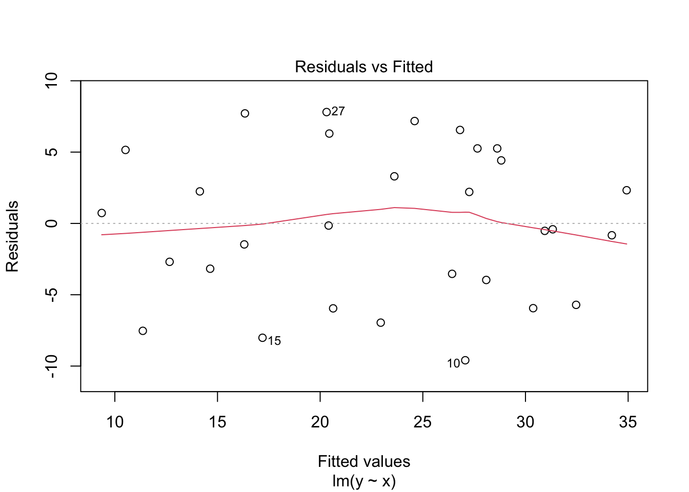
# NOT RUN -> note this works inline# view ggplot versions of diagnostic plotsggplot2::autoplot(mod)
Next section
Now we will go through how to visually assess each assumption to see if it is met and diagnosis (identify) each violation if present.
At then end, we will discuss the impacts of each departure on things such as \(MSE\), slope standard errors, prediction accuracy, etc.
We can look at the following plots to check if a linear regression function is appropriate:
Residual plot against the fitted values → This is the preferred plot for this assumption check.
When a linear regression model is appropriate, the residuals then fall within a horizontal band centered around 0, displaying no systematic tendencies to be positive and negative (randomly scattered around 0).
When the linearity assumption is violated, there are systematic deviations.
Residual plot against the predictor variable
For SLR only, this shows the same info as the residuals vs fitted values because the \(\hat{Y_i}\) are a linear function of the \(X_i\).
So the basic pattern of the plotted points is not affected whether the residual plot is against the \(X_i\) or the \(\hat{Y_i}\) (only the \(X\) scale values are affected).
For curvilinear regression and multiple regression, separate plots of the residuals against the fitted values and against the predictor variable(s) are usually helpful.
Scatterplot of\(Y\) vs \(X\) → If the actual trend in the data in linear, then it makes sense to fit a straight-line model to the data.
But, not always as effective as the residual plots. Residual plots are preferred over scatteplot, because it has two advantages:
Can also easily be used for checking other assumptions.
There are occasions when the scaling of the scatter plot places the \(Y_i\) observations close to the fitted values \(\hat{Y_i}\), for instance, when there is a steep slope. It then becomes more difficult to study the appropriateness of a linear regression function from the scatterplot, while the residual plot can clearly show any systematic pattern in the deviations around the fitted regression line under these conditions.
# initialize items# -> sample size, population parameters and error distribution parametersn<-30; beta_0<-1; beta_1<-2; sigma<-5# generate X valuesx<-runif(n =n, min =5, max =15)# generate normal error termsepsilon<-rnorm(n =n, mean =0, sd =sigma)# calculate observations Yy<-beta_0+beta_1*x+epsilon# fit modelmod_ideal<-lm(y~x)
Residuals vs fitted plot
R also adds a trend line, which we want to be approximately horizontal.
# residual vs fitted plotplot(mod_ideal, which =1)# verify smoothing line that plot.lm() performs (see discussion in nonconstant variance ideal section)plot(mod_ideal, which =1)lines(x =lowess(fitted(mod_ideal), y =resid(mod_ideal)), col ="blue")
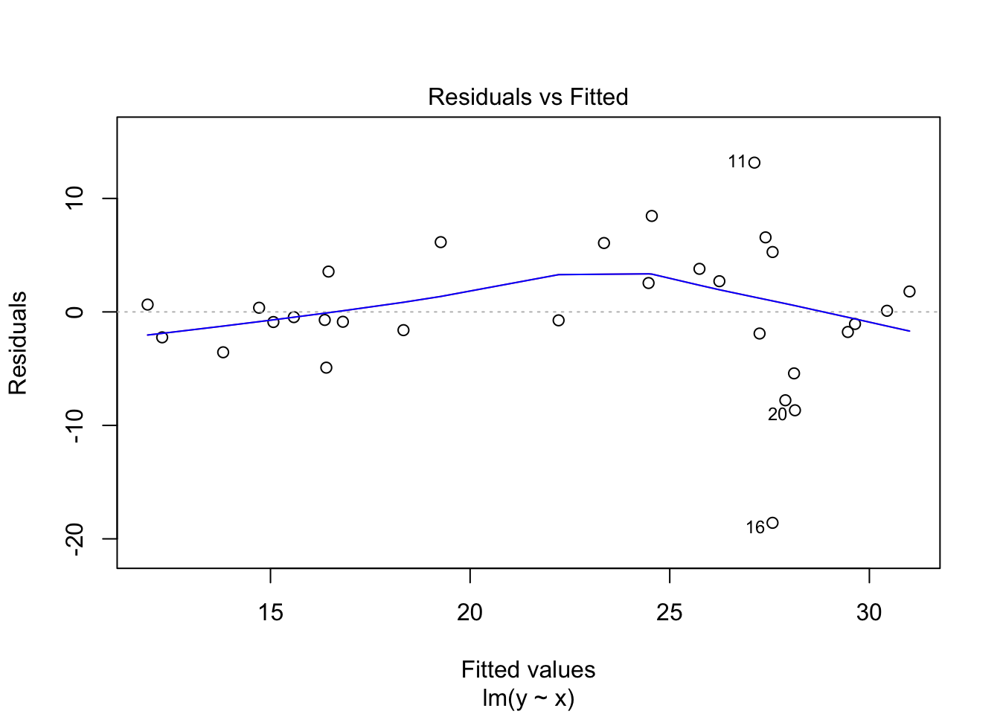
Residuals vs \(X\) plot
For SLR → Shows same pattern as above, different scale on \(X\) axis.
# create residuals vs X plot# -> add smoothing lineplot(x =x, y =residuals(mod_ideal), ylab ="residuals", main ="Residuals vs X")abline(h =0, col ="grey", lty ="dashed")lines(lowess(x =x, y =resid(mod_ideal)), col ="red")
Demo for difference when in MLR
Results → Can see different pattern (even if only slightly based on values chosen) pattern in each.
# initialize new itemsbeta_2<-3# generate new X samplex_2<-runif(n =n, min =0, max =5)# calculate new Y observations using same errors, but with both xsy_2<-beta_0+beta_1*x+beta_2*x_2+epsilon# fit new MLR modelmod_mlr<-lm(y_2~x+x_2)
# plot residuals vs fitted, X and X2# -> create dataset so can display all three plots# -> also add smoothing line to make differences in patterns more noticeabledata.frame(X1 =x, X2 =x_2, fitted =fitted(mod_mlr), residuals =residuals(mod_mlr))%>%pivot_longer(1:3, names_to ="X_axis", values_to ="value")%>%ggplot(aes(x =value, y =residuals), data =.)+geom_point()+geom_smooth(se =FALSE, method ="loess", formula =y~x)+facet_grid(.~X_axis, scales ="free")+geom_hline(yintercept =0, col ="grey", linetype ="dashed")
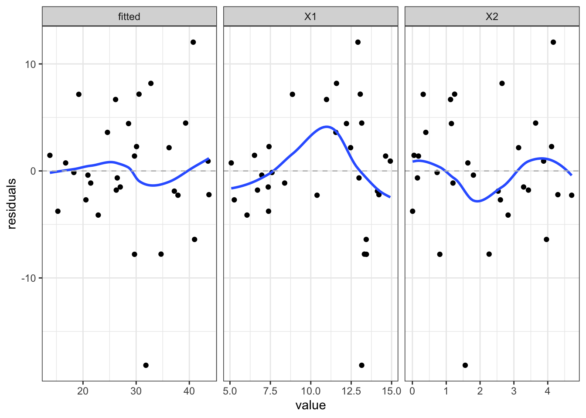
Scatterplot
# scatterplot of y vs x with regression line addedplot(x =x, y =y, main ="Scatterplot of Y vs X")abline(mod_ideal, col ="red")
Note that this is still a linear model (even though there is a higher order term), becuase the model in linear in the parameters.
# initialize items# -> sample size, population parameters and error distribution parametersn<-30; sigma<-5; beta_0<-1; beta_1<-2;beta_2<-3# generate X valuesx<-runif(n =n, min =5, max =15)# generate normal error termsepsilon<-rnorm(n =n, mean =0, sd =sigma)# calculate observations Yy<-beta_0+beta_1*x+beta_2*x^2+epsilon# fit model (only on SLR x with linear term)mod_squared_x<-lm(y~x)
Residuals vs fitted plot
# residual vs fitted plotplot(mod_squared_x, which =1)
Scatterplot
# scatterplot of y vs x with regression line addedplot(x =x, y =y, main ="Squared predictor")abline(mod_squared_x, col ="red")
Demo to show how steep slope can hide lack of fit in scatterplot, but residual plot still picks it up.
Results → For a true quadratic model, the scatterplot of \(Y\) vs \(X\) looks just linear (not noticeable curvature) when there is a large \(\beta_1\) term (coefficient of linear term). But this is misleading, especially after seeing the residual plot which shows the missing evidence of curvature.
# initialize items# -> sample size, population parameters and error distribution parametersn<-50; beta_0<-1; sigma<-5# SMALL slope of linear termbeta_1<-3beta_2<-2# generate X valuesx<-runif(n =n, min =5, max =15)# generate normal error termsepsilon<-rnorm(n =n, mean =0, sd =sigma)# calculate observations Yy<-beta_0+beta_1*x+beta_2*x^2+epsilon# fit model (only on SLR x with linear term)mod_squared<-lm(y~x)# scatterplot of y vs x with regression line added# -> can see curvatureplot(x =x, y =y, main ="Samll slope")abline(mod_squared, col ="red")
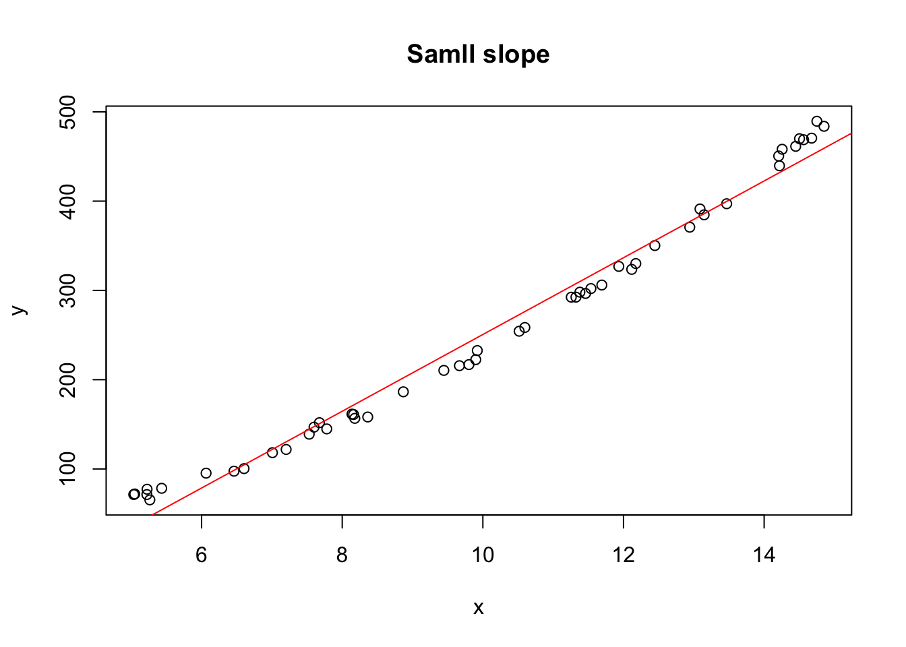
# residuals vs fitted plot# -> curvature very obvious hereplot(mod_squared, which =1)
# initialize items# -> sample size, population parameters and error distribution parametersn<-50; beta_0<-1; sigma<-5# LARGE slope of linear termbeta_1<-10beta_2<-1# generate X valuesx<-runif(n =n, min =5, max =15)# generate normal error termsepsilon<-rnorm(n =n, mean =0, sd =sigma)# calculate observations Yy<-beta_0+beta_1*x+beta_2*x^2+epsilon# fit model (only on SLR x with linear term)mod_squared<-lm(y~x)# scatterplot of y vs x with regression line added# -> curvature is hidden more, regression line looks okayplot(x =x, y =y, main ="Large slope")abline(mod_squared, col ="red")
# residuals vs fitted plot# -> curvature still visible hereplot(mod_squared, which =1)
Nonlinear because \(Y_i\) cannot be expressed as a linear combination of the \(\beta_i\)s.
# initialize items# -> sample size, population parameters and error distribution parametersn<-30; beta_0<-0.1; beta_1<-0.5; sigma<-5# generate X valuesx<-runif(n =n, min =5, max =15)# generate error termsepsilon<-rnorm(n =n, mean =0, sd =sigma)# calculate observations Yy<-beta_0*exp(beta_1*x)+epsilon# fit modelmod_nonlinear<-lm(y~x)
Scattterplot of \(Y\) vs \(X\) and residual plot
Can see obvious nonlinear pattern in scatterplot and systematic deviations in residual plot.
# scatterplot of y vs x with regression line# -> obviously not a linear patternplot(x =x, y =y, main ="Scatterplot of Y vs X")abline(mod_nonlinear, col ="red")
# residual vs fitted plot# -> definite pattern to residualsplot(mod_nonlinear, 1)
We can look at the following plots to check if the error terms have constant variance:
Residual plot against the fitted values
Again for SLR, this shows the same info as residuals vs \(X\) plot, but in MLR we want to use the fitted values.
When there is a constant error variance, points again should fall within a horizontal band. So there is a constant spread of the residuals as move across the scope of fitted (or \(X\)) values.
“Tipped over tornado” effect of the points indicates a non-constant variance (i.e. as the fitted values increase, the residuals vary more, or vice versa). Reverse megaphone (decreasing variance with increasing levels of \(X\) or \(\hat{Y}\)) is possible as well or varying in some other complex fashion. A nonconstant variance in called heteroscedasticity (the assumption is a homoscedastic error variance).
Scale-location plot → Refined version of above, preferred plot for this assumption.
Plots standardized residuals against fitted values.
There are a few ways to transform the residuals for this type of plot, all of which get at the same purpose (options include: absolute value, square root of absolute value, squared, standardized (studentized, semistudentized), square root of standardized).
By doing this, it places all of the information on changing magnitudes of the residuals above the horizontal zero line, which makes it easier to see whether the magnitude of the residuals is changing with the level \(\hat{Y}\) (\(\pm\) is not important for this condition).
The scale-location plot specifically uses the standardized residuals (which have equal variance by assumption), and are given by \(e_i^* = \frac{e_i}{\sqrt{MSE (1 - h_{ii})}}\), where the leverages \(h_{ii}\) are the diagonal entries of the hat matrix. It then takes the absolute value and square root \(\sqrt{\lvert e_i^* \rvert}\) to diminish the skewness because under \(\text{Normal}(0, \sigma^2)\), \(\sqrt{\lvert e_i^* \rvert}\) is much less skewed than \(\lvert e_i^* \rvert\).
Demo of different ways to standardize residuals (including the scale-location plot)
# scale-location plotplot(mod_ideal, which =3)# demo of the standardized residuals used above# -> check help page for plot.lm() for more details on methods behind diagnostic plots# standardize the residuals# -> manual calculation using the formula for e* or r functionsmse<-summary(mod_ideal)$sigma^2e_star<-resid(mod_ideal)%>%divide_by(sqrt(mse*(1-hatvalues(mod_ideal))))e_star<-rstandard(mod_ideal)# view final transformation of residualsdata.frame(e =resid(mod), e_star, f_e_star =sqrt(abs(e_star)))%>%head(n =5)%>%display_nice(col.names =c("Residuals $e_i$", "Standardized residuals $e_i^*$", "$f(e_i^*) = \\sqrt{\\lvert e_i^* \\rvert}$"))
Residuals $e_i$
Standardized residuals $e_i^*$
$f(e_i^*) = \sqrt{\lvert e_i^* \rvert}$
-2.377
0.578
0.760
2.992
0.504
0.710
-1.658
-0.116
0.340
6.396
-0.014
0.117
4.923
-0.527
0.726
# overlay function of standardized residuals to scale-location plot to confirm they line up points(x =fitted(mod_ideal), y =sqrt(abs(e_star)), col ="blue", pch =3)
# demo different residual plots AND different smoothers# create dataset of different standardized residuals so can display all# 0) residuals# 1) f(e*) from above (sqrt of abs of standardized residuals from scale-location)# 2) semistudentized residuals = e / sqrt(MSE)# 3) abs(residuals)# 4) sqrt(abs(residuals))# 5) residuals^2e<-resid(mod_ideal)data_plot<-data.frame("fitted"=fitted(mod_ideal),e, f_e_star =sqrt(abs(e_star)), e_semi =e/sqrt(mse), e_abs =abs(e), e_abs_sqrt =sqrt(abs(e)), e_squared =e^2)%>%pivot_longer(c(starts_with("e"), "f_e_star"), names_to ="type", values_to ="residuals")# create dataset for lowess smoothers of each residual typedata_lowess<-data_plot%>%split(.$type)%>%map2(names(.), \(df, type)data.frame(lowess(x =df$fitted, y =df$residuals), type =type))%>%reduce(bind_rows)# set more informative labels for the facetslabels_residuals<-c(e ="residuals", f_e_star ="f(standardized residuals", e_semi ="residuals / sqrt(MSE)", e_abs ="abs(residuals)", e_abs_sqrt ="sqrt(abs(residuals))", e_squared ="residuals^2")# then plot with different smoothing lines# smoothing line# -> geom_smooth() default method is loess smoother, which is a local polynomial regression fit# -> plot() uses lowess smoother, which uses locally-weighted polynomial regression # -> summary -> similar methods, slight difference# --> lowess is for adding a smooth curve to a scatterplot, i.e., for univariate smoothing, while loess is for fitting a smooth surface to multivariate datadata_plot%>%ggplot(aes(x =fitted, y =residuals), data =.)+geom_point()+geom_smooth(se =FALSE, method ="loess", formula =y~x)+geom_line(aes(x =x, y =y), data =data_lowess, col ="red")+facet_wrap(.~type, scales ="free", labeller =as_labeller(labels_residuals))+geom_hline(yintercept =0, col ="grey", linetype ="dashed")
# initialize items# -> sample size, population parametersn<-50; beta_0<-2; beta_1<-5# generate X valuesx<-runif(n =n, min =1, max =15)# specify a vector of variances, which is a function of Xsigma<-5*x# generate response Yy<-rnorm(n =n, mean =beta_0+beta_1*x, sd =sigma)# fit modelmod_increasing_error_variance<-lm(y~x)
Scatterplot
Can see more variation around ftted line as \(X\) increases.
# view scatterplot with regression lineplot(x =x, y =y)abline(mod_increasing_error_variance, col ="red")
Residuals vs fitted plot
Looking for a pattern that doesn’t follow horizontal bands as move left to right, trend line may still be horizontal though.
# residual plotplot(mod_increasing_error_variance, which =1)
Scale-location plot
Now trend line will not be horizontal after transforming residuals, should increase with an increasing variance.
# scale-location plotplot(mod_increasing_error_variance, which =3)
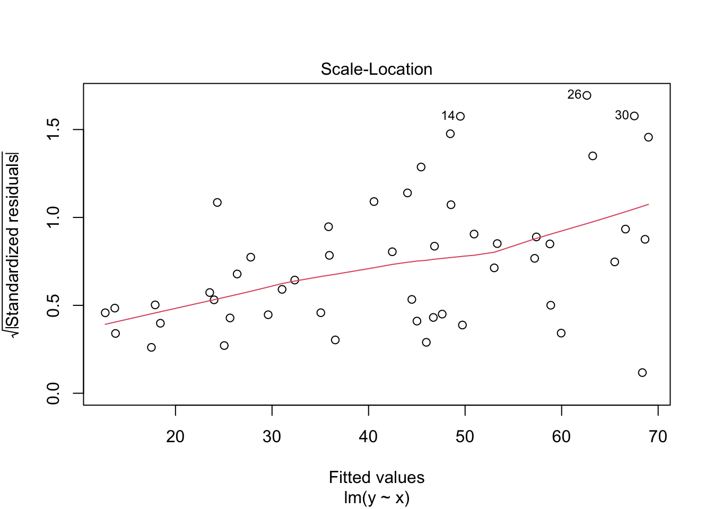
Model statement → \(Y_i = \beta_0 + \beta_1 X_i + \text{Normal}(0, \text{ decreasing then increasing } \sigma^2_i)\)
# initialize items# -> sample size, population parametersn<-50; beta_0<-2; beta_1<-5# -> specify a vector of variances instead so it sequentially increasessigma<-c(seq(from =20, to =1, length.out =n/2), seq(from =1, to =20, length.out =n/2))# generate X values# -> need pattern of variances to follow as X increases, so sort Xs afterx<-runif(n =n, min =5, max =15)%>%sort# generate response Yy<-rnorm(n =n, mean =beta_0+beta_1*x, sd =sigma)# fit modelmod_complex_error_variance<-lm(y~x)
# view scatterplot with regression line# -> now see values are closer to line in middle of plotplot(x =x, y =y)abline(mod_complex_error_variance, col ="red")
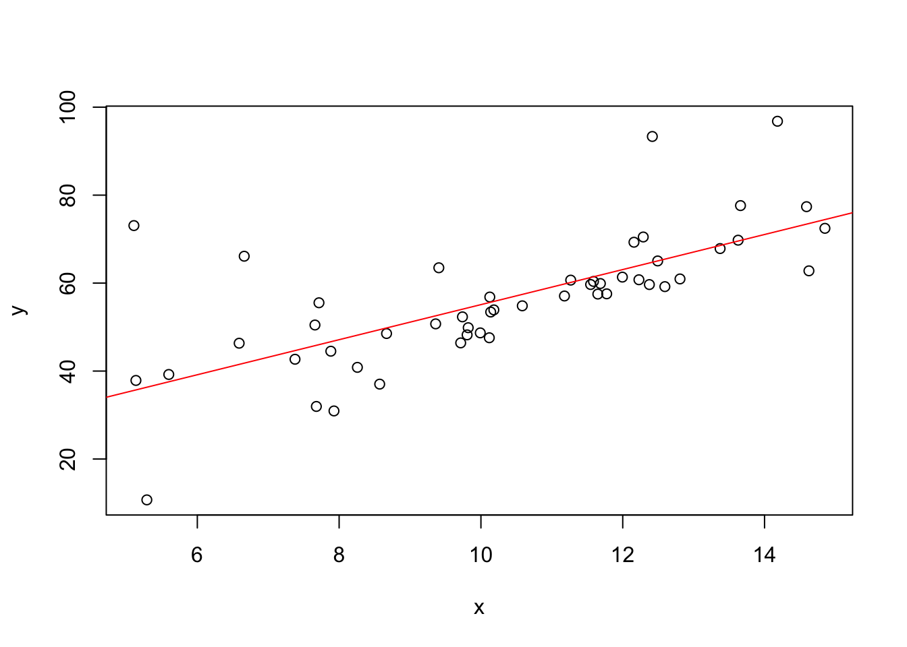
# residual plot# -> see ribbon-like patternplot(mod_complex_error_variance, which =1)
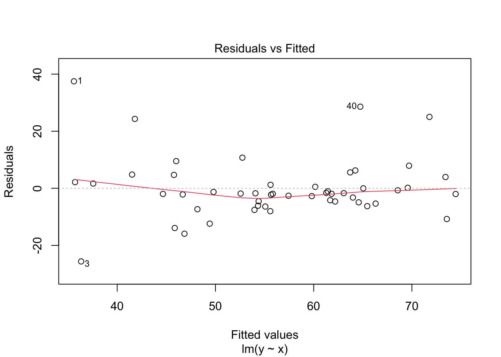
# scale-location plot# -> see U kinda patternplot(mod_complex_error_variance, which =3)
Unusual observations can create much difficulty when fitting models. When present, they can lead to a misleading fit because the line was estimated by minimizing the squared deviations.
Thus, a fitted line may be pulled disproportionately toward an unusual observation. Unusual observations far from \(\bar{X}\) have a larger impact on the model and estimates than those near \(\bar{X}\) (this is the idea of leverage / influence).
There are two types unusual observations and how we define them, check for them, and their impact is different.
Outliers → Extreme values of the response (outliers in \(Y\)).
A rough rule of thumb → When the sample size is large, semistudentized (or standardized) residuals with absolute value more than 3 or 4 can be considered outliers (i.e. outliers if \(\lvert \frac{e_i}{\sqrt{MSE}} \text{ or } e_i^* \rvert \ge 3 \text{ or } 4\)).
We can look at the following plots to check if residual outliers are present:
Residual plot against the fitted values (or\(X\))
Just looking for points far away from the pattern of the rest. In SLR, can also look at the scatterplot of \(Y\) vs \(X\) for points far from overall pattern.
Plotting of semistudentized residuals is helpful for distinguishing outiers because it’s easy to identify residuals that lie many standard deviations from zero.
Boxplots, histograms, Normal QQ of the residuals (or standardized residuals)
Can also look for outliers in the usual way based on these plots. Note that different visuals / rules will give more or less evidence for outliers.
High leverage points → Observations whose predictor values are far from the center of the predictor space (extreme values (outliers) of \(X\) or unusual combination of \(X\)s).
Plots → Residuals vs Leverage plot (or Cook’s distance plot, Cook’s dist vs Leverage (1 - Leverage) plot) → These use measures not covered yet.
(3.) Influential points → High leverage points that actually influence the slope of the regression line (outlier in \(X\) AND \(Y\)).
Plots → In order to determine if a point is influential, visualize the regression line with and without the point. Does the slope of the line change considerably? If so, then the point is influential. If not, then it’s not an influential point.
Removing unusual observations
Because unusual observations can create lots of difficulty, when we find one, we initially think that the observation resulted from a mistake or some extraneous effect. So it should be removed.
On the other hand, unusual observations may convey significant information (such as if it occurs because of an interaction with another predictor variable omitted from the model).
A safe rule → Discard an unusual observation only if there is direct evidence that it represents an error in recording, a miscalculation, a malfunctioning of equipment, or a similar type of circumstance.
Looking for observations with residuals far below or above 0.
# using ideal model from linearity assumption demo# -> randomness may result in an outlier or two# again, same plot as to check linearity and nonconstant varianceplot(mod_ideal, which =1)
# by default, on all the diagnostic plots R labels the 3 observations with the most extreme residuals # -> this says nothing about being potential outliers, just the top three# -> can change how many get labeled and what the label is (by default it is the observation number)plot(mod_ideal, which =1, id.n =10, labels.id =paste("x = ", round(x, 3), "\n y = ", round(y, 3)))
# could also add lines for 3 * sqrt(MSE) to get the same comparison as below, just in units of the original residuals# -> NOTE: bounds are off plot cause not any outliersplot(mod_ideal, which =1)mse<-summary(mod_ideal)$sigma^2abline(h =c(-3*sqrt(mse), 3*sqrt(mse)), col ="orange")
Standardized residuals vs fitted plot
Looking for observations beyond with residuals 3 or 4 away from zero after standardizing.
Both ways of standardizing get essentially the same outcomes \(\Longrightarrow\) An outlier in one will be an outlier in the other, so can just use the default R
# show how to check the standardized residual plots and compare different versions# create dataset of two different standardized residuals for variation of residual plot# 1) semistudentized residuals# 2) e* from above (standardized residuals from scale-location)data_plot<-data.frame("fitted"=fitted(mod_ideal), e_semi =resid(mod_ideal)/sqrt(mse), e_star =rstandard(mod_ideal))%>%pivot_longer(starts_with("e"), names_to ="type", values_to ="residuals")# create residual plot with smoothing line for both types of residuals# -> add bands at +/- 3 "standardized units" from zerodata_plot%>%ggplot(aes(x =fitted, y =residuals, color =type), data =., alpha =0.01)+geom_point()+geom_smooth(se =FALSE, method ="loess", formula =y~x)+geom_hline(yintercept =c(0,-3,3), col =c("grey", "orange", "orange"), linetype =c("dashed", "solid", "solid"))+scale_color_manual(name ="Type of residual", values =c(e_semi ="#F8766D", e_star ="#00BFC4"), # use hexcode of default colors when two values labels =c(e_semi ="semistudentized", e_star ="standardized"))
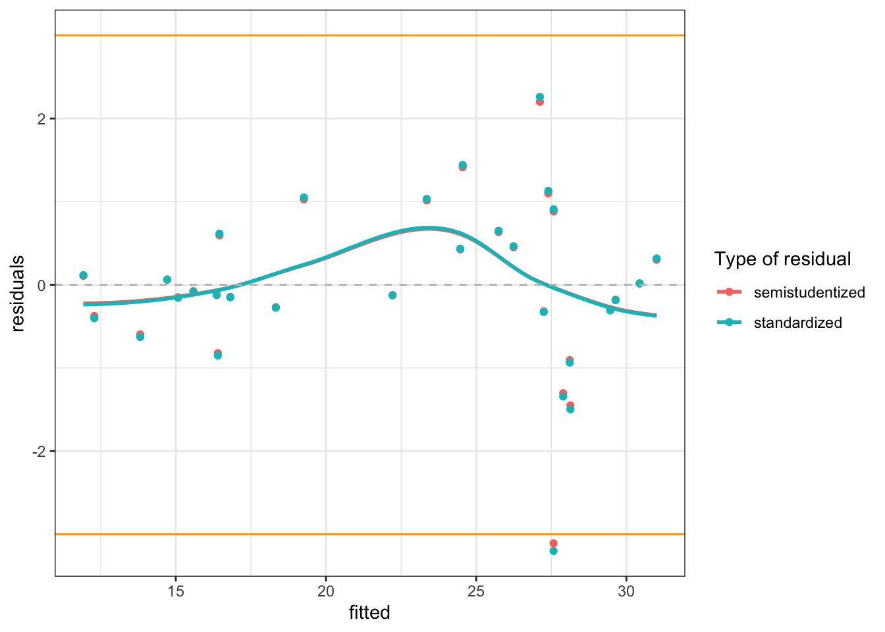
Boxplot, histogram and Normal QQ plot of residuals
Should not see any observations far away from the general patterns.
# boxplot of residualsboxplot(resid(mod_ideal), horizontal =TRUE, main ="Boxplot of residuals")
# histogram of residualshist(resid(mod_ideal), main ="Histogram of residuals")
Residuals vs Leverage plot, Cook’s distance plot and Cook’s dist vs Leverage / (1 - Leverage) plot
# diagnostic plots of: residuals vs lev, cooks dist, and cooks dist vs lev# NOT RUN -> note works inlineautoplot(mod_ideal, which =c(5,4,6))
Error in `autoplot()`:
! Objects of class <lm> are not supported by autoplot.
ℹ have you loaded the required package?
# residuals vs lev plot uses standardized residuals (and not transforming them with sqrt(abs(.)) like the scale-location plot)# -> so could add the +/- 3 lines to this plot (and for now ignore the leverage lines)# note -> lines are off plot cause no outliersplot(mod_ideal, which =5)abline(h =c(-3, 3), col ="orange")
# initialize items# -> sample size, population parameters and error distribution parametersn<-30; beta_0<-1; beta_1<-4; sigma<-5# generate X values and y values in a dataframe# (SIDENOTE -> needs to be a separate mutate() statement so y uses the x's just generated and not ones from a previous vector)data_without<-data.frame(x =runif(n =n, min =5, max =15))%>%mutate(y =rnorm(n =n, mean =beta_0+beta_1*x, sd =sigma))
# introduce outlier# -> new point follows different population regression model, but with typical X value# --> X ranges from 5 to 15 from abovedata_new<-data.frame(x =10)%>%mutate(y =rnorm(n =1, mean =(beta_0+4)+(beta_1+4)*x, sd =sigma))data_outlier<-bind_rows(data_without, data_new)
Diagnostic plots with outlier (typical \(X\) but extreme \(Y\)\(\Longrightarrow\) Outlier in \(Y\))
Can see a point with unusually large residuals (outlier in boxplot, way above / below in residual plot).
# scatterplot of data with outlierdata_outlier%$%plot(x =x, y =y)
# fit model with outliermod_outlier<-data_outlier%$%lm(y~x)# boxplot of residualsboxplot(resid(mod_outlier), horizontal =TRUE, main ="Boxplot of residuals")
# if there is an outlier in the boxplot, can extract it# -> then find the corresponding (x,y) pair(outlier<-boxplot(resid(mod_outlier), horizontal =TRUE)$out)
# residual vs fitted plot with reference lines to confirm outlierplot(mod_outlier, which =1)mse<-summary(mod_outlier)$sigma^2abline(h =c(-3*sqrt(mse), 3*sqrt(mse)), col ="orange")
# get standardized residual value of the identified outlierrstandard(mod_outlier)[31]
31
4.57264
# view regression lines with and without outlierdata_outlier%$%plot(x =x, y =y, main ="Outlier")abline(mod_outlier, col ="red")data_outlier[-31,]%$%abline(lm(y~x), col ="purple")
# introduce high-leverage point# -> new point follows same population regression model, just with extreme X valuedata_new<-data.frame(x =20)%>%mutate(y =rnorm(n =1, mean =beta_0+beta_1*x, sd =sigma))data_high_leverage<-bind_rows(data_without, data_new)
Diagnostic plots with high-leverage point (extreme \(X\) but follow pattern of \(Y\)\(\Longrightarrow\) Outlier in \(X\))
Residual of high-leverage point will be typical, but far away horizontally from the rest of the points.
# scatterplot of data with high-leverage pointdata_high_leverage%$%plot(x =x, y =y)
# fit model with high-leverage pointmod_high_leverage<-data_high_leverage%$%lm(y~x)# residual vs leverage plot with reference lines to confirm high-leverage (outlier in X) and also outlier (in Y)plot(mod_high_leverage, which =5)abline(h =c(-3,3), col ="orange")
# view regression lines with and without outlierdata_high_leverage%$%plot(x =x, y =y, main ="High-leverage point")abline(mod_high_leverage, col ="red")data_high_leverage[-31,]%$%abline(lm(y~x), col ="purple")
# introduce influential point# -> new point follows different population regression model AND extreme X valuedata_new<-data.frame(x =20)%>%mutate(y =rnorm(n =1, mean =(beta_0+4)+(beta_1+4)*x, sd =sigma))data_influential<-bind_rows(data_without, data_new)
Diagnostic plots with influential point (extreme \(X\) and does NOT follow patter of \(Y\)\(\Longrightarrow\) Outlier in \(X\) and \(Y\))
Residual of influential point will be extreme AND far away horizontally from the rest of the points.
# scatterplot of data with influential pointdata_influential%$%plot(x =x, y =y, main ="Influential point")
# fit model with influential pointmod_influential<-data_influential%$%lm(y~x)# residual vs leverage plot with reference lines to confirm high-leverage and not outlierplot(mod_influential, which =5)abline(h =c(-3,3), col ="orange")
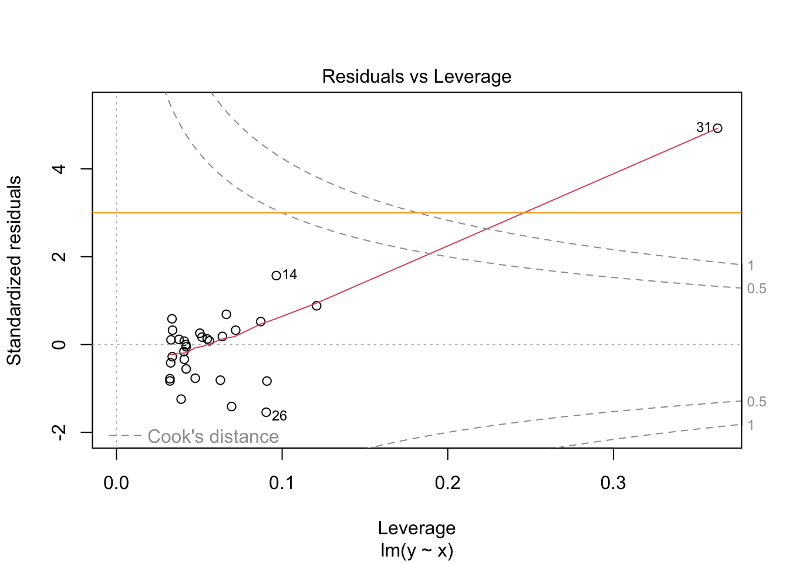
# view regression lines with and without outlierdata_influential%$%plot(x =x, y =y, main ="Influential point")abline(mod_influential, col ="red")data_influential[-31,]%$%abline(lm(y~x), col ="purple")
Ideally, any potential source of dependence is handled at the experimental design stage (or the sampling scheme), so that it is either eliminated by randomization or explicitly included in the data and we have one observation per subject.
Whenever data are obtained in a time sequence or some other type of sequence, such as for adjacent geographic areas, we can examine the potential dependence of error terms using a sequence plot of residuals.
This is used to see if there is any correlation between error terms that are near each other in the sequence.
Sequence plot of residuals
We want to plot the residuals against time, collection order, spatial coordinates, or some other indicator of the sequence that we think might affect the data.
If errors are independent, residuals hould look like a random walk around the base line zero (i.e. no obvious pattern).
Dependence (lack of randomness) can appear as a trend or cyclical pattern
Modelling with nonindependence or apparent nonindependence
It can be useful to view the problem of nonindependence of the error terms as one in which and important variable has been omitted from the model (whether it be time, observation number, etc.).
More subtle dependencies can be difficult to detect, especially if the information needed to detect them has not been included with the dataset.
When the residuals are plotted against \(X\), the plot may not appear to be random. But the basic problem could be from a poorly fitting regression function rather than a lack of independence of the error terms. Example, where a quadratic term should be included:
# using ideal model from linearity assumption demo# sequence plot of residuals vs observation numbere<-resid(mod_ideal)plot(x =1:length(e), y =e, type ="b", main ="Sequence plot of residuals vs collection order", xlab ="obs #")abline(h =0, col ="grey", lty ="dashed")
Error terms are dependent now because the mean for \(\epsilon_i\) mean is based (dependent) on the previous error term \(\epsilon_{i - 1}\).
# initialize items# -> sample size, population parameters and error distribution parametersn<-30; beta_0<-1; beta_1<-2; sigma<-5# generate X valuesx<-runif(n =n, min =5, max =15)# generate dependent normal error terms# -> setup to first generate the deviations from rnorm()# -> the first deviation is from mean = 0, the second will now be from (centered on) the first deviation# --> so just add the first deviation and the new second deviations together, which will give the effect of a new mean from which rnorm() generated the next deviationepsilon<-rnorm(n =n, mean =0, sd =sigma)%>%cumsum# calculate observations Yy<-beta_0+beta_1*x+epsilon# fit modelmod_dependent_error<-lm(y~x)
# scatterplot of y vs x with regression line# -> nothing looks amissplot(x =x, y =y, main ="Scatterplot - Dependent errors")abline(mod_dependent_error, col ="red")
# residual vs fitted plot# -> again, seems fineplot(mod_dependent_error, 1, "Residuals vs fitted - Dependent errors")
Sequence plot with dependent errors (\(\epsilon_i\) are no longer iid).
Now there is not a random walk around zero.
# sequence plot of residuals vs observation numbere<-resid(mod_dependent_error)plot(x =1:length(e), y =e, type ="b", main ="Dependent errors", xlab ="obs #")abline(h =0, col ="grey", lty ="dashed")
Dependent now because successive error terms are more likely to be greater.
# initialize items# -> sample size, population parameters and error distribution parametersn<-30; beta_0<-1; beta_1<-2; sigma<-5# generate X valuesx<-runif(n =n, min =5, max =15)# generate dependent normal error terms# -> increasing meansepsilon<-rnorm(n =n, mean =seq(from =-20, to =20, length.out =n), sd =sigma)# calculate observations Yy<-beta_0+beta_1*x+epsilon# fit modelmod_linear_trend_error<-lm(y~x)
Sequence plot with linear trend effect (still dependent).
Clear increase from in residuals with collection order → Early points more have negative residuals and later ones are positive.
# sequence plot of residuals vs observation numbere<-resid(mod_linear_trend_error)plot(x =1:length(e), y =e, type ="b", main ="Linear trend effect", xlab ="obs #")abline(h =0, col ="grey", lty ="dashed")
Dependent now because adjacent errors are more likely to be closer to each other.
# initialize items# -> sample size, population parameters and error distribution parametersn<-30; beta_0<-1; beta_1<-2; sigma<-5# generate X valuesx<-runif(n =n, min =5, max =15)# generate dependent normal error terms# -> cyclical (decreasing, then increasing, then decreasing, repeat) meansepsilon<-rnorm(n =n, mean =c(seq(from =-20, to =20, length.out =n/3),seq(from =20, to =-20, length.out =n/3),seq(from =-20, to =20, length.out =n/3)), sd =sigma)# calculate observations Yy<-beta_0+beta_1*x+epsilon# fit modelmod_cyclical_error<-lm(y~x)
Sequence plot with cyclical pattern in errors (still dependent).
Cyclical pattern in residuals against collection order.
# sequence plot of residuals vs observation numbere<-resid(mod_cyclical_error)plot(x =1:length(e), y =e, type ="b", main ="Cyclical nonindependence", xlab ="obs #")abline(h =0, col ="grey", lty ="dashed")
Small departures from normality do not create any serious problems, but major departures should be of concern.
We can check the normality of error terms in a variety of errors:
Distribution plots of residuals → This is one of the two preferred plots.
Boxplots are helpful for seeing if residuals are symmetric and if there are any possible outliers.
Histograms can also be used for the same purpose, looking for roughly normal. But the sample size needs to be reasonably large for this plot to convey reliable information about the shape of the distribution of error terms (there can be lots of fluctuation in the shape with small samples) \(\Longrightarrow\) Moderate departures from normality do not imply a serious violation of this assumption.
For both of these plots, as long as there is not severe departures, it is okay.
Comparison of relative frequencies → Use the empirical rule to compare observed relative frequencies to expected under normality.
Using \(\sqrt{MSE}\) as an estimate for \(\sigma\), for large sample size \(n\) we expect approximately:
68% of residuals to fall within \(\pm \sqrt{MSE}\).
95% of residuals to fall within \(\pm 2 \sqrt{MSE}\).
99.7% of residuals to fall within \(\pm 3 \sqrt{MSE}\).
If the sample size is moderately large, then we can the corresponding \(t_{n-1}\) critical values (multipliers).
Just looking for relative consistency with these rules.
Normal probability (QQ) plot of residuals → This is the other preffered plot.
Each standardized residual is plotted against its theoretical percentile (aka quantile, which gives us the expected value) under normality. Note that there are a few ways to make the QQ plots (different ways of standardizing residuals and different algorithms for theoretical quantiles), but none of these variations affect the nature of the plot.
A plot that is nearly linear suggests agreement with normality, whereas a plot that departs substantially from linearity suggests that the error distribution is not normal.
Again a moderate departure from normality is of little concern, only extreme departures are of note.
Difficulties in assessing normality
The analysis for model departures regarding normality is often more difficult than departures of other types because…
Random variation can be particularly mischievous when studying the nature of a probability distribution unless the sample size is quite large.
Even worse, other types of departures can and do affect the distribution of the residuals.
e.g. Residuals may appear to be not normally distributed because an inappropriate regression function is used or because the error variance is not constant.
So, it is usually a good strategy to investigate these other types of departures first, before assessing the normality of the error terms.
Looking roughly symmetric boxplot and a roughly symmetric histogram, both with no extreme outliers.
# using ideal model from linearity assumption demo# again, same distribution plots used to check residuals for outliers# boxplot of residualsboxplot(resid(mod_ideal), horizontal =TRUE, main ="Boxplot of residuals")
# histogram of residualshist(resid(mod_ideal), main ="Histogram of residuals")
Comparison of relative frequencies of residuals
Percentages should match the empirical rule.
# create relative frequency table for interval probabilities of residuals# -> assuming here 30 is large enough to use Z multipliers# -> pass z multipliers to map() statement calculating proportion of abs value residuals less than multiplier * sqrt(MSE) -> (gets interval rel freq because centered around zero)mse<-summary(mod_ideal)$sigma^2e<-resid(mod_ideal)c(1:3)%>%set_names(c("± sqrt(MSE)", "± 2 sqrt(MSE)","± 3 sqrt(MSE)"))%>%map_dbl(\(z)round(mean(abs(e)<=z*sqrt(mse)), 3))
# boxplot of residualsboxplot(resid(mod_skewed_error), horizontal =TRUE, main ="Right-skewed error")
# histogram of residualshist(resid(mod_skewed_error), freq =FALSE, main ="Right-skewed error")x_plot<-seq(from =-3, to =3, by =0.01)lines(x =x_plot, dnorm(x =x_plot))
Model statement → \(Y_i = \beta_0 + \beta_1 X_i + \text{Uniform}(a = -2, b = 2)\)
# initialize items# -> sample size, population parametersn<-50; beta_0<-2; beta_1<-5# generate X valuesx<-runif(n =n, min =1, max =15)# generate light-tailed error terms from uniform distributionepsilon<-runif(n =n, min =-2, max =2)# calculate observations Yy<-beta_0+beta_1*x+epsilon# fit modelmod_light_tailed_error<-lm(y~x)
Same methods → Relative frequencies don’t line up; likely no outliers on boxplot; the histogram may show more data closer to the center; S-shape in QQ plot.
# boxplot of residualsboxplot(resid(mod_light_tailed_error), horizontal =TRUE, main ="Light-tailed error")
# histogram of standardized residuals (so can overlay Z density curve)hist(rstandard(mod_light_tailed_error), freq =FALSE, breaks =20, main ="Light-tailed error")x_plot<-seq(from =-3, to =3, by =0.01)lines(x =x_plot, dnorm(x =x_plot))
# normal qq plotplot(mod_light_tailed_error, which =2)
# initialize items# -> sample size, population parametersn<-50; beta_0<-2; beta_1<-5# generate X valuesx<-runif(n =n, min =1, max =15)# generate heavy-tailed error terms from t-distribution# -> df = 4 so not the most extremeepsilon<-rt(n =n, df =4)# calculate observations Yy<-beta_0+beta_1*x+epsilon# fit modelmod_heavy_tailed_error<-lm(y~x)
Same methods → Again, relative frequencies don’t line up; likely outliers on both sides of boxplot; the histogram will may show more data away from the center; flipped S-shape in QQ plot.
# boxplot of residualsboxplot(resid(mod_heavy_tailed_error), horizontal =TRUE, main ="Heavy-tailed error")
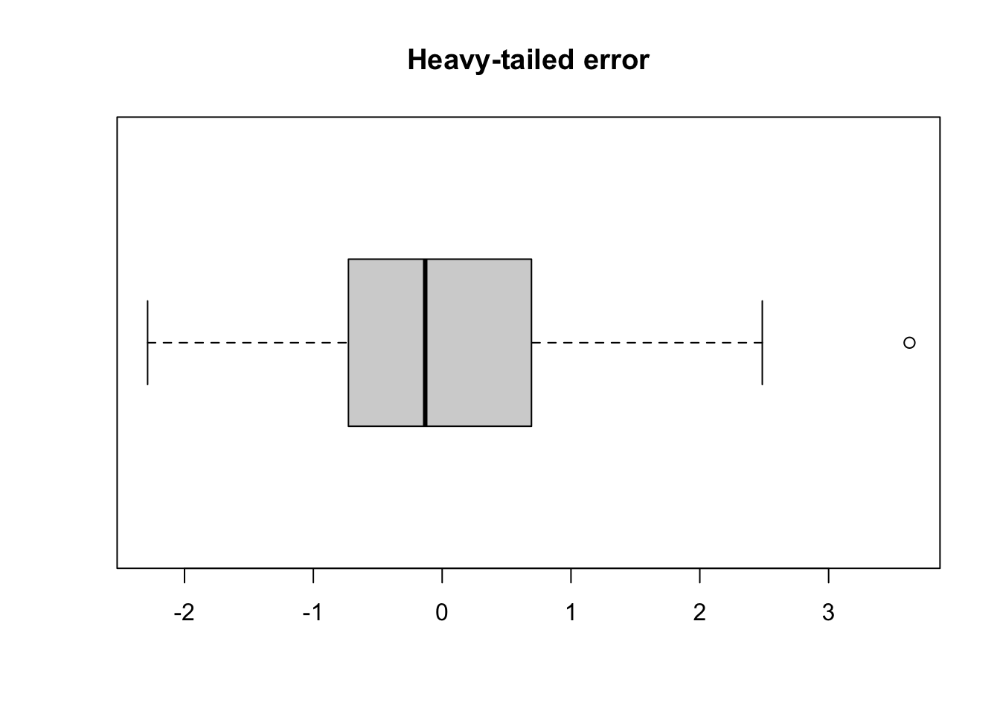
# histogram of standarized residuals (so can overlay Z density curve)hist(rstandard(mod_heavy_tailed_error), freq =FALSE, breaks =20, main ="Heavy-tailed error")x_plot<-seq(from =-3, to =3, by =0.01)lines(x =x_plot, dnorm(x =x_plot))
# normal qq plotplot(mod_heavy_tailed_error, which =2)
Residuals should also be plotted against variables omitted from the model that might have important effects on the response.
Allows us to see whether or not the residuals tend to vary systematically with the level of the additional predictor variable (can be qualitative or quantitative).
Only a few of the factors operating on any response variable \(Y\) in real-world situations can be included explicitly in a regression model (depends on what data was collected).
So when using residual analysis to identify other important predictors, we are simply testing the adequacy of the model and seeing if it could be improved materially by adding one or more predictor variables.
In doing so, we can provide important additional descriptive and predictive power to the model.
# initialize items# -> sample size, population parameters and error distribution parametersn<-30; beta_0<-1; beta_1<-3; sigma<-5# unimportant predictorbeta_2<-0# generate X samplesx_1<-runif(n =n, min =5, max =15)x_2<-runif(n =n, min =0, max =5)# generate normal error termsepsilon<-rnorm(n =n, mean =0, sd =sigma)# calculate Y observations using with both xs# -> beta_2 = 0 cancels out x_2 termsy<-beta_0+beta_1*x_1+beta_2*x_2+epsilon# fit simplified (correct) modelmod_correct<-lm(y~x_1)
Residuals vs fitted plot
Looks like random noise, no systematic deviations when residuals for correct model are plotted against unimportant (unrelated) omitted predictor.
# residual plot against unimportant predictor not included in model# -> no systematic variation of residuals by additional predictorplot(x =x_2, y =resid(mod_correct), main ="Residuals vs unimportant predictor")abline(h =0, col ="grey", lty ="dashed")lines(lowess(x =x_2, y =resid(mod_correct)), col ="red")
# initialize items# -> sample size, population parameters and error distribution parametersn<-30; beta_0<-1; beta_1<-3; sigma<-5# important predictorbeta_2<-5# generate X samplesx_1<-runif(n =n, min =5, max =15)x_2<-runif(n =n, min =0, max =5)# generate normal error termsepsilon<-rnorm(n =n, mean =0, sd =sigma)# calculate Y observations using with both xsy<-beta_0+beta_1*x_1+beta_2*x_2+epsilon# fit incorrect model (missing X2)mod_missing_important_x<-lm(y~x_1)
Residuals vs fitted plot
Now there is a pattern in the residuals for the omitted important predictor.
# residual plot against important predictor not included in model# -> now there is a clear patternplot(x =x_2, y =resid(mod_missing_important_x), main ="Missing predictor")abline(h =0, col ="grey", lty ="dashed")lines(lowess(x =x_2, y =resid(mod_missing_important_x)), col ="red")
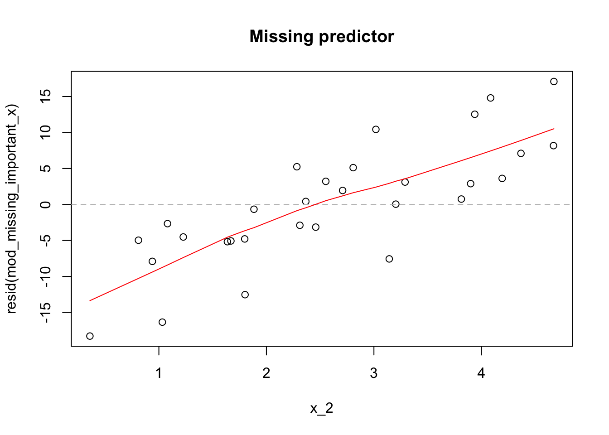
3.4 Effects of departures
3.5 Tests
3.5.1\(F\) test for lack of fit
This is a formal test for determining whether a specific type of regression function adequately fits the data.
Assumptions
The lack of fit test assumes that the observations Y for given X are (1) independent and (2) normally distributed, and that (3) the distributions of the same variance \(\sigma^2\).
The lack of fit test requires repeat observations at one or more \(X\) levels (just this is sufficient). In observational studies, these just happen by chance.
Repeat trials for the same level of the predictor variable are called replications. The resulting observations are called replicates.
Notation
We need to modify our notation to recognize the existence of replications at some levels of \(X\).
Let the different \(X\) levels in the study, whether or not replicated observations are present, as \(X_1, \ldots , X_c\) (so there are \(c\) unique values of \(X\)).
Let the number of replicates for the \(j\)th level of \(X\) as \(n_j\). Thus the total number of observations is given by \(\displaystyle n = \sum_{j = 1}^c n_j\).
Let the observed value of the response variable for the \(i\)th replicate for the \(j\)th level of \(X\) by \(Y_{ij}\), where \(i = 1, \ldots, n_j, \hspace{10pt} j = 1, \ldots, c\).
Let the mean of the \(Y\) observations at the level \(X = X_j\) by \(\bar{Y}_j\).
Full model
The general linear test approach begins with the specification of the full model. The full model used for the lack of fit test makes the same assumptions as the simple linear regression model, except for assuming a linear regression relation (which is what we are testing against in this case).
So the full model is (where \(\mu_{ij}\) are parameters \(j = 1, \ldots, c\) and \(\epsilon_{ij} \overset{iid}\sim \text{Normal}\,(0, \sigma^2)\):
\[Y_{ij} = \mu_j + \epsilon_{ij} \hspace{20pt} \text{full model}\] - Thus the parameter \(\mu_j\) is the mean response when \(X = X_j\):
\[E(Y_{ij}) = \mu_j\]
This full model is like the SLR model in that it specifies the each response is made of two components: the mean response when \(X = X_j\) and a random error term. The difference is that in the full model there is no restrictions on the means \(\mu_j\), whereas the SLR model the mean responses are linearly related to \(X\) (i.e. \(E(Y) = \beta_0 + \beta_1 X\)).
To fit the full model to the data, we require the least squares or maximum likelihood estimators for the parameters \(\mu_j\). It can be shown the estimators are the sample means:
\[\hat{\mu}_j = \bar{Y}_j\]
Thus, the estimated expected value for observation \(Y_{ij}\) is \(\bar{Y}_j\), and the error sum of squares for the full model therefore is:
In the context of the test for lack of fit, the full model error sum of squares above is called the pure error sum of squares (SSPE).
Note that \(SSPE\) is made up of the sums of squared deviations at each \(X\) level. At level \(X = X_j\), this sum of squared deviations is shown below, which then get added over all of the \(X\) levels (\(j = 1, \ldots , c\)):
\[\sum_i (Y_{ij} - \bar{Y}_j)^2\] - Also note that if there is no replication at an \(X\) level, then \(Y_{1j} = \bar{Y}_j\) and the sum of square is simply 0 (this is why we need replication).
The degrees of freedom associated with \(SSPE\) is found like usual. At each \(X_j\), there are \(n_j - 1\) df. Then sum over \(j\):
\[df_F = \sum_j^c (n_j - 1) = \sum_j^c n_j - c = n - c\]
Note that any \(X\) level with no replications makes no contribution to \(df_F\) because \(n_j - 1 = 1 - 1 = 0\).
Reduced model
The general linear test approach next requires consideration of the reduced model under \(H_0\). For testing the appropriateness of a linear regression relation, the hypotheses are:
Note that the reduced model is the ordinary simple linear regression model as usual, with the subscripts modified to recognize the existence of replications. We know that the estimated expected value for observation \(Y_{ij}\) with usual regression model is the fitted value \(Y_{ij}\)
\[Y_{ij} = \hat{\beta}_0 + \hat{\beta}_1 X_j\]
Hence, the error sum of squares for the reduced model is the usual error sum of squares \(SSE\)
The definition of the lack of fit sum of squares \(SSLF\) above indicates that we have decomposed the error sum of squares SSE into two components:
\[SSE = SSPE + SSLF\]
The decomposition comes from the identity (which shows that the error deviations in \(SSE\) are made up of a pure error component and a lack of fit component):
Last formula above indicates clearly why \(SSLF\) measures lack of fit.
If the linear regression function is appropriate, then the means \(\bar{Y}_j\) will be near the fitted values \(\hat{Y}_j\) calculated from the estimated linear regression function and \(SSLF\) will be small.
On the other hand, if the linear regression function is not appropriate, the means \(\bar{Y}_j\) will not be near the fitted values calculated from the estimated linear regression function and \(SSLF\) will be large.
This formulas also indicates why \(c - 2\) degrees of freedom are associated with \(SSLF\).
There are \(c\) means \(\bar{Y}_j\) in the sum of squares (\(\approx\)\(c\) observations), and two dfs are lost in estimating the parameters \(\beta_0\) and \(\beta_1\) of the linear regression function to obtain the fitted values \(\hat{Y}_j\).
An ANOVA table can be constructed for the decomposition of SSE.
Notes
The reason for the term “pure error” is that \(MSPE\) is always an unbiased estimator of the error term variance \(\sigma^2\), no matter what is the true regression function. But we still always use \(MSE\) becuase it has more df.
The general linear test approach just explained can be used to test the appropriateness of other regression functions. Only the degrees of freedom for \(SSLF\) will need be modified. In general, \(c - p\) degrees of freedom are associated with \(SSLF\), where \(p\) is the number of parameters in the regression function.
The alternative \(H_A\) includes all regression functions other than a linear one. For instance, it includes a quadratic regression function or a logarithmic one. If \(H_A\) is concluded, a study of residuals can be helpful in identifying an appropriate function.
# generate data from ideal model (no lack of fit -> expecting to not reject)# initialize items# -> sample size, population parameters and error distribution parametersn<-50; beta_0<-1; beta_1<-2; sigma<-5# generate X values (asuming there will be some replicates)x<-extraDistr::rdunif(n =n, min =0, max =10)# calculate observations Yy<-beta_0+beta_1*x+rnorm(n =n, mean =0, sd =sigma)# plot and add lines (don't have a straight line anymore, so can't use abline() for unrestricted model)# -> have to plot x vs y-hat, but sorted according to xplot(x, y)lm(y~as.factor(x))%>%{data.frame(y_hat =fitted(.), x)}%>%arrange(x)%$%lines(x, y_hat, col ="blue")abline(lm(y~x), col ="red")
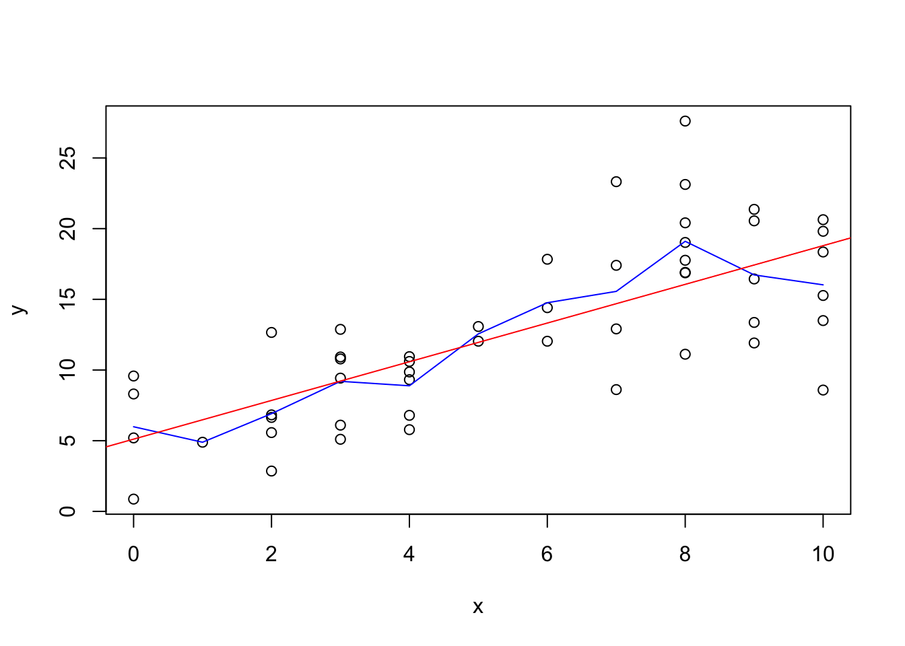
Reduced model trend line follows group means line fairly well.
# fit reduced model# -> SLR model E(Y) + B0 + B1Xmod_reduced<-lm(y~x)summary(mod_reduced)
Call:
lm(formula = y ~ x)
Residuals:
Min 1Q Median 3Q Max
-8.8036 -2.6111 0.4027 2.9257 11.6057
Coefficients:
Estimate Std. Error t value Pr(>|t|)
(Intercept) 1.373 1.226 1.120 0.268
x 1.821 0.212 8.591 0.0000000000286 ***
---
Signif. codes: 0 '***' 0.001 '**' 0.01 '*' 0.05 '.' 0.1 ' ' 1
Residual standard error: 4.355 on 48 degrees of freedom
Multiple R-squared: 0.6059, Adjusted R-squared: 0.5977
F-statistic: 73.81 on 1 and 48 DF, p-value: 0.00000000002858
# run lack of fit test# -> looking at F and PR(>F)(at<-anova(mod_full, mod_reduced))
Analysis of Variance Table
Model 1: y ~ as.factor(x)
Model 2: y ~ x
Res.Df RSS Df Sum of Sq F Pr(>F)
1 39 716.24
2 48 910.25 -9 -194 1.1737 0.3383
# other terms# -> Sum of Sq = SSLF --> MSLF = SSLF / change in Df# -> RSS(1) = SSPE --> MSPE = SSPE / Res. Df(1)# -> F = MSLF / MSPE
Setup dataset to manually calculate the required mean squares.
# order data by X variable# -> use this dataset for the remainder of the calculationsdata_sorted<-data.frame(y, x)%>%arrange(x)# refit model on sorted data (so fitted values and residuals pull in correctly later)mod_reduced<-lm(y~x, data_sorted)# calculate group means by X variabledata_group_means<-data_sorted%>%group_by(x)%>%summarize(group_mean =mean(y))# complete table to manually perform LOF test# -> append predicted values from reduced model# -> add group means by merging with group means dataset# -> calculate:# --> residual = Y - hat(Y) = obs - pred value -> measure total deviation# --> pure error = Y - bar(Y)_j = obs - group mean -> measures the pure error, which is the randomness result from the data, not from the choice of model# --> lack of fit error = bar(Y)_j - hat(Y) = group mean - pred value -> measures the lack of fit deviation, which is the error result from the choice of model and could be improved with a better modedata_lof_process<-data_sorted%>%mutate(predicted_value =fitted(mod_reduced), residual =residuals(mod_reduced))%>%left_join(data_group_means, by ="x")%>%mutate(pure_error =y-group_mean, lof_error =group_mean-predicted_value)head(data_lof_process, n =10)
# compute final sums of squares# -> lack of fit dataset is setup so that each quantity is calculated for every row# --> just need to square each value and sum(data_ss<-data_lof_process%>%summarize(error =sum(residual^2), lf =sum(lof_error^2), pe =sum(pure_error^2)))
# set vector of df# -> df sse = n - 2 (for slr, in general p)# -> df sslf = c - 2 = # of x levels - 2 # -> df sspe = n - cn<-nrow(data_sorted)c<-nrow(data_group_means)df<-c("error"=n-length(coef(mod_reduced)),"lf"=c-length(coef(mod_reduced)),"pe"=n-c)# reshape SS data to add df(data_anova_table<-data_ss%>%pivot_longer(cols =1:3, names_to ="type", values_to ="ss")%>%bind_cols(data.frame(df)))
# A tibble: 3 × 3
type ss df
* <chr> <dbl> <int>
1 error 910. 48
2 lf 194. 9
3 pe 716. 39
Calculate mean squares.
# add MS to anova table# -> MS = SS / df(data_anova_table%<>%mutate(ms =ss/df))
# A tibble: 3 × 4
type ss df ms
<chr> <dbl> <int> <dbl>
1 error 910. 48 19.0
2 lf 194. 9 21.6
3 pe 716. 39 18.4
# compute final LOF test statistic# -> F* = MSLF / MSPE# -> convert to numeric so end result isn't a dataframe(F_star<-as.numeric(data_anova_table[data_anova_table$type=="lf", "ms"])/as.numeric(data_anova_table[data_anova_table$type=="pe", "ms"]))
# compute critical value# -> LOF critical value (and test statistic) ~ F(c-2, n-c)# -> right tailed testalpha<-0.05(F_crit<-qf(p =alpha, df1 =c-2, df2 =n-c, lower.tail =FALSE))
[1] 2.130597
Conclusion
# compare test statistic and critical value# -> critical value way: if F* >> F_crit, then reject# -> p-value way: if P(F > F*) < alpha = then rejectF_star>F_crit
FAIL TO REJECT. There is not a lack of fit issue with the data.
# generate data from complex model (lack of fit -> expecting to reject)# initialize items# -> sample size, population parameters and error distribution parametersn<-50; beta_0<-1; beta_1<-2; beta_2<-2; beta_3<-2; sigma<-10# generate X values (asuming there will be some replicates)x<-extraDistr::rdunif(n =n, min =1, max =10)# calculate observations Yy<-beta_0+beta_1*x+beta_2*x^2+beta_3*log(x)+rnorm(n =n, mean =0, sd =sigma)# plot and add linesplot(x, y)lm(y~as.factor(x))%>%{data.frame(y_hat =fitted(.), x)}%>%arrange(x)%$%lines(x, y_hat, col ="blue")lm(y~x+I(log(x)))%>%{data.frame(y_hat =fitted(.), x)}%>%arrange(x)%$%lines(x, y_hat, col ="red")
Lines are close, but the reduced model is relatively far (keep in mind \(Y\) scale) the unrestricted model at certain \(X\) levels.
# fit reduced model# -> polynomial model E(Y) + B0 + B1 X + B2 ln(X)mod_reduced<-lm(y~x+I(log(x)))summary(mod_reduced)
Call:
lm(formula = y ~ x + I(log(x)))
Residuals:
Min 1Q Median 3Q Max
-33.058 -6.848 -0.422 7.292 19.775
Coefficients:
Estimate Std. Error t value Pr(>|t|)
(Intercept) -24.649 3.625 -6.799 0.0000000164965 ***
x 38.319 1.750 21.902 < 0.0000000000000002 ***
I(log(x)) -61.646 7.374 -8.360 0.0000000000743 ***
---
Signif. codes: 0 '***' 0.001 '**' 0.01 '*' 0.05 '.' 0.1 ' ' 1
Residual standard error: 10.97 on 47 degrees of freedom
Multiple R-squared: 0.9803, Adjusted R-squared: 0.9795
F-statistic: 1169 on 2 and 47 DF, p-value: < 0.00000000000000022
# perform lack of fit testanova(mod_full, mod_reduced)
Analysis of Variance Table
Model 1: y ~ as.factor(x)
Model 2: y ~ x + I(log(x))
Res.Df RSS Df Sum of Sq F Pr(>F)
1 40 2908.6
2 47 5656.7 -7 -2748.2 5.3991 0.0002066 ***
---
Signif. codes: 0 '***' 0.001 '**' 0.01 '*' 0.05 '.' 0.1 ' ' 1
# this matched when ran same scenario through manual process!
This shows significant lack of fit. So add in missing polynomial and retry.
# plot and add line (don't have a straight line anymore, so can't use abline())# -> have to plot x vs y-hat, but sorted according to x# -> NOTE both TRUE and FALSE for raw lead to SAME predictions, but DRASTISCALLY different estimates, perhaps because multicollinearity gives biased estimatesplot(x, y)lm(y~as.factor(x))%>%{data.frame(y_hat =fitted(.), x)}%>%arrange(x)%$%lines(x, y_hat, col ="blue")lm(y~poly(x, 2, raw =TRUE))%>%{data.frame(y_hat =fitted(.), x)}%>%arrange(x)%$%lines(x, y_hat, col ="red")
Now the unrestriced and the reduced model are almost equivalent at all points.
# fit full model# -> E(Y) = mu_j = anything other than B0 + B1 X + B2 ln(X)mod_full<-lm(y~as.factor(x))summary(mod_full)
# fit reduced model# -> polynomial model E(Y) + B0 + B1 X + B2 ln(X)mod_reduced<-lm(y~poly(x, 2, raw =TRUE)+I(log(x)))summary(mod_reduced)
Call:
lm(formula = y ~ poly(x, 2, raw = TRUE) + I(log(x)))
Residuals:
Min 1Q Median 3Q Max
-25.0347 -4.7181 -0.0343 5.2464 15.1287
Coefficients:
Estimate Std. Error t value Pr(>|t|)
(Intercept) 5.4964 6.3732 0.862 0.393
poly(x, 2, raw = TRUE)1 -1.4894 7.6317 -0.195 0.846
poly(x, 2, raw = TRUE)2 2.1850 0.4119 5.305 0.00000314 ***
I(log(x)) 6.9206 14.1951 0.488 0.628
---
Signif. codes: 0 '***' 0.001 '**' 0.01 '*' 0.05 '.' 0.1 ' ' 1
Residual standard error: 8.735 on 46 degrees of freedom
Multiple R-squared: 0.9878, Adjusted R-squared: 0.987
F-statistic: 1239 on 3 and 46 DF, p-value: < 0.00000000000000022
# perform lack of fit testanova(mod_full, mod_reduced)
Analysis of Variance Table
Model 1: y ~ as.factor(x)
Model 2: y ~ poly(x, 2, raw = TRUE) + I(log(x))
Res.Df RSS Df Sum of Sq F Pr(>F)
1 40 2908.6
2 46 3509.4 -6 -600.85 1.3772 0.2474
If the normal error SLR model is not appropriate for a dataset, there are two basic choices, both of which have their advantages and disadvantages:
Abandon this model and develop and use a more appropriate model.
Pro → May lead to a more complex model that could yield better insights.
Con → May also lead to more complex procedures for estimating the parameters.
Use some transformation on the data so that the normal error SLR model is appropriate for the transformed data.
Pro → Leads to relatively simple methods of estimation with smaller models (less parameters), which is desirable when the sample size is small.
Con → Transformations may obscure the fundamental interconnections between the variables, though at other times they may illuminate them.
Now we consider only transformations (will cover more complex models in later chapters).
Here is a more in depth discussion of when to use which transformation:
Nonlinearity of the regression function
When the regression function is not linear, a direct approach is to modify the SLR regression model by altering the nature of the regression function (these methods will be discussed much later). For example,
Quadratic regression function (this is an example of a polynomial regression function) → \(E(Y) = \beta_0 + \beta_1 X + \beta_2 X^2\)
Exponential regression function (another example of a nonlinear regression function) → \(E(Y) = \beta_0 \cdot \beta_1^X\)
The transformation approach uses a transformation to linearize (at least approximately linearize) a nonlinear regression function.
When the nature of the regression function is unknown, exploratory analysis that does not require specifying a particular type of function is often useful (such as LOWESS regression).
Nonconstancy of the error variance
When the error variance is not constant but varies in a systematic fashion, a direct approach is to modify the model to allow for this and use the method of weighted least squares to obtain the estimators of the parameters.
Transformations can also be effective in stabilizing the variance, some will be shown shortly.
Nonindependence of error terms
When the error terms are correlated, the easiest method is to switch to a time series model.
Nonnormality of error terms
Lack of normality and nonconstant error variances occur together. Fortunately, it is often the case that the same transformation that helps stabilize the variance is also helpful in approximately normalizing the error terms.
This is why we should address the nonconstant variance (apply the appropriate stabilizing transformation), then do residual analysis to see if there are still serious departures from normality present.
Omission of important predictor variables
When residual analysis indicates that an important predictor variable has been omitted from the model, the solution is to modify the model with multiple regression (two or more predictor variables).
Unusual observations
When unusual observations are present (could be outliers, high-leverage points, or influential points) using LSE or MLE may lead to serious distortions in the estimated regression function.
When these unusual obesrvations are not data errors (and thus shouldn’t be thrown out), it may be desirable to use an estimation procedure that places less emphasis on them. One type of these models is discuss much later.
3.7 Transformations
Now we will talk about the use of transformations on one or both of the original variables before carrying out the regression analysis.
Simple transformations of either the response variable \(Y\) or the predictor variable \(X\), or of both, are often sufficient to make the SLR model appropriate for the transformed data.
3.7.1 Transformations for nonlinear relation only
Overview
Goal → Linearize a nonlinear regression relation.
Use when → Distribution of error terms is reasonably close to a normal distribution AND have approximately constant variance.
Strategy → Transformations on \(X\) should be attempted.
Transformations on \(Y\), such as \(Y' = \sqrt{Y}\), may not be desirable here because they can materially change the shape of the distribution of the error terms from the normal distribution and may also lead to substantially differing error term variances.
e.g.) \(Y = \beta_0 + \beta_1 X + \epsilon\), where \(\epsilon \sim \text{Normal}\,\)\(\rightarrow\)\(\sqrt{Y} = \beta_0 + \beta_1 X + \text{new }\epsilon\)
Specific transformations
Below are some prototype nonlinear regression relations with some simple transformations on \(X\) that may be helpful for linearizing without affecting the distribution of \(Y\).
Several transformations can be tried.
Scatter plots and residual plots based on each should be made and analyzed to decide which transformation is most effective.
At times, it may be helpful to introduce a constant into the transformation.
e.g. If some of the \(X\) data are near zero and the reciprocal transformation is desired, we can shift the origin by using the transformation \(X' = \frac{1}{X + k}\), where \(k\) is an appropriately chosen constant.
Scatterplot of relationship between \(Y\) and \(X\)
Main issue → See curvilinear pattern (in this case \(Y\) grows slower as \(X\) increases). So standard SLR model not appropriate (note that in reality, we have no idea what type model this came from).
Roughly same variance in \(Y\) as \(X\) increases (imagining spread of observations relative to the smooth curve; the residual plot looks bad because of the lack of fit) and QQ plot looks decent enough → So only issue is the linearity, which means we want to transform \(X\) based on the specific pattern.
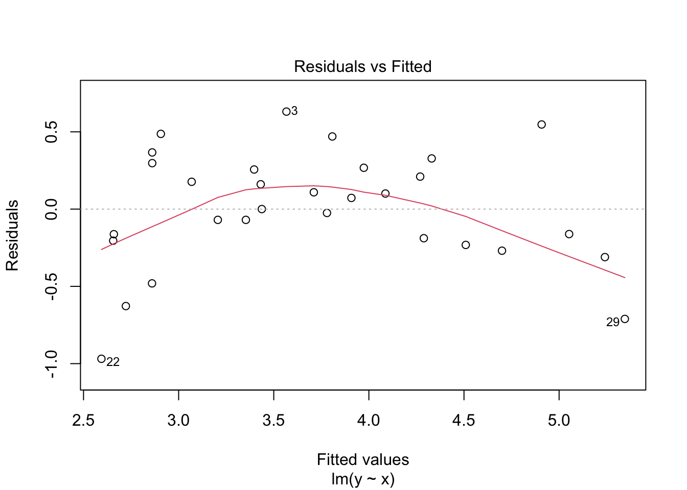
Attempt two transformations chosen based on the observed pattern: 1a) \(X' = \log_{10}(X)\) 1b) \(X' = \ln(X)\) and 2) \(X' = \sqrt{X}\). Then view transformed scatterplots.
All greatly improve the linear aspect of the regression. Note that \(\log_{10}(X)\) and \(\ln(X)\) have the same linearizing effect, obviously the scales are different for the results.
The variability of the scatter at the different \(X\) levels is the same as before, since we did not make a transformation on \(Y\).
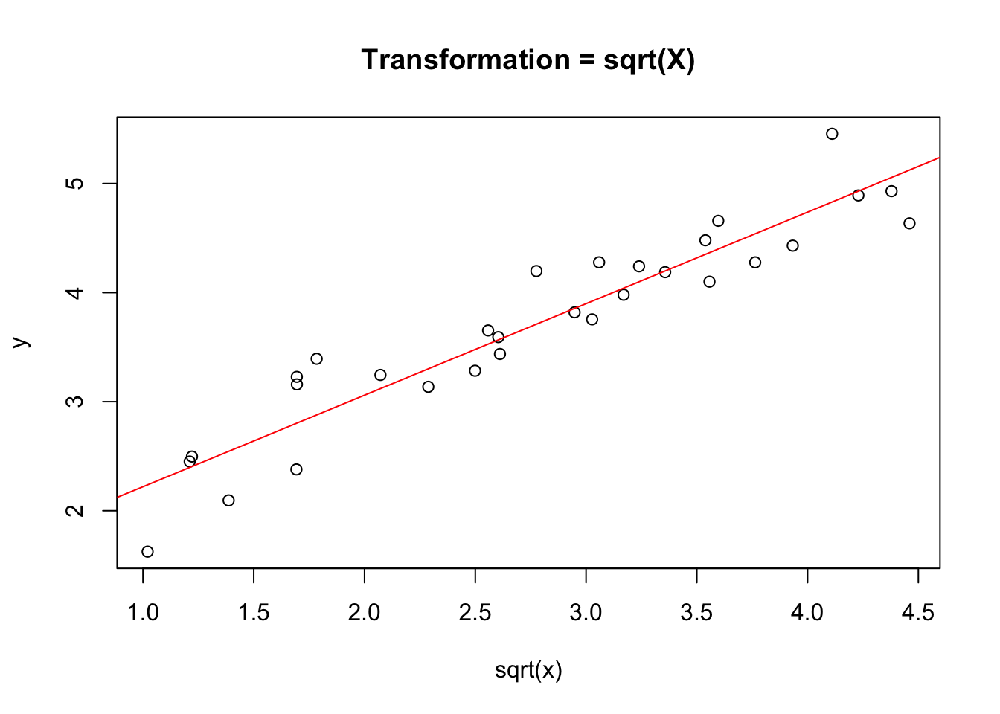
Look at diagnostics for fitted models based on transformed \(X\)s.
Residual plots are just fine now and normal QQ plots still look good.
# fit models on transformed X variablesmod_log10_x<-lm(y~log10(x))mod_ln_x<-lm(y~log(x))mod_sqrt_x<-lm(y~sqrt(x))# view some diagnostic plots for models with transformationsplot(mod_log10_x, which =1:2)
# view model summaries (just the R^2)# -> ln and log10 models give different coefficients, but SAME MSE and R^2, see last tab 'effect of scalars and constants' for whysummary(mod_log10_x)
Call:
lm(formula = y ~ log10(x))
Residuals:
Min 1Q Median 3Q Max
-0.44821 -0.13749 0.00592 0.10883 0.57964
Coefficients:
Estimate Std. Error t value Pr(>|t|)
(Intercept) 1.869 0.133 14.06 0.0000000000000328 ***
log10(x) 2.213 0.129 17.15 < 0.0000000000000002 ***
---
Signif. codes: 0 '***' 0.001 '**' 0.01 '*' 0.05 '.' 0.1 ' ' 1
Residual standard error: 0.2215 on 28 degrees of freedom
Multiple R-squared: 0.9131, Adjusted R-squared: 0.91
F-statistic: 294.3 on 1 and 28 DF, p-value: < 0.00000000000000022
Compare these the models \(R^2\) to the original untransformed: 0.793
Scatterplot of relationship between \(Y\) and \(X\)
See curvilinear pattern (in this case \(Y\) grows faster as \(X\) increases) \(\Longrightarrow\) SLR model not appropriate.
Constant variance through smooth curve and okay QQ plot \(\Longrightarrow\) Try \(X\) transformation to straighten out \(Y\).
Attempt two transformations chosen based on the observed pattern: 1) \(X' = X^2\) and 2) \(X' = \mathrm{e}^X\).
Both seem to improve the linearity, although not perfectly.
Look at diagnostics for fitted models based on transformed \(X\)s.
Still a bit of curvature in the residual plot, but normal QQ plots still look good.
# fit models on transformed X variablesmod_squared_x<-lm(y~I(x^2))mod_exp_x<-lm(y~exp(x))# view some diagnostic plots for models with transformationsplot(mod_squared_x, which =1:2)
Compare these the models \(R^2\) to the original untransformed: 0.785
Scatterplot of relationship between \(Y\) and \(X\)
See curvilinear pattern (in this case \(Y\) decreases slower as \(X\) increases) \(\Longrightarrow\) SLR again model not appropriate.
Still constant variance and approximately normal residuals, \(\Longrightarrow\) Just transform \(X\).
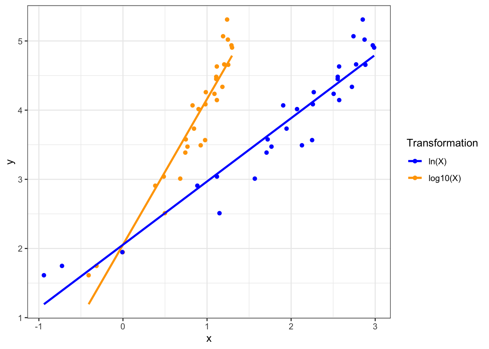
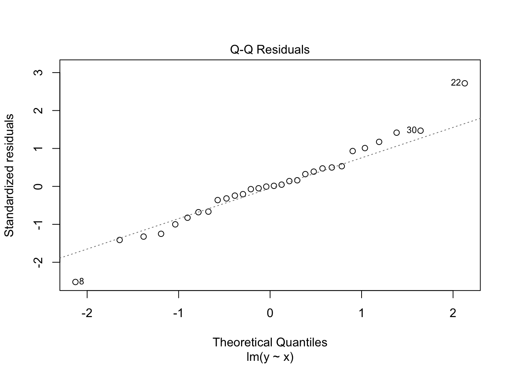
Attempt two transformations chosen based on the observed pattern: 1a) \(X' = 1 / X\) 1b) \(X' = 1 / (X + k)\) and 2) \(X' = \mathrm{e}^{-X}\).
\(1 / X\) does not result in a linear relationship, so no need to continue with that. However all \(X\) values are in between 0 and 1, so we can try to introduce a constant to move data away from origin, say \(X' = 1 / (1 + X)\). This works better. \(\mathrm{e}^{-X}\) seems to helps as well.
Note that both transformations are decreasing, which means the association between \(Y\) and \(X'\) gets flipped and is now increasing.
Look at diagnostics for fitted models based on transformed \(X\)s.
Still a bit of curvature in the residual plot, but normal QQ plots still look good.
# fit models on transformed X variablesmod_reciprocal_x_k<-lm(y~I(1/(x+1)))mod_exp_neg_x<-lm(y~exp(-x))# view some diagnostic plots for models with transformationsplot(mod_reciprocal_x_k, which =1:2)
Multiplying by scalar → \(k \cdot X\) doesn’t affect intercept, but does affect slope; \(k \cdot Y\) does affect intercept and slope; Both \(k \cdot X\) and \(k \cdot Y\) have same intercept as only \(k \cdot Y\) (because \(k \cdot X\) doesn’t affect it), but the same slope as the original \(X\) and \(Y\) (in essence cancelling each others’ effect).
\(R^2\) and \(F\)-stat
All models have the same.
\(MSE\) and likelihood-related statistics (\(loglik\), \(AIC\), \(BIC\))
Only \(k \cdot Y\) models have different \(MSE\) (larger because \(Y\) values are stretched with \(\lvert k \rvert > 1\)) and likelihood-related statistics (optimizing a function of \(Y\)).
call
b0
se(b0)
b1
se(b1)
r.squared
adj.r.squared
sigma
statistic
p.value
df
logLik
AIC
BIC
lm = y ~ x
-1.087
0.930
2.174
0.106
0.937
0.935
2.795
419.470
0
1
-72.367
150.734
154.938
lm = y ~ I(x + k1)
-7.610
1.209
2.174
0.106
0.937
0.935
2.795
419.470
0
1
-72.367
150.734
154.938
lm = I(y + k1) ~ x
1.913
0.930
2.174
0.106
0.937
0.935
2.795
419.470
0
1
-72.367
150.734
154.938
lm = I(y + k1) ~ I(x + k1)
-4.610
1.209
2.174
0.106
0.937
0.935
2.795
419.470
0
1
-72.367
150.734
154.938
lm = y ~ I(k2 * x)
-1.087
0.930
1.087
0.053
0.937
0.935
2.795
419.470
0
1
-72.367
150.734
154.938
lm = I(k2 * y) ~ x
-2.174
1.861
4.349
0.212
0.937
0.935
5.590
419.470
0
1
-93.162
192.323
196.527
lm = I(k2 * y) ~ I(k2 * x)
-2.174
1.861
2.174
0.106
0.937
0.935
5.590
419.470
0
1
-93.162
192.323
196.527
lm = y ~ log(x)
-0.902
1.984
9.551
1.034
0.753
0.744
5.554
85.295
0
1
-92.971
191.943
196.146
lm = y ~ log10(x)
-0.902
1.984
21.992
2.381
0.753
0.744
5.554
85.295
0
1
-92.971
191.943
196.146
\(log_{10}(X)\) and \(\ln(X)\)
These equate to the models \(y \sim \ln(X)\) and \(y \sim k \cdot log_{10}(X)\), so we can switch between the two and these results show why these two transformations are essentially equivalent. Only the slopes of the resulting models differ, every other model summary is the same.
3.7.2 Transformations for Nonnormality and Unequal Error Variances
Overview
Unequal error variances and nonnormality of the error terms frequently appear together.
Often, these two departures show up as increasing skewness and increasing variability of the distributions of the error terms as the mean response \(E(Y)\) increases.
e.g. Regression on yearly household expenditures on vacation versus household income. There will tend to be more variation and greater positive skewness (i.e. some very high yearly vacation expenditures) for high-income households than for low-income households, who tend to consistently spend much less for vacations.
Goal → Fix nonnormality and nonconstant variance of regression relation.
Strategy → We need a transformation on \(Y\) because the shapes and spreads of the distributions of \(Y\) need to be changed.
A transformation like this may also help to linearize a curvilinear regression relation.
Other times, a simultaneous transformation on \(X\) may be needed to obtain or maintain a linear regression relation.
Specific transformations
Below are some prototype regression relations with some simple transformations on \(Y\) that may be helpful for fixing non normality and unequal variances of the error distributions.
Several alternative transformations on \(Y\) may be tried, as well as some simultaneous transformations on \(X\).
Again, scatter plots and residual plots should be made to determine the most effective transformation(s).
Same as with the reciprocal transformation \(X' = \frac{1}{X + k}\), we can consider use of constant values to validate the transformation function. e.g. If \(Y\) is negative, we can shift the origin for the log transformation \(Y' = \ln(Y + k)\) so all \(Y + k > 0\) for all \(Y\).
Scatterplot of relationship between \(Y\) and \(X\)
Main issue → Because of the nonconstant variance, this leads us to think that there is issues with the error variance, perhaps also the structure of the model (but impossible to verify this totally). No serious departures from normality. Slight curvilinear pattern, but could be just because of the random non-constant variance
Before attempting transformations to linearize (working on \(X\)) or nonlinear regression, we should transform \(Y\) based on this pattern. This transformation may help to linearize and improve the normality as well (even though not of concern). If still not good, can try transformation on \(X\) in conjunction.
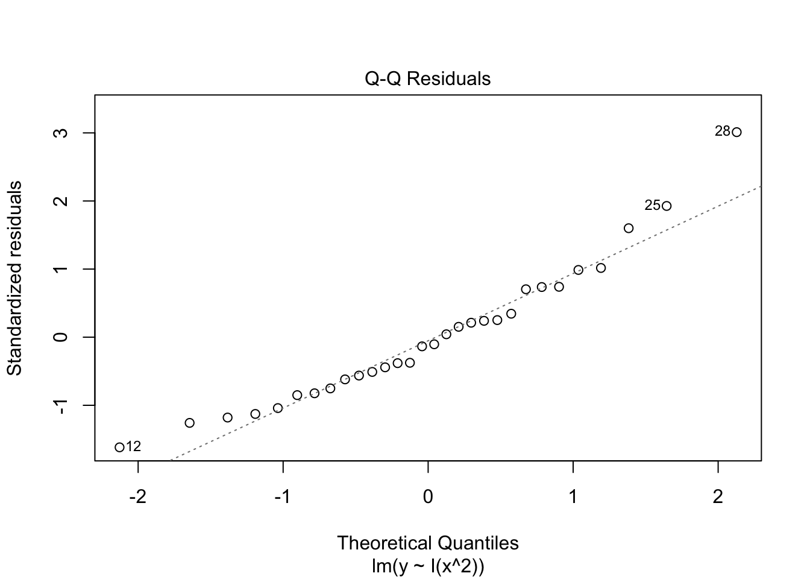
Attempt transformations chosen based on the observed pattern: \(Y' = \frac{1}{Y}\). Then view transformed scatterplot.
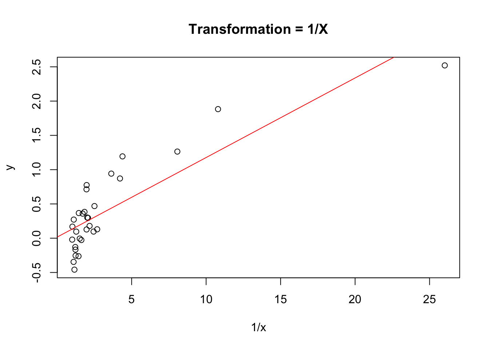
Now the non-constant variance appears to be fixed, but there is a curvi-linear relationship now. So we can try to transform \(X\) at the same time according to the prototype pattern.
# view scatterplot, regression line and diagnostic plots for potential transformationsplot(x =1/x, y =1/y, main ="Transformation = 1/Y and 1/X")abline(lm(1/y~I(1/x)), col ="red")
This introduces some other issues, so perhaps another method such as weighted least squares would be more appropriate.
3.7.3 Box-Cox transformations
Motivation:
It is often difficult to determine from diagnostic plots which transformation of \(Y\) is most appropriate for correcting skewness of the distributions of error terms, unequal error variances, and nonlinearity of the regression function.
The Box-Cox procedure automatically identifies a transformation from the family of power transformations on \(Y\).
Power transformations have the form:
\[
Y' = Y^\lambda,
\]
where \(\lambda\) is a parameter to be determined from the data.
This family encompasses the following simple transformations:
The normal error regression model with the response variable a member of the family of transformations becomes:
This includes an additional parameter \(\lambda\) that needs to be estimated.
The Box-Cox procedure uses the method of maximum likelihood to estimate \(\lambda\), as well as the other parameters \(\beta_0\), \(\beta_1\) and \(\sigma^2\).
In this way, the Box-Cox procedure identifies \(\hat{\lambda}\), the maximum likelihood estimate of \(\lambda\) to use in the power transformation.
# use same setup as linearly increasing trend with increasing variance## initialize items# -> sample size, population parametersn<-30; beta_0<-2; beta_1<-2# generate X valuesx<-runif(n =n, min =0, max =20)# generate error terms# -> uniform errors that can increase with xepsilon<-runif(n =n, min =0, max =2*x)# calculate observations Yy<-beta_0+beta_1*x+epsilon# scatter plot with poorly fit regression line and smoothed curve addedplot(x =x, y =y, main ="Nonnormal errors with increasing variance \n ~ Increasing to with linear trend")abline(lm(y~x), col ="red")
By observation of the prototype pattern and the results, we tried the model \(1/Y \sim 1/X\) to some success. Let’s see what the Box-Cox procedure recommends.
# run boxcox procedure# -> plot MLE of lambdaMASS::boxcox(lm(y~x))# extract lambdabc<-MASS::boxcox(lm(y~x))
Can use standard regression procedures to obtain a \(\hat{lambda}\) when software doesn’t automatically provide it. This procedure involves a numerical search in a range of potential \(\lambda\) values such as \(\lambda = -2, -1.75, ..., 1.75, 2\). For each \(\lambda\) value:
\(Y_i^\lambda\) observations are first standardized so that the magnitude of the error sum of squares does not depend on the value of \(\lambda\):
where \(K_2 = \big(\prod_{i = 1}^{n}Y_i \big)^{1/n}\) and \(K_1 = \frac{1}{\lambda K_2^{\lambda -1}}\) (note that \(K_2\) is the geometric mean of the \(Y_i\) observations).
Once the standardized observations \(W_i\) have been obtained for a given \(\lambda\) value, they are regressed on the predictor variable \(X\) and the error sum of squares \(SSE\) is obtained.
It can be shown that the maximum likelihood estimate \(\hat{\lambda}\) is that value of \(\lambda\) for which \(SSE\) is a minimum.
If desired, a finer search can be conducted in the neighborhood of the \(\lambda\) value that minimizes \(SSE\). However, the Box-Cox procedure ordinarily is used only to provide a guidefor selecting a transformation, so overly precise results are not needed.
# define set of lambdaslambdas<-seq(from =-1, to =1, by =0.01)# standardize repsonsesbox_cox<-function(y, x, lambda=1){# define constantsK_2=prod(y)^(1/length(y))K_1=1/(lambda*K_2^(lambda-1))# standardize y observationsW=if(lambda==0){K_2*log(y)}else{K_1*y^lambda-1}# regress W on X and get ssesum(resid(lm(W~x))^2)}# calculate sse for each lambda valuesse<-lambdas%>%map_dbl(\(l)box_cox(y, x, lambda =l))# plt results and get minimum lambdaplot(x =lambdas, y =sse, type ="l")abline(h =min(sse), col ="grey")abline(v =lambdas[which.min(sse)], col ="grey")
Both the R functions and the manual search suggest \(\hat{\lambda} = 0.5\)\(\longrightarrow\)\(Y' = \sqrt{Y}\). Lets fit the new model and view the diagnostic plots.
# view scatterplot, regression line and diagnostic plots of transformationplot(x =x, y =sqrt(y), main ="Transformation = sqrt(Y)")abline(lm(sqrt(y)~x), col ="red")
Could now try other remedial measures. But there seems to be issues beyond what a simple transformation can fix. Other methods should be used for this particular example.
In practice:
When the Box-Cox procedure leads to a \(\lambda\) value near 1, no transformation of \(Y\) may be needed.
It is reasonable to choose a nearby \(\lambda\) value (e.g. can use \(\hat{\lambda} = -0.5\) instead of \(\hat{\lambda} = -0.79\)).
This can make it easier to understand without sacrificing much in terms of the effectiveness of the transformation.
When choosing a more intuitive \(\hat{\lambda}\), we can look flatness of the likelihood function near the maximum or at the confidence interval for \(\lambda\).
This works because the \(SSE\) is often fairly stable in the neighborhood of the estimate.
After a transformation has been tentatively selected, residual plots and other analyses described earlier need to be employed to ascertain that the simple linear regression model is appropriate for the transformed data.
3.8 Using the transformed model
3.8.1 Overview
When implementing a transformation, interpretations of the results have now changed.
Regression coefficients:
The estimators \(\beta_0\) and \(\beta_1\) obtained by least squares have the least squares properties with respect to the transformed observations, not the original ones.
i.e. Estimated coefficients need to be interpreted with respect to the transformed scales.
There is no straightforward way to ‘untransform’ the coefficients to values that can be interpreted on the original scales.
We cannot directly compare regression coefficients between models where the response variable transformation is different.
Estimation and prediction:
Even if we transform the response, we still want to express model estimates and predictions back in the original scale.
This is simply a matter of ‘back transforming’ by using the inverse function of the transformation.
This is very helpful for communicating results to the public.
3.8.2 Interpreting confidence limits
In general, let \(Y' = f(Y)\) and let \(f'\) be the back-transformation (inverse) function.
For example, if \(Y' = f(Y) = Y^2)\)\(\longrightarrow\)\(f'(Y') = Y\), so \(f'(Y') = \sqrt{Y^2} = Y\).
Then, back transform the mean and single response confidence interval \((a, b)\) as following: \((f'(a), f'(b))\). For example: \((\sqrt{a}, \sqrt{b})\).
Back transforming the coefficients or the standard error is not as straightforward.
DO NOT DO: \(\hat{Y} = f'(b_0) + f'(b_1)X = \sqrt{b_0} + \sqrt{b_1}X\).
Have to do: \(\hat{Y} = f'(\hat{Y'}) = \sqrt{b_0 + b_1X}\).
If only \(X\) is transformed to \(X'\), then ne need to back transform the \(Y's\) estimation because \(Y\) hasn’t been transformed. For example: \(\hat{Y} = b_0 + b_1 X'\).
Demo
Original data and model (with assumption violations)
# plot data with modelplasma<-ALSM::Plasmamod_plasma<-lm(y~x, data =plasma)plasma%$%plot(x, y)abline(mod_plasma)
# create dataset of both pointwise confidence and prediction limitsx_h<-data.frame(x =seq(from =min(plasma$x), to =max(plasma$x), by =0.1))confs<-predict(mod_plasma, newdata =x_h, interval ="conf")preds<-predict(mod_plasma, newdata =x_h, interval ="pred")plot(x =plasma$x, y =plasma$y, type ="p", main ="Inference on bad model")lines(x =x_h$x, y =confs[,"fit"], type ="l", col ="grey")lines(x =x_h$x, y =confs[,"lwr"], type ="l", col ="green")lines(x =x_h$x, y =confs[,"upr"], type ="l", col ="green")lines(x =x_h$x, y =preds[,"lwr"], type ="l", col ="blue")lines(x =x_h$x, y =preds[,"upr"], type ="l", col ="blue")
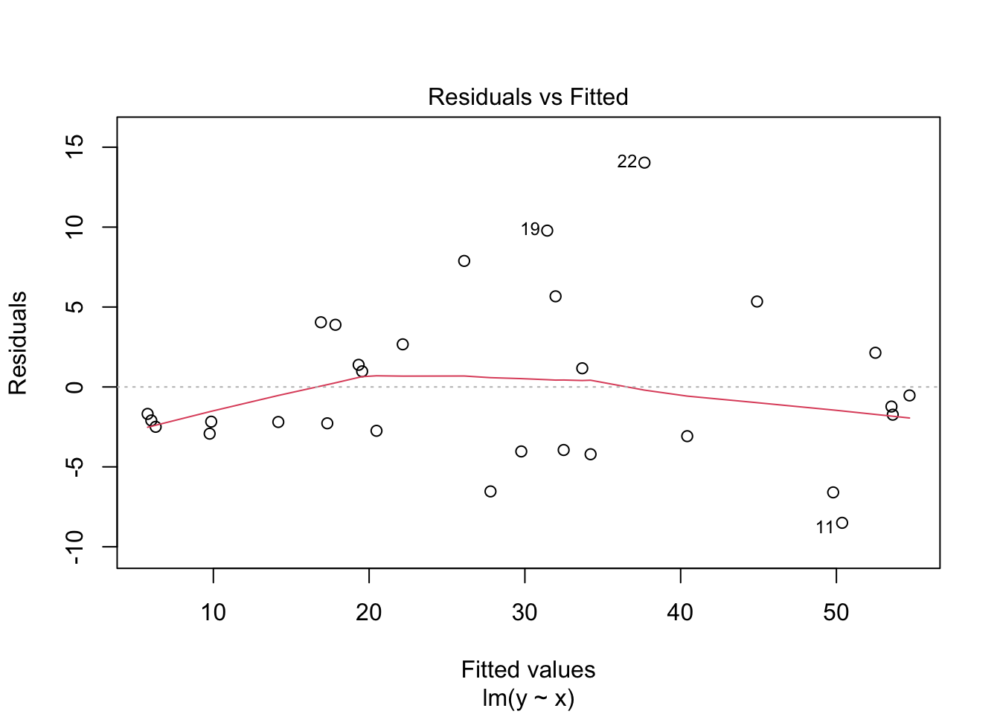
Fix model
# run boxcox and extract lambdaMASS::boxcox(mod_plasma)bc<-MASS::boxcox(mod_plasma)
# fit transformed model -> Y' = 1 / sqrt(Y)mod_plasma_prime<-lm(1/sqrt(y)~x, data =plasma)# plot model and diagnostic plotsplasma%$%plot(x, 1/sqrt(y), main ="Transformed model")abline(mod_plasma_prime)
Now the working model is $ = $ 0.27 \(+\) 0.04 \(X\) (remember coefficients are in terms of new \(Y'\) scale).
Bands before back transformation
# create dataset of both pointwise confidence and prediction limits of transformed modelx_h<-data.frame(x =seq(from =min(plasma$x), to =max(plasma$x), by =0.1))confs<-predict(mod_plasma_prime, newdata =x_h, interval ="conf")preds<-predict(mod_plasma_prime, newdata =x_h, interval ="pred")plot(x =plasma$x, y =1/sqrt(plasma$y), type ="p", main ="Inference on transformed model (before back transformation)")lines(x =x_h$x, y =confs[,"fit"], type ="l", col ="grey")lines(x =x_h$x, y =confs[,"lwr"], type ="l", col ="green")lines(x =x_h$x, y =confs[,"upr"], type ="l", col ="green")lines(x =x_h$x, y =preds[,"lwr"], type ="l", col ="blue")lines(x =x_h$x, y =preds[,"upr"], type ="l", col ="blue")
Now we can back transform \(Y' = \frac{1}{\sqrt{Y}}\)\(\Longrightarrow\)\(f'(Y') = (Y^{-1/2})^{-2} = (Y')^{-2} = Y\).
Bands after back transformation
The predicted values should be \(\hat{Y} = (\hat{Y'})^{-2}\)
The confidence interval for the prediction, with for the mean or single response, should also be back transformed with \((value)^{-2}\).
# create dataset of both pointwise confidence and prediction limits of back transformed modelx_h<-data.frame(x =seq(from =min(plasma$x), to =max(plasma$x), by =0.1))confs<-predict(mod_plasma_prime, newdata =x_h, interval ="conf")preds<-predict(mod_plasma_prime, newdata =x_h, interval ="pred")plot(x =plasma$x, y =plasma$y, type ="p", main ="Inference on transformed model AFTER back transformation")lines(x =x_h$x, y =(confs[,"fit"])^-2, type ="l", col ="grey")lines(x =x_h$x, y =(confs[,"lwr"])^-2, type ="l", col ="green")lines(x =x_h$x, y =(confs[,"upr"])^-2, type ="l", col ="green")lines(x =x_h$x, y =(preds[,"lwr"])^-2, type ="l", col ="blue")lines(x =x_h$x, y =(preds[,"upr"])^-2, type ="l", col ="blue")
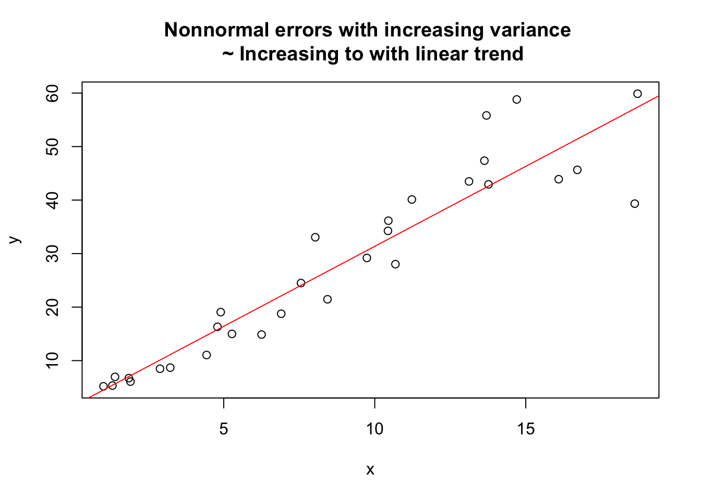
3.9 Summary of remedial measures
For nonlinear functional relationships with well behaved residuals:
Try transforming \(X\)
May require a polynomial or piecewise fit
For non-constant or non-normal error variance, possible with a nonlinear functional form
Try transforming \(Y\)
The Box-Cox procedure may be helpful
If the transformation on \(Y\) doesn’t fix the non-constant variance problem, weighted least squares can be used
Transformations of \(X\) and \(Y\) can be used together.
Any time you consider a transformation
– Remember to recheck all the diagnostics.
– Consider whether you gain enough to justify losing interpretability.
– Reciprocal transformations make interpretation especially hard.
– Consider back-transforming the results of the final model for presentation.
For very non-normal errors, especially those arising from discrete responses, generalized linear models are often a better option, but linear regression may be “good enough”.
3.10 Exploration of shape regression function
Motivation
Scatter plots often indicate readily the nature of the regression function. But at other times however, the scatter plot is complex and it becomes difficult to see the nature of the regression relationship, if any, from the plot. In these cases, it is helpful to explore the nature of the regression relationship by fitting a smoothed curve without any constraints on the regression function.
These smoothed curves are also called nonparametric regression curves. They are useful not only for exploring regression relationships but also for confirming the nature of the regression function.
There are lots of methods for time series, such as moving averages (or the same thing but with medians to reduce the influence of outlying observations). But these methods are for when the \(X\) values (time points) are equally spaced out.
There are also many smoothing methods for regression data, with a main one being lowess method.
3.10.1 Lowess method
Overview
The lowess method (locally weighted regression scatter plot smoothing) obtains a smoothed curve by fitting successive linear regression functions in local neighborhoods and taking the fitted value at that particular \(X\) as the smoothed value.
Procedure
The lowess method uses a number of refinements in obtaining the final smoothed values to improve the smoothing and to make the procedure robust to outlying observations.
The linear regression is weighted to give cases further from the middle \(X\) level in each neighborhood smaller weights.
To make the procedure robust to outlying observations, the linear regression fitting is repeated, with the weights revised so that cases that had large residuals in the first fitting receive smaller weights in the second fitting.
To improve the robustness of the procedure further, step 2 is repeated one or more times by revising the weights according to the size of the residuals in the latest fitting.
To implement the lowess procedure, one must choose (→ in practice):
The size of the successive neighborhoods to be used when fitting each linear regression → This is the primary choice.
The weight function that gives less weight to neighborhood cases with \(X\) values far from each center \(X\) level → Default weight functios suggested by the creator are adequate for many circumstances.
Another weight function that gives less weight to cases with large residuals → Default.
The number of iterations to make the procedure robust must be chosen → Two iterations appears to be sufficient.
Choosing the neighborhood size
The larger the size, the smoother the function but the greater the danger that the smoothing will lose essential features of the regression relationship.
It may require some experimentation with different neighborhood sizes in order to find the size that best brings out the regression relationship.
Demo
# get datasetplasma<-ALSM::Plasma# plot dataset with lowess smoother# arguments (with defaults)# -> f = the smoother span (proportion of points in the plot which influence the smooth at each value) ~ neighborood sizeplot(plasma$x, plasma$y)lines(lowess(x =plasma$x, y =plasma$y, f =2/3, iter =3))lines(lowess(x =plasma$x, y =plasma$y, f =1/4, iter =3), col ="blue")
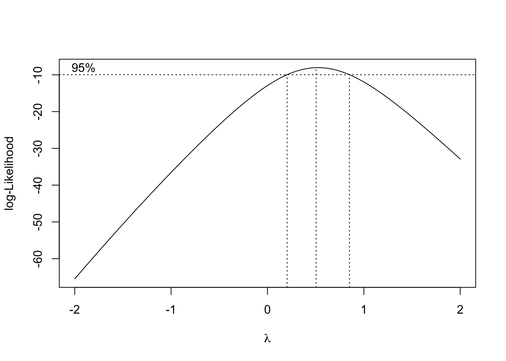
Notes
Smoothed curves, such as the lowess curve, do not provide an analytical expression for the functional form of the regression relationship. They only suggest the shape of the regression curve.
The lowess procedure is not restricted to fitting linear regression functions in each neighborhood. Higher-degree polynomials can also be utilized with this method.
Showed previously that lowess is used in residual plots to show their pattern
3.10.2 Use of smoothed curves to confirm the fitted regression function
Overview
Smoothed curves are useful not only in the exploratory a regression model is selected but they are also helpful in confirming the regression function chosen.
The procedure for confirmation is simple: The curve is plotted together with the confidence band for the fitted regression function. If the smoothed curve falls within the confidence band, we have supporting evidence of the appropriateness of the fitted regression function.
Demo
# fit untransformed modelmod_plasma<-lm(y~x, data =plasma)# calculate confidence band using R functions# -> using textbook function (to confirm)x_h<-data.frame(x =seq(from =min(plasma$x), to =max(plasma$x), by =0.1))conf_band1<-ALSM::ci.reg(mod_plasma, newdata =x_h, type ="w")# -> using predict() for in practicealpha<-0.05W<-sqrt(2*qf(1-alpha, df1 =length(coef(mod_plasma)), df2 =df.residual(mod_plasma)))conf_band2<-predict(mod_plasma, newdata =x_h)%>%data.frame(fit =.)%>%mutate(x =x_h$x, se =predict(mod_plasma, newdata =x_h, interval ="pred", se.fit =TRUE)$se.fit, lwr =fit-W*se, upr =fit+W*se)# plot smooth curve and actual confidence bandsplot(x =plasma$x, y =plasma$y, main ="Untransformed model")lines(lowess(x =plasma$x, y =plasma$y, f =2/3, iter =3))conf_band2%$%lines(x =x, y =lwr, col ="green")conf_band2%$%lines(x =x, y =upr, col ="green")conf_band1%$%lines(x =x, y =Lower.Band, col ="blue", lty =2)conf_band1%$%lines(x =x, y =Upper.Band, col ="blue", lty =2)
# fit transformed modelmod_plasma_prime<-lm(1/sqrt(y)~x, data =plasma)# calculate confidence bandsconf_bands<-ALSM::ci.reg(mod_plasma_prime, newdata =x_h, type ="w")# plot smooth curve and actual confidence bands after back transformingplot(x =plasma$x, y =plasma$y, main ="Transformed model")lines(lowess(x =plasma$x, y =plasma$y, f =2/3, iter =3))conf_bands%$%lines(x =x, y =Lower.Band^(-2), col ="blue")conf_bands%$%lines(x =x, y =Upper.Band^(-2), col ="blue")
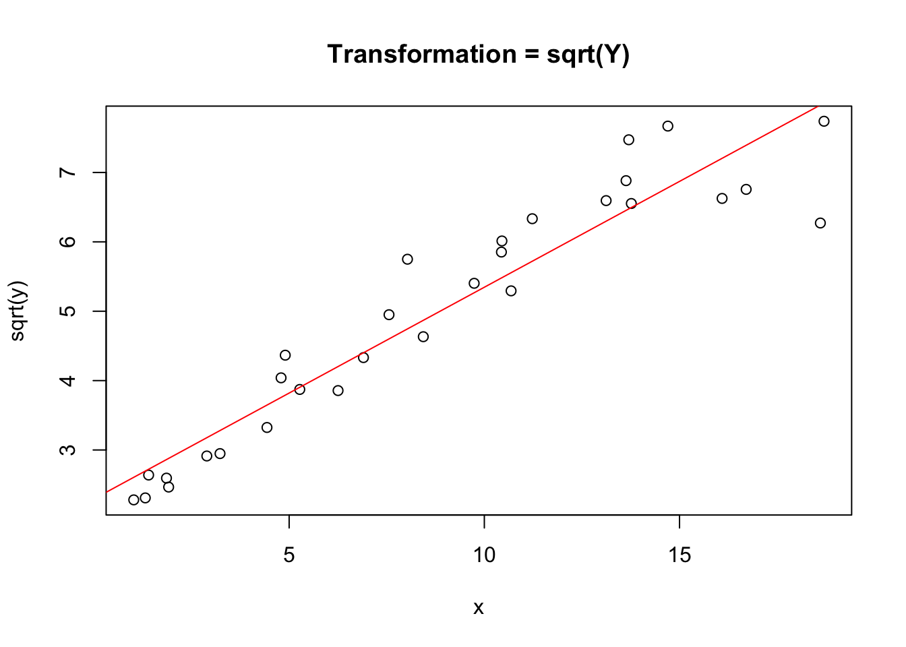
Source Code
# Diagnostics and remedial measures {#sec-diag-remedial-measures}```{r}#| label: load-prereqs#| echo: false#| message: false# knitr optionssource("_common.R")```<!-- % define LaTeX macros (/shortcuts) --><!-- % define vector (without parentheses, so when writing out in like a definition) of the form X_1, ..., X_n, where X and n are variable. NOTE: to call use $\vecn{X}{n}$ -->\newcommand{\vecn}[2]{#1_1, \ldots, #1_{#2}}<!-- % shortcut for ~ 'Named dist ' in normal font with space before parameters would go -->\newcommand{\follow}[1]{\sim \text{#1}\,}<!-- % (followsp is short for 'follow special') shortcut that can be used for iid or ind ~ 'Named dist ' in normal font with space before parameters would go -->\newcommand{\followsp}[2]{\overset{#1}\sim \text{#2}\,}<!-- % define independence symbol (it basically makes two orthogonal symbols very close to each other. The number of \! controls the space between each of the orthogonal symbols) -->\newcommand{\ind}{\perp \!\!\! \perp}<!-- % shortcut for Cov(X,Y) with formatting for Cov -->\newcommand{\cov}[1]{\mathrm{Cov}(#1)}<!-- % shortcut for Corr(X,Y) with formatting for Corr -->\newcommand{\corr}[1]{\mathrm{Corr}(#1)}<!-- % shortcut for non-italic e in math mode -->\newcommand{\e}{\mathrm{e}}<!-- % shortcut for null hypothesis formatted nicely -->\newcommand{\ho}{H_0}<!-- % shortcut for alternative hypothesis formatted nicely -->\newcommand{\ha}{H_A}Two main ideas- Diagnostics → Methods to check whether our model is reasonable for our data and representative of the system that we are studying. - Some diagnostics check the *assumptions* of our model. Other diagnostics check the *influence* of different data points.- Remedies → Analytic strategies used to fix problems identified by the diagnostics.Why do we need to check the model?- The goal of building a model is to: - *Learn something* about the real world. - *Predict outcomes* in the real world.- To use a model successfully, we need to know its limitations: - Does it adequately describe the functional relationship of interest? - Is there reason to worry that inferences about the parameters might be flawed? - Is the error distribution appropriate?- All of these are checked via residual analysis.## Diagnostics for predictor variableOverview- We need diagnostic information about the predictor variable in order to: - See if there are any outlying $X$ values that could influence the appropriateness of the fitted regression function or if the $X$ distribution is skewed, which can impact some aspects of the model behavior / performance. - Get info about the range and concentration of the $X$ levels in the study. This is useful for figuring out the range of validity of the regression analysis. - Can use simple graphical tools to help.Plots- Dot plot → Good when the sample size is not large. - Can look at min and max; are observations spread throughout this interval? any far outlying observations? replication at different $X$ levels?.- Sequence plot → Should be utilized whenever data are obtained in a sequence, such as over time or for adjacent geographic areas. - Should look like a random walk (i.e. no obvious pattern). - For example, if one level of $X$ occurs way more frequently in the beginning and then another occurs way more at end, this info can be very helpful when looking at diagnostics later for how appropriate the model is.- Box plots → Good when have a larger sample size. - Can look at min and max, location of IQR, outliers, shape (skewness).- Histograms → Good with really big sample sizes. - Can look for same characteristics as boxplots, as well as modality.Demo```{r}# generate several samples of X valuesx_1 <- extraDistr::rdunif(n =15, min =5, max =15)x_2 <- extraDistr::rdunif(n =50, min =5, max =15)x_3 <-runif(n =1000, min =5, max =15)# create simple plots for diagnostics of X variable# NOTE -> just doing simple base R plots # dot plot for small samplesstripchart(x_1, method ="stack")# sequence plot for "sequential" data# -> data is random, so will be a random walkplot(x_1, type ="b")# boxplot for larger samples# -> add mark for meanboxplot(x_2, horizontal =TRUE)points(x =mean(x_2), y =1, pch =4)# histogram for really large samplehist(x_3)```## ResidualsOverview- Goal of residual analysis → Assess the aptness of a statistical model.- Why use residuals - Direct diagnostic plots for the response variable $Y$ are ordinarily not too useful in regression analysis because the response variable observations are a function of the level of predictor variable. - So, instead we look at diagnostics for $Y$ indirectly by examining the residuals.- Residuals and model error - Recall residual $e_i = Y_i - \hat{Y_i}$ is an estimate of the unobservable model error $\epsilon = Y_i - E(Y_i)$. - ** For our regression model, we assume $\epsilon_i \followsp{iid}{Normal}\,(0, \sigma^2$). So if the model is appropriate for the data at hand, the residuals should reflect these properties. - This is the basic idea of a residual analysis, which is a highly useful way to check if a model is appropriate.### Properites of residuals- Mean - The mean of the $n$ residuals for the SLR is shown below. - Since this is always 0, it doesn't give any info as to whether the true errors $\epsilon_i$ have expected value $E(\epsilon_i) = 0$.$$\bar{e} = \sum e_i = 0$$- Variance - The variance of the $n$ residuals for the SLR is shown below. - Again, if the model is appropriate $MSE$ is an unbiased estimator of the variance of the error terms $\sigma^2$$$S^2 = \frac{\sum (e_i - \bar{e})^2}{n - 2} = \frac{\sum e_i^2}{n - 2} = \frac{SSE}{n - 2} = MSE$$- Nonindependence - The residuals $e_i$ are not independent random variables because they involve the fitted values $\hat{Y_i}$, which are computed on the same $\hat{\beta}_0$ and $\hat{\beta}_1$. - As a result, the residuals are subject to two constraints: $\sum e_i = 0$ and $\sum X_i e_i = 0$. - However, when the sample size $n$ is much larger than the number of parameters $p$, we can ignore the minor dependence.### Semistudentized residuals- At times, it is helpful to standardize the residuals for residual analysis. Since the standard deviation of the error terms $\epsilon_i$ is $\sigma$, which is estimated by $\sqrt{MSE}$, we can naturally standardize with$$e_i^* = \frac{e_i - \bar{e}}{\sqrt{MSE}} = \frac{e_i}{\sqrt{MSE}} $$- Studentized → If $\sqrt{MSE}$ were an estimate of the standard deviation of the residual $e_i$, we would call $e_i^*$ a studentized residual. But it is not...- Semistudentized → $\sigma_{e_i}$ is complex and varies for the different residuals $e_i$, and $\sqrt{MSE}$ is only an approximation of the standard deviation of $\sigma_{e_i}$. So, instead it is a semistudentized residual.### Departures from model to be studied by residuals- We are going to use residuals to study the following departures from the SLR model with normal errors: 1. The regression function is not linear → Is the functional form of the model appropriate? 2. The error terms do not have constant variance. 3. The error terms are not independent. 4. The model fits all but one or a few outlier observations → Do any of the data points have a disproportionate influence on the parameter estimates? 5. The error terms are not normally distributed. 6. One or several important predictor variables have been omitted from the model.## Diagnostics for residualsTypes of plots- Here are the informal diagnostic plots of residuals we will use to see if any of the above 6 departures from the SLR model are present,1. Residuals against predictor variable.2. Absolute or squared residuals against predictor variable.3. Residuals against fitted values.4. Residuals against time or other sequence.5. Residuals against omitted predictor variables.6. Boxplot of residuals.7. Normal probability plot of residuals.Demo- How to make plots and what they look like when assumptions are met.```{r}# initialize items# -> sample size, population parameters and error distribution parametersn <-30; beta_0 <-1; beta_1 <-2; sigma <-5# generate X valuesx <-runif(n = n, min =5, max =15)# generate normal error termsepsilon <-rnorm(n = n, mean =0, sd = sigma)# calculate observations Yy <- beta_0 + beta_1 * x + epsilon# fit modelmod <-lm(y ~ x)# view diagnostic plots (base R)plot(mod)``````{r}#| eval: false# NOT RUN -> note this works inline# view ggplot versions of diagnostic plotsggplot2::autoplot(mod)```{width="50%"}Next section- Now we will go through how to visually assess each assumption to see if it is met and diagnosis (identify) each violation if present.- At then end, we will discuss the impacts of each departure on things such as $MSE$, slope standard errors, prediction accuracy, etc.### Nonlinearity of regression function::: panel-tabset#### ContentOverview- We can look at the following plots to check if a linear regression function is appropriate:1. *Residual plot against the fitted values* → This is the preferred plot for this assumption check. - When a linear regression model is appropriate, the residuals then fall within a horizontal band centered around 0, displaying no systematic tendencies to be positive and negative (randomly scattered around 0). - When the linearity assumption is violated, there are systematic deviations.{width="50%"}2. *Residual plot against the predictor variable* - For *SLR only*, this shows the same info as the residuals vs fitted values because the $\hat{Y_i}$ are a linear function of the $X_i$. - So the basic pattern of the plotted points is not affected whether the residual plot is against the $X_i$ or the $\hat{Y_i}$ (only the $X$ scale values are affected). - For curvilinear regression and multiple regression, separate plots of the residuals against the fitted values and against the predictor variable(s) are usually helpful.3. *Scatterplot of* $Y$ vs $X$ → If the actual trend in the data in linear, then it makes sense to fit a straight-line model to the data.- But, not always as effective as the residual plots. Residual plots are preferred over scatteplot, because it has two advantages:{width="50%"}1. Can also easily be used for checking other assumptions.2. There are occasions when the scaling of the scatter plot places the $Y_i$ observations close to the fitted values $\hat{Y_i}$, for instance, when there is a steep slope. It then becomes more difficult to study the appropriateness of a linear regression function from the scatterplot, while the residual plot can clearly show any systematic pattern in the deviations around the fitted regression line under these conditions.#### IdealModel statement → $Y_i = \beta_0 + \beta_1 X_i + \text{Normal}(0, \sigma^2)$```{r}# initialize items# -> sample size, population parameters and error distribution parametersn <-30; beta_0 <-1; beta_1 <-2; sigma <-5# generate X valuesx <-runif(n = n, min =5, max =15)# generate normal error termsepsilon <-rnorm(n = n, mean =0, sd = sigma)# calculate observations Yy <- beta_0 + beta_1 * x + epsilon# fit modelmod_ideal <-lm(y ~ x)```- Residuals vs fitted plot - R also adds a trend line, which we want to be approximately horizontal.```{r}# residual vs fitted plotplot(mod_ideal, which =1)# verify smoothing line that plot.lm() performs (see discussion in nonconstant variance ideal section)plot(mod_ideal, which =1)lines(x =lowess(fitted(mod_ideal), y =resid(mod_ideal)), col ="blue")```- Residuals vs $X$ plot - For SLR → Shows same pattern as above, different scale on $X$ axis.```{r}# create residuals vs X plot# -> add smoothing lineplot(x = x, y =residuals(mod_ideal), ylab ="residuals", main ="Residuals vs X")abline(h =0, col ="grey", lty ="dashed")lines(lowess(x = x, y =resid(mod_ideal)), col ="red")```- Demo for difference when in MLR - Results → Can see different pattern (even if only slightly based on values chosen) pattern in each.```{r}# initialize new itemsbeta_2 <-3# generate new X samplex_2 <-runif(n = n, min =0, max =5)# calculate new Y observations using same errors, but with both xsy_2 <- beta_0 + beta_1 * x + beta_2 * x_2 + epsilon# fit new MLR modelmod_mlr <-lm(y_2 ~ x + x_2)``````{r}#| class.source = "fold-hide"# plot residuals vs fitted, X and X2# -> create dataset so can display all three plots# -> also add smoothing line to make differences in patterns more noticeabledata.frame(X1 = x,X2 = x_2,fitted =fitted(mod_mlr),residuals =residuals(mod_mlr)) %>%pivot_longer(1:3,names_to ="X_axis",values_to ="value") %>%ggplot(aes(x = value,y = residuals),data = .) +geom_point() +geom_smooth(se =FALSE,method ="loess",formula = y ~ x) +facet_grid(. ~ X_axis,scales ="free") +geom_hline(yintercept =0,col ="grey",linetype ="dashed")```- Scatterplot```{r}# scatterplot of y vs x with regression line addedplot(x = x, y = y, main ="Scatterplot of Y vs X")abline(mod_ideal, col ="red")```:::Departures::: panel-tabset#### PolynomialModel statement → $Y_i = \beta_0 + \beta_1 X_i + \beta_2 X_i^2 + \text{Normal}(0, \sigma^2)$- Note that this is still a linear model (even though there is a higher order term), becuase the model in linear *in the parameters*.```{r}# initialize items# -> sample size, population parameters and error distribution parametersn <-30; sigma <-5; beta_0 <-1; beta_1 <-2;beta_2 <-3# generate X valuesx <-runif(n = n, min =5, max =15)# generate normal error termsepsilon <-rnorm(n = n, mean =0, sd = sigma)# calculate observations Yy <- beta_0 + beta_1 * x + beta_2 * x^2+ epsilon# fit model (only on SLR x with linear term)mod_squared_x <-lm(y ~ x)```- Residuals vs fitted plot```{r}# residual vs fitted plotplot(mod_squared_x, which =1)```- Scatterplot```{r}# scatterplot of y vs x with regression line addedplot(x = x, y = y, main ="Squared predictor")abline(mod_squared_x, col ="red")```- Demo to show how steep slope can hide lack of fit in scatterplot, but residual plot still picks it up. - Results → For a true quadratic model, the scatterplot of $Y$ vs $X$ looks just linear (not noticeable curvature) when there is a large $\beta_1$ term (coefficient of linear term). But this is misleading, especially after seeing the residual plot which shows the missing evidence of curvature.```{r}# initialize items# -> sample size, population parameters and error distribution parametersn <-50; beta_0 <-1; sigma <-5# SMALL slope of linear termbeta_1 <-3beta_2 <-2# generate X valuesx <-runif(n = n, min =5, max =15)# generate normal error termsepsilon <-rnorm(n = n, mean =0, sd = sigma)# calculate observations Yy <- beta_0 + beta_1 * x + beta_2 * x^2+ epsilon# fit model (only on SLR x with linear term)mod_squared <-lm(y ~ x)# scatterplot of y vs x with regression line added# -> can see curvatureplot(x = x, y = y, main ="Samll slope")abline(mod_squared, col ="red")# residuals vs fitted plot# -> curvature very obvious hereplot(mod_squared, which =1)``````{r}# initialize items# -> sample size, population parameters and error distribution parametersn <-50; beta_0 <-1; sigma <-5# LARGE slope of linear termbeta_1 <-10beta_2 <-1# generate X valuesx <-runif(n = n, min =5, max =15)# generate normal error termsepsilon <-rnorm(n = n, mean =0, sd = sigma)# calculate observations Yy <- beta_0 + beta_1 * x + beta_2 * x^2+ epsilon# fit model (only on SLR x with linear term)mod_squared <-lm(y ~ x)# scatterplot of y vs x with regression line added# -> curvature is hidden more, regression line looks okayplot(x = x, y = y, main ="Large slope")abline(mod_squared, col ="red")# residuals vs fitted plot# -> curvature still visible hereplot(mod_squared, which =1)```#### Nonlinear regression modelModel statement → $Y_i = \beta_0 \, \mathrm{e}^{\beta_1 \, X_i} + \text{Normal}(0, \sigma^2)$- Nonlinear because $Y_i$ cannot be expressed as a linear combination of the $\beta_i$s.```{r}# initialize items# -> sample size, population parameters and error distribution parametersn <-30; beta_0 <-0.1; beta_1 <-0.5; sigma <-5# generate X valuesx <-runif(n = n, min =5, max =15)# generate error termsepsilon <-rnorm(n = n, mean =0, sd = sigma)# calculate observations Yy <- beta_0 *exp(beta_1 * x) + epsilon# fit modelmod_nonlinear <-lm(y ~ x)```- Scattterplot of $Y$ vs $X$ and residual plot - Can see obvious nonlinear pattern in scatterplot and systematic deviations in residual plot.```{r}# scatterplot of y vs x with regression line# -> obviously not a linear patternplot(x = x, y = y, main ="Scatterplot of Y vs X")abline(mod_nonlinear, col ="red")# residual vs fitted plot# -> definite pattern to residualsplot(mod_nonlinear, 1)```:::### Nonconstant variance::: panel-tabset#### ContentOverview- We can look at the following plots to check if the error terms have constant variance:1. *Residual plot against the fitted values* - Again for SLR, this shows the same info as residuals vs $X$ plot, but in MLR we want to use the fitted values. - When there is a constant error variance, points again should fall within a horizontal band. So there is a constant spread of the residuals as move across the scope of fitted (or $X$) values. - "Tipped over tornado" effect of the points indicates a non-constant variance (i.e. as the fitted values increase, the residuals vary more, or vice versa). Reverse megaphone (decreasing variance with increasing levels of $X$ or $\hat{Y}$) is possible as well or varying in some other complex fashion. A nonconstant variance in called *heteroscedasticity* (the assumption is a *homoscedastic* error variance).{width="50%"}2. *Scale-location plot* → Refined version of above, preferred plot for this assumption. - Plots standardized residuals against fitted values. - There are a few ways to transform the residuals for this type of plot, all of which get at the same purpose (options include: absolute value, square root of absolute value, squared, standardized (studentized, semistudentized), square root of standardized). - By doing this, it places all of the information on changing magnitudes of the residuals above the horizontal zero line, which makes it easier to see whether the magnitude of the residuals is changing with the level $\hat{Y}$ ($\pm$ is not important for this condition). - The scale-location plot specifically uses the standardized residuals (which have equal variance by assumption), and are given by $e_i^* = \frac{e_i}{\sqrt{MSE (1 - h_{ii})}}$, where the leverages $h_{ii}$ are the diagonal entries of the hat matrix. It then takes the absolute value and square root $\sqrt{\lvert e_i^* \rvert}$ to diminish the skewness because under $\text{Normal}(0, \sigma^2)$, $\sqrt{\lvert e_i^* \rvert}$ is much less skewed than $\lvert e_i^* \rvert$.{width="50%"}{width="50%"}<!-- not totally sure why we need residuals to not be skewed for scale-location plot though -->#### IdealModel statement → $Y_i = \beta_0 + \beta_1 X_i + \text{Normal}(0, \sigma^2)$- Residuals vs fitted plot - Looking residuals to fall within horizontal bands on either side of 0.```{r}# using ideal model from linearity assumption demo# again, same plot as to check linearityplot(mod_ideal, which =1)```- Scale-location plot - Now we want a flat trend line.```{r}# scale-location plotplot(mod_ideal, which =3)```- Demo of different ways to standardize residuals (including the scale-location plot)```{r}# scale-location plotplot(mod_ideal, which =3)# demo of the standardized residuals used above# -> check help page for plot.lm() for more details on methods behind diagnostic plots# standardize the residuals# -> manual calculation using the formula for e* or r functionsmse <-summary(mod_ideal)$sigma^2e_star <-resid(mod_ideal) %>%divide_by(sqrt(mse * (1-hatvalues(mod_ideal)))) e_star <-rstandard(mod_ideal)# view final transformation of residualsdata.frame(e =resid(mod), e_star, f_e_star =sqrt(abs(e_star))) %>%head(n =5) %>%display_nice(col.names =c("Residuals $e_i$", "Standardized residuals $e_i^*$", "$f(e_i^*) = \\sqrt{\\lvert e_i^* \\rvert}$"))# overlay function of standardized residuals to scale-location plot to confirm they line up points(x =fitted(mod_ideal), y =sqrt(abs(e_star)), col ="blue", pch =3)``````{r}#| class.source = "fold-hide"# demo different residual plots AND different smoothers# create dataset of different standardized residuals so can display all# 0) residuals# 1) f(e*) from above (sqrt of abs of standardized residuals from scale-location)# 2) semistudentized residuals = e / sqrt(MSE)# 3) abs(residuals)# 4) sqrt(abs(residuals))# 5) residuals^2e <-resid(mod_ideal)data_plot <-data.frame("fitted"=fitted(mod_ideal), e,f_e_star =sqrt(abs(e_star)),e_semi = e /sqrt(mse),e_abs =abs(e),e_abs_sqrt =sqrt(abs(e)),e_squared = e^2) %>%pivot_longer(c(starts_with("e"), "f_e_star"),names_to ="type",values_to ="residuals")# create dataset for lowess smoothers of each residual typedata_lowess <- data_plot %>%split(.$type) %>%map2(names(.), \(df, type) data.frame(lowess(x = df$fitted, y = df$residuals), type = type)) %>%reduce(bind_rows)# set more informative labels for the facetslabels_residuals <-c(e ="residuals",f_e_star ="f(standardized residuals",e_semi ="residuals / sqrt(MSE)",e_abs ="abs(residuals)",e_abs_sqrt ="sqrt(abs(residuals))",e_squared ="residuals^2")# then plot with different smoothing lines# smoothing line# -> geom_smooth() default method is loess smoother, which is a local polynomial regression fit# -> plot() uses lowess smoother, which uses locally-weighted polynomial regression # -> summary -> similar methods, slight difference# --> lowess is for adding a smooth curve to a scatterplot, i.e., for univariate smoothing, while loess is for fitting a smooth surface to multivariate datadata_plot %>%ggplot(aes(x = fitted,y = residuals),data = .) +geom_point() +geom_smooth(se =FALSE,method ="loess",formula = y ~ x) +geom_line(aes(x = x,y = y),data = data_lowess,col ="red") +facet_wrap(. ~ type,scales ="free",labeller =as_labeller(labels_residuals)) +geom_hline(yintercept =0,col ="grey",linetype ="dashed")```:::Departures::: panel-tabset#### Increasing varianceModel statement → $Y_i = \beta_0 + \beta_1 X_i + \text{Normal}(0, \sigma^2_i = 5 X_i)$```{r}# initialize items# -> sample size, population parametersn <-50; beta_0 <-2; beta_1 <-5# generate X valuesx <-runif(n = n, min =1, max =15)# specify a vector of variances, which is a function of Xsigma <-5* x# generate response Yy <-rnorm(n = n, mean = beta_0 + beta_1 * x, sd = sigma)# fit modelmod_increasing_error_variance <-lm(y ~ x)```- Scatterplot - Can see more variation around ftted line as $X$ increases.```{r}# view scatterplot with regression lineplot(x = x, y = y)abline(mod_increasing_error_variance, col ="red")```- Residuals vs fitted plot - Looking for a pattern that doesn't follow horizontal bands as move left to right, trend line may still be horizontal though.```{r}# residual plotplot(mod_increasing_error_variance, which =1)```- Scale-location plot - Now trend line will not be horizontal after transforming residuals, should increase with an increasing variance.```{r}# scale-location plotplot(mod_increasing_error_variance, which =3)```#### Complex varianceModel statement → $Y_i = \beta_0 + \beta_1 X_i + \text{Normal}(0, \text{ decreasing then increasing } \sigma^2_i)$```{r}# initialize items# -> sample size, population parametersn <-50; beta_0 <-2; beta_1 <-5# -> specify a vector of variances instead so it sequentially increasessigma <-c(seq(from =20, to =1, length.out = n /2), seq(from =1, to =20, length.out = n /2))# generate X values# -> need pattern of variances to follow as X increases, so sort Xs afterx <-runif(n = n, min =5, max =15) %>% sort# generate response Yy <-rnorm(n = n, mean = beta_0 + beta_1 * x, sd = sigma)# fit modelmod_complex_error_variance <-lm(y ~ x)``````{r}# view scatterplot with regression line# -> now see values are closer to line in middle of plotplot(x = x, y = y)abline(mod_complex_error_variance, col ="red")# residual plot# -> see ribbon-like patternplot(mod_complex_error_variance, which =1)# scale-location plot# -> see U kinda patternplot(mod_complex_error_variance, which =3)```:::### Presence of unusual observations::: panel-tabset#### ContentOverview- Unusual observations can create much difficulty when fitting models. When present, they can lead to a misleading fit because the line was estimated by minimizing the squared deviations. - Thus, a fitted line may be pulled disproportionately toward an unusual observation. Unusual observations far from $\bar{X}$ have a larger impact on the model and estimates than those near $\bar{X}$ (this is the idea of leverage / influence).{width="50%"}- There are two types unusual observations and how we define them, check for them, and their impact is different. 1. **Outliers** → Extreme values of the response (outliers in $Y$). - A rough rule of thumb → When the sample size is large, semistudentized (or standardized) residuals with absolute value more than 3 or 4 can be considered outliers (i.e. outliers if $\lvert \frac{e_i}{\sqrt{MSE}} \text{ or } e_i^* \rvert \ge 3 \text{ or } 4$). - We can look at the following plots to check if residual outliers are present: a. *Residual plot against the fitted values (or* $X$) - Just looking for points far away from the pattern of the rest. In SLR, can also look at the scatterplot of $Y$ vs $X$ for points far from overall pattern. - Plotting of semistudentized residuals is helpful for distinguishing outiers because it's easy to identify residuals that lie many standard deviations from zero.{width="30%"}{width="30%"}b. *Boxplots, histograms, Normal QQ of the residuals (or standardized residuals)* - Can also look for outliers in the usual way based on these plots. Note that different visuals / rules will give more or less evidence for outliers.{width="50%"}2. **High leverage points** → Observations whose predictor values are far from the center of the predictor space (extreme values (outliers) of $X$ or unusual combination of $X$s). c. Plots → *Residuals vs Leverage plot* (or Cook's distance plot, Cook's dist vs Leverage (1 - Leverage) plot) → These use measures not covered yet.(3.) **Influential points** → High leverage points that actually *influence* the slope of the regression line (outlier in $X$ AND $Y$).d. Plots → In order to determine if a point is influential, visualize the regression line with and without the point. Does the slope of the line change considerably? If so, then the point is influential. If not, then it's not an influential point.{width="50%"}Removing unusual observations- Because unusual observations can create lots of difficulty, when we find one, we initially think that the observation resulted from a mistake or some extraneous effect. So it should be removed.- On the other hand, unusual observations may convey significant information (such as if it occurs because of an interaction with another predictor variable omitted from the model).- A safe rule → Discard an unusual observation only if there is direct evidence that it represents an error in recording, a miscalculation, a malfunctioning of equipment, or a similar type of circumstance.#### IdealModel statement → $Y_i = \beta_0 + \beta_1 X_i + \text{Normal}(0, \sigma^2)$- Residuals vs fitted plot - Looking for observations with residuals far below or above 0.```{r}# using ideal model from linearity assumption demo# -> randomness may result in an outlier or two# again, same plot as to check linearity and nonconstant varianceplot(mod_ideal, which =1)# by default, on all the diagnostic plots R labels the 3 observations with the most extreme residuals # -> this says nothing about being potential outliers, just the top three# -> can change how many get labeled and what the label is (by default it is the observation number)plot(mod_ideal, which =1, id.n =10, labels.id =paste("x = ", round(x, 3), "\n y = ", round(y, 3)))# could also add lines for 3 * sqrt(MSE) to get the same comparison as below, just in units of the original residuals# -> NOTE: bounds are off plot cause not any outliersplot(mod_ideal, which =1)mse <-summary(mod_ideal)$sigma^2abline(h =c(-3*sqrt(mse), 3*sqrt(mse)), col ="orange")```- Standardized residuals vs fitted plot - Looking for observations beyond with residuals 3 or 4 away from zero after standardizing. - Both ways of standardizing get essentially the same outcomes $\Longrightarrow$ An outlier in one will be an outlier in the other, so can just use the default R```{r}# show how to check the standardized residual plots and compare different versions# create dataset of two different standardized residuals for variation of residual plot# 1) semistudentized residuals# 2) e* from above (standardized residuals from scale-location)data_plot <-data.frame("fitted"=fitted(mod_ideal),e_semi =resid(mod_ideal) /sqrt(mse),e_star =rstandard(mod_ideal)) %>%pivot_longer(starts_with("e"),names_to ="type",values_to ="residuals")# create residual plot with smoothing line for both types of residuals# -> add bands at +/- 3 "standardized units" from zerodata_plot %>%ggplot(aes(x = fitted,y = residuals,color = type),data = .,alpha =0.01) +geom_point() +geom_smooth(se =FALSE,method ="loess",formula = y ~ x) +geom_hline(yintercept =c(0,-3,3),col =c("grey", "orange", "orange"),linetype =c("dashed", "solid", "solid")) +scale_color_manual(name ="Type of residual",values =c(e_semi ="#F8766D", e_star ="#00BFC4"), # use hexcode of default colors when two valueslabels =c(e_semi ="semistudentized", e_star ="standardized"))```- Boxplot, histogram and Normal QQ plot of residuals - Should not see any observations far away from the general patterns.```{r}# boxplot of residualsboxplot(resid(mod_ideal), horizontal =TRUE, main ="Boxplot of residuals")# histogram of residualshist(resid(mod_ideal), main ="Histogram of residuals")# normal qq plotplot(mod_ideal, which =2)```- Residuals vs Leverage plot, Cook's distance plot and Cook's dist vs Leverage / (1 - Leverage) plot```{r}# diagnostic plots of: residuals vs lev, cooks dist, and cooks dist vs lev# NOT RUN -> note works inlineautoplot(mod_ideal, which =c(5,4,6))# residuals vs lev plot uses standardized residuals (and not transforming them with sqrt(abs(.)) like the scale-location plot)# -> so could add the +/- 3 lines to this plot (and for now ignore the leverage lines)# note -> lines are off plot cause no outliersplot(mod_ideal, which =5)abline(h =c(-3, 3), col ="orange")```:::Departures::: panel-tabset#### OutlierModel statement → $Y_i = \beta_0 + \beta_1 X_i + \text{Normal}(0, \sigma^2), \hspace{20pt} \text{except} \hspace{10pt} Y_{n+1} = \beta_0^* + \beta_1^* X_i + \text{Normal}(0, \sigma^2)$```{r}# initialize items# -> sample size, population parameters and error distribution parametersn <-30; beta_0 <-1; beta_1 <-4; sigma <-5# generate X values and y values in a dataframe# (SIDENOTE -> needs to be a separate mutate() statement so y uses the x's just generated and not ones from a previous vector)data_without <-data.frame(x =runif(n = n, min =5, max =15)) %>%mutate(y =rnorm(n = n, mean = beta_0 + beta_1 * x, sd = sigma))``````{r}# introduce outlier# -> new point follows different population regression model, but with typical X value# --> X ranges from 5 to 15 from abovedata_new <-data.frame(x =10) %>%mutate(y =rnorm(n =1, mean = (beta_0 +4) + (beta_1 +4) * x, sd = sigma))data_outlier <-bind_rows(data_without, data_new)```- Diagnostic plots with outlier (typical $X$ but extreme $Y$ $\Longrightarrow$ Outlier in $Y$) - Can see a point with unusually large residuals (outlier in boxplot, way above / below in residual plot).```{r}# scatterplot of data with outlierdata_outlier %$%plot(x = x, y = y)# fit model with outliermod_outlier <- data_outlier %$%lm(y ~ x)# boxplot of residualsboxplot(resid(mod_outlier), horizontal =TRUE, main ="Boxplot of residuals")# if there is an outlier in the boxplot, can extract it# -> then find the corresponding (x,y) pair(outlier <-boxplot(resid(mod_outlier), horizontal =TRUE)$out)data_outlier[which(mod_outlier$residuals == outlier),] %>% display_nice# residual vs fitted plot with reference lines to confirm outlierplot(mod_outlier, which =1)mse <-summary(mod_outlier)$sigma^2abline(h =c(-3*sqrt(mse), 3*sqrt(mse)), col ="orange")# get standardized residual value of the identified outlierrstandard(mod_outlier)[31]``````{r}# view regression lines with and without outlierdata_outlier %$%plot(x = x, y = y, main ="Outlier")abline(mod_outlier, col ="red")data_outlier[-31,] %$%abline(lm(y ~ x), col ="purple")```#### High-leverage pointModel statement → $Y_i = \beta_0 + \beta_1 X_i + \text{Normal}(0, \sigma^2), \hspace{20pt} \text{except} \hspace{10pt} Y_{n+1} = \beta_0 + \beta_1 X_i^* + \text{Normal}(0, \sigma^2)$```{r}# introduce high-leverage point# -> new point follows same population regression model, just with extreme X valuedata_new <-data.frame(x =20) %>%mutate(y =rnorm(n =1, mean = beta_0 + beta_1 * x, sd = sigma))data_high_leverage <-bind_rows(data_without, data_new)```- Diagnostic plots with high-leverage point (extreme $X$ but follow pattern of $Y$ $\Longrightarrow$ Outlier in $X$) - Residual of high-leverage point will be typical, but far away horizontally from the rest of the points.```{r}# scatterplot of data with high-leverage pointdata_high_leverage %$%plot(x = x, y = y)# fit model with high-leverage pointmod_high_leverage <- data_high_leverage %$%lm(y ~ x)# residual vs leverage plot with reference lines to confirm high-leverage (outlier in X) and also outlier (in Y)plot(mod_high_leverage, which =5)abline(h =c(-3,3), col ="orange")``````{r}# view regression lines with and without outlierdata_high_leverage %$%plot(x = x, y = y, main ="High-leverage point")abline(mod_high_leverage, col ="red")data_high_leverage[-31,] %$%abline(lm(y ~ x), col ="purple")```#### Influential pointModel statement → $Y_i = \beta_0 + \beta_1 X_i + \text{Normal}(0, \sigma^2), \hspace{20pt} \text{except} \hspace{10pt} Y_{n+1} = \beta_0^* + \beta_1^* X_i^* + \text{Normal}(0, \sigma^2)$```{r}# introduce influential point# -> new point follows different population regression model AND extreme X valuedata_new <-data.frame(x =20) %>%mutate(y =rnorm(n =1, mean = (beta_0 +4) + (beta_1 +4) * x, sd = sigma))data_influential <-bind_rows(data_without, data_new)```- Diagnostic plots with influential point (extreme $X$ and does NOT follow patter of $Y$ $\Longrightarrow$ Outlier in $X$ and $Y$) - Residual of influential point will be extreme AND far away horizontally from the rest of the points.```{r}# scatterplot of data with influential pointdata_influential %$%plot(x = x, y = y, main ="Influential point")# fit model with influential pointmod_influential <- data_influential %$%lm(y ~ x)# residual vs leverage plot with reference lines to confirm high-leverage and not outlierplot(mod_influential, which =5)abline(h =c(-3,3), col ="orange")# view regression lines with and without outlierdata_influential %$%plot(x = x, y = y, main ="Influential point")abline(mod_influential, col ="red")data_influential[-31,] %$%abline(lm(y ~ x), col ="purple")```:::### Nonindependence of error terms::: panel-tabset#### ContentOverview- Ideally, any potential source of dependence is handled at the experimental design stage (or the sampling scheme), so that it is either eliminated by randomization or explicitly included in the data and we have one observation per subject.- Whenever data are obtained in a time sequence or some other type of sequence, such as for adjacent geographic areas, we can examine the potential dependence of error terms using a sequence plot of residuals. - This is used to see if there is any correlation between error terms that are near each other in the sequence.- *Sequence plot of residuals* - We want to plot the residuals against *time, collection order, spatial coordinates, or some other indicator of the sequence that we think might affect the data*. - If errors are independent, residuals hould look like a random walk around the base line zero (i.e. no obvious pattern). - Dependence (lack of randomness) can appear as a trend or cyclical pattern{width="70%"}Modelling with nonindependence or apparent nonindependence- It can be useful to view the problem of nonindependence of the error terms as one in which and important variable has been omitted from the model (whether it be time, observation number, etc.).- More subtle dependencies can be difficult to detect, especially if the information needed to detect them has not been included with the dataset.- When the residuals are plotted against $X$, the plot may not appear to be random. But the basic problem could be from a poorly fitting regression function rather than a lack of independence of the error terms. Example, where a quadratic term should be included:{width="30%"}#### IdealModel statement → $Y_i = \beta_0 + \beta_1 X_i + \text{Normal}(0, \sigma^2)$- Sequence plot of residuals vs observation number - Looking for random walk.```{r}# using ideal model from linearity assumption demo# sequence plot of residuals vs observation numbere <-resid(mod_ideal)plot(x =1:length(e), y = e, type ="b", main ="Sequence plot of residuals vs collection order", xlab ="obs #")abline(h =0, col ="grey", lty ="dashed")```:::Departures::: panel-tabset#### Dependent errorsModel statement → $Y_i = \beta_0 + \beta_1 X_i + \epsilon_i, \hspace{20pt} \text{where} \hspace{10pt} \epsilon_i \sim \text{Normal}\,(\mu = \epsilon_{i - 1}, \sigma^2)$- Error terms are dependent now because the mean for $\epsilon_i$ mean is based (dependent) on the previous error term $\epsilon_{i - 1}$.```{r}# initialize items# -> sample size, population parameters and error distribution parametersn <-30; beta_0 <-1; beta_1 <-2; sigma <-5# generate X valuesx <-runif(n = n, min =5, max =15)# generate dependent normal error terms# -> setup to first generate the deviations from rnorm()# -> the first deviation is from mean = 0, the second will now be from (centered on) the first deviation# --> so just add the first deviation and the new second deviations together, which will give the effect of a new mean from which rnorm() generated the next deviationepsilon <-rnorm(n = n, mean =0, sd = sigma) %>% cumsum# calculate observations Yy <- beta_0 + beta_1 * x + epsilon# fit modelmod_dependent_error <-lm(y ~ x)``````{r}# scatterplot of y vs x with regression line# -> nothing looks amissplot(x = x, y = y, main ="Scatterplot - Dependent errors")abline(mod_dependent_error, col ="red")# residual vs fitted plot# -> again, seems fineplot(mod_dependent_error, 1, "Residuals vs fitted - Dependent errors")```- Sequence plot with dependent errors ($\epsilon_i$ are no longer *iid*). - Now there is not a random walk around zero.```{r}# sequence plot of residuals vs observation numbere <-resid(mod_dependent_error)plot(x =1:length(e), y = e, type ="b", main ="Dependent errors", xlab ="obs #")abline(h =0, col ="grey", lty ="dashed")```#### Linear trend effectModel statement → $Y_i = \beta_0 + \beta_1 X_i + \epsilon_i, \hspace{20pt} \text{where} \hspace{10pt} \epsilon_i \sim \text{Normal}\,(\text{increasing } \mu, \sigma^2)$- Dependent now because successive error terms are more likely to be greater.```{r}# initialize items# -> sample size, population parameters and error distribution parametersn <-30; beta_0 <-1; beta_1 <-2; sigma <-5# generate X valuesx <-runif(n = n, min =5, max =15)# generate dependent normal error terms# -> increasing meansepsilon <-rnorm(n = n, mean =seq(from =-20, to =20, length.out = n), sd = sigma)# calculate observations Yy <- beta_0 + beta_1 * x + epsilon# fit modelmod_linear_trend_error <-lm(y ~ x)```- Sequence plot with linear trend effect (still dependent). - Clear increase from in residuals with collection order → Early points more have negative residuals and later ones are positive.```{r}# sequence plot of residuals vs observation numbere <-resid(mod_linear_trend_error)plot(x =1:length(e), y = e, type ="b", main ="Linear trend effect", xlab ="obs #")abline(h =0, col ="grey", lty ="dashed")```#### Cyclical nonindependenceModel statement → $Y_i = \beta_0 + \beta_1 X_i + \epsilon_i, \hspace{20pt} \text{where} \hspace{10pt} \epsilon_i \sim \text{Normal}\,(\text{cyclical } \mu, \sigma^2)$- Dependent now because adjacent errors are more likely to be closer to each other.```{r}# initialize items# -> sample size, population parameters and error distribution parametersn <-30; beta_0 <-1; beta_1 <-2; sigma <-5# generate X valuesx <-runif(n = n, min =5, max =15)# generate dependent normal error terms# -> cyclical (decreasing, then increasing, then decreasing, repeat) meansepsilon <-rnorm(n = n, mean =c(seq(from =-20, to =20, length.out = n /3),seq(from =20, to =-20, length.out = n /3),seq(from =-20, to =20, length.out = n /3)),sd = sigma)# calculate observations Yy <- beta_0 + beta_1 * x + epsilon# fit modelmod_cyclical_error <-lm(y ~ x)```- Sequence plot with cyclical pattern in errors (still dependent). - Cyclical pattern in residuals against collection order.```{r}# sequence plot of residuals vs observation numbere <-resid(mod_cyclical_error)plot(x =1:length(e), y = e, type ="b", main ="Cyclical nonindependence", xlab ="obs #")abline(h =0, col ="grey", lty ="dashed")```:::### Nonnormality of errors::: panel-tabset#### ContentOverview- Small departures from normality do not create any serious problems, but major departures should be of concern.- We can check the normality of error terms in a variety of errors:1. *Distribution plots of residuals* → This is one of the two preferred plots. - Boxplots are helpful for seeing if residuals are symmetric and if there are any possible outliers. - Histograms can also be used for the same purpose, looking for roughly normal. But the sample size needs to be reasonably large for this plot to convey reliable information about the shape of the distribution of error terms (there can be lots of fluctuation in the shape with small samples) $\Longrightarrow$ Moderate departures from normality do not imply a serious violation of this assumption. - For both of these plots, as long as there is not severe departures, it is okay.2. *Comparison of relative frequencies* → Use the empirical rule to compare observed relative frequencies to expected under normality. - Using $\sqrt{MSE}$ as an estimate for $\sigma$, for large sample size $n$ we expect approximately: 1. 68% of residuals to fall within $\pm \sqrt{MSE}$. 2. 95% of residuals to fall within $\pm 2 \sqrt{MSE}$. 3. 99.7% of residuals to fall within $\pm 3 \sqrt{MSE}$. - If the sample size is moderately large, then we can the corresponding $t_{n-1}$ critical values (multipliers). - Just looking for relative consistency with these rules.{width="50%"}3. *Normal probability (QQ) plot of residuals* → This is the other preffered plot. - Each standardized residual is plotted against its theoretical percentile (aka quantile, which gives us the expected value) under normality. Note that there are a few ways to make the QQ plots (different ways of standardizing residuals and different algorithms for theoretical quantiles), but none of these variations affect the nature of the plot. - A plot that is nearly linear suggests agreement with normality, whereas a plot that departs substantially from linearity suggests that the error distribution is not normal. - Again a moderate departure from normality is of little concern, only extreme departures are of note.{width="80%"}Difficulties in assessing normality- The analysis for model departures regarding normality is often more difficult than departures of other types because... - Random variation can be particularly mischievous when studying the nature of a probability distribution unless the sample size is quite large. - Even worse, other types of departures can and do affect the distribution of the residuals. - e.g. Residuals may appear to be not normally distributed because an inappropriate regression function is used or because the error variance is not constant. - So, it is usually a good strategy to investigate these other types of departures first, before assessing the normality of the error terms.#### IdealModel statement → $Y_i = \beta_0 + \beta_1 X_i + \text{Normal}(0, \sigma^2)$- Distribution plots - Looking roughly symmetric boxplot and a roughly symmetric histogram, both with no extreme outliers.```{r}# using ideal model from linearity assumption demo# again, same distribution plots used to check residuals for outliers# boxplot of residualsboxplot(resid(mod_ideal), horizontal =TRUE, main ="Boxplot of residuals")# histogram of residualshist(resid(mod_ideal), main ="Histogram of residuals")```- Comparison of relative frequencies of residuals - Percentages should match the empirical rule.```{r}# create relative frequency table for interval probabilities of residuals# -> assuming here 30 is large enough to use Z multipliers# -> pass z multipliers to map() statement calculating proportion of abs value residuals less than multiplier * sqrt(MSE) -> (gets interval rel freq because centered around zero)mse <-summary(mod_ideal)$sigma^2e <-resid(mod_ideal)c(1:3) %>%set_names(c("± sqrt(MSE)", "± 2 sqrt(MSE)","± 3 sqrt(MSE)")) %>%map_dbl(\(z) round(mean(abs(e) <= z *sqrt(mse)), 3))```- Normal QQ plot of residuals - Want standard residuals to follow the trend line.```{r}# normal qq plotplot(mod_ideal, which =2)```:::Departures::: panel-tabset#### Skewed errorsModel statement → $Y_i = \beta_0 + \beta_1 X_i + \text{Exponential}(\lambda = 1/5)$```{r}# initialize items# -> sample size, population parametersn <-50; beta_0 <-2; beta_1 <-5# generate X valuesx <-runif(n = n, min =1, max =15)# generate right-skewed error terms from exponential distributionepsilon <-rexp(n = n, rate =1/5)# calculate observations Yy <- beta_0 + beta_1 * x + epsilon# fit modelmod_skewed_error <-lm(y ~ x)```<!-- not sure if need to correct error terms to have mean zero; epsilon * = epsilon - mean(epsilon); (so satisfies BLUE assumptions)?? -->- Comparison of frequencies, distribution plots and QQ plot of residuals - Can see relative frequencies don't match the empirical rule; right skew in boxplot (with high outliers) and histogram; concave up pattern in qq plot.```{r}# comparison of frequenciesmse <-summary(mod_skewed_error)$sigma^2e <-resid(mod_skewed_error)c(1:3) %>%set_names(c("± sqrt(MSE)", "± 2 sqrt(MSE)","± 3 sqrt(MSE)")) %>%map_dbl(\(z) round(mean(abs(e) <= z *sqrt(mse)), 3))# boxplot of residualsboxplot(resid(mod_skewed_error), horizontal =TRUE, main ="Right-skewed error")# histogram of residualshist(resid(mod_skewed_error), freq =FALSE, main ="Right-skewed error")x_plot <-seq(from =-3, to =3, by =0.01)lines(x = x_plot, dnorm(x = x_plot))# normal qq plotplot(mod_skewed_error, which =2)```#### Light-tailed errorsModel statement → $Y_i = \beta_0 + \beta_1 X_i + \text{Uniform}(a = -2, b = 2)$```{r}# initialize items# -> sample size, population parametersn <-50; beta_0 <-2; beta_1 <-5# generate X valuesx <-runif(n = n, min =1, max =15)# generate light-tailed error terms from uniform distributionepsilon <-runif(n = n, min =-2, max =2)# calculate observations Yy <- beta_0 + beta_1 * x + epsilon# fit modelmod_light_tailed_error <-lm(y ~ x)```- Same methods → Relative frequencies don't line up; likely no outliers on boxplot; the histogram may show more data closer to the center; S-shape in QQ plot.```{r}# comparison of frequenciesmse <-summary(mod_light_tailed_error)$sigma^2e <-resid(mod_light_tailed_error)c(1:3) %>%set_names(c("± sqrt(MSE)", "± 2 sqrt(MSE)","± 3 sqrt(MSE)")) %>%map_dbl(\(z) round(mean(abs(e) <= z *sqrt(mse)), 3))# boxplot of residualsboxplot(resid(mod_light_tailed_error), horizontal =TRUE, main ="Light-tailed error")# histogram of standardized residuals (so can overlay Z density curve)hist(rstandard(mod_light_tailed_error), freq =FALSE, breaks =20, main ="Light-tailed error")x_plot <-seq(from =-3, to =3, by =0.01)lines(x = x_plot, dnorm(x = x_plot))# normal qq plotplot(mod_light_tailed_error, which =2)```<!-- is uniform light-tailed??? -->#### Heavy-tailed errorsModel statement → $Y_i = \beta_0 + \beta_1 X_i + \text{t}_4$```{r}# initialize items# -> sample size, population parametersn <-50; beta_0 <-2; beta_1 <-5# generate X valuesx <-runif(n = n, min =1, max =15)# generate heavy-tailed error terms from t-distribution# -> df = 4 so not the most extremeepsilon <-rt(n = n, df =4)# calculate observations Yy <- beta_0 + beta_1 * x + epsilon# fit modelmod_heavy_tailed_error <-lm(y ~ x)```- Same methods → Again, relative frequencies don't line up; likely outliers on both sides of boxplot; the histogram will may show more data away from the center; flipped S-shape in QQ plot.```{r}# comparison of frequenciesmse <-summary(mod_heavy_tailed_error)$sigma^2e <-resid(mod_heavy_tailed_error)c(1:3) %>%set_names(c("± sqrt(MSE)", "± 2 sqrt(MSE)","± 3 sqrt(MSE)")) %>%map_dbl(\(z) round(mean(abs(e) <= z *sqrt(mse)), 3))# boxplot of residualsboxplot(resid(mod_heavy_tailed_error), horizontal =TRUE, main ="Heavy-tailed error")# histogram of standarized residuals (so can overlay Z density curve)hist(rstandard(mod_heavy_tailed_error), freq =FALSE, breaks =20, main ="Heavy-tailed error")x_plot <-seq(from =-3, to =3, by =0.01)lines(x = x_plot, dnorm(x = x_plot))# normal qq plotplot(mod_heavy_tailed_error, which =2)```:::### Omission of important predictor variables::: panel-tabset#### ContentOverview- Residuals should also be plotted against variables omitted from the model that might have important effects on the response. - Allows us to see whether or not the residuals tend to vary systematically with the level of the additional predictor variable (can be qualitative or quantitative).{width="50%"}- Only a few of the factors operating on any response variable $Y$ in real-world situations can be included explicitly in a regression model (depends on what data was collected). - So when using residual analysis to identify other important predictors, we are simply testing the adequacy of the model and seeing if it could be improved materially by adding one or more predictor variables. - In doing so, we can provide important additional descriptive and predictive power to the model.#### IdealModel statement → $Y_i = \beta_0 + \beta_1 X_{1,i} + 0 \, X_{2,i} + \text{Normal}(0, \sigma^2)$- Simplifies to: $Y_i = \beta_0 + \beta_1 X_{1,i} + \beta_2 X_{2,i} + \epsilon_i \hspace{20pt} \text{with unrelated } X_{2,i}$```{r}# initialize items# -> sample size, population parameters and error distribution parametersn <-30; beta_0 <-1; beta_1 <-3; sigma <-5# unimportant predictorbeta_2 <-0# generate X samplesx_1 <-runif(n = n, min =5, max =15)x_2 <-runif(n = n, min =0, max =5)# generate normal error termsepsilon <-rnorm(n = n, mean =0, sd = sigma)# calculate Y observations using with both xs# -> beta_2 = 0 cancels out x_2 termsy <- beta_0 + beta_1 * x_1 + beta_2 * x_2 + epsilon# fit simplified (correct) modelmod_correct <-lm(y ~ x_1)```- Residuals vs fitted plot - Looks like random noise, no systematic deviations when residuals for correct model are plotted against unimportant (unrelated) omitted predictor.```{r}# residual plot against unimportant predictor not included in model# -> no systematic variation of residuals by additional predictorplot(x = x_2, y =resid(mod_correct), main ="Residuals vs unimportant predictor")abline(h =0, col ="grey", lty ="dashed")lines(lowess(x = x_2, y =resid(mod_correct)), col ="red")```:::Departures::: panel-tabset#### Missing important predictorModel statement → $Y_i = \beta_0 + \beta_1 X_{1,i} + \beta_2 X_{2,i} + \text{Normal}(0, \sigma^2)$```{r}# initialize items# -> sample size, population parameters and error distribution parametersn <-30; beta_0 <-1; beta_1 <-3; sigma <-5# important predictorbeta_2 <-5# generate X samplesx_1 <-runif(n = n, min =5, max =15)x_2 <-runif(n = n, min =0, max =5)# generate normal error termsepsilon <-rnorm(n = n, mean =0, sd = sigma)# calculate Y observations using with both xsy <- beta_0 + beta_1 * x_1 + beta_2 * x_2 + epsilon# fit incorrect model (missing X2)mod_missing_important_x <-lm(y ~ x_1)```- Residuals vs fitted plot - Now there is a pattern in the residuals for the omitted important predictor.```{r}# residual plot against important predictor not included in model# -> now there is a clear patternplot(x = x_2, y =resid(mod_missing_important_x), main ="Missing predictor")abline(h =0, col ="grey", lty ="dashed")lines(lowess(x = x_2, y =resid(mod_missing_important_x)), col ="red")```:::## Effects of departures```{r}#| eval = FALSE,#| echo = FALSE# departure effects simulation placeholder```## Tests<!-- skipping all of the following sections for now, but NEED TO COME BACK TO --><!-- ### Overview of tests involving residuals --><!-- ### Correlation test for normality --><!-- ### Tests for constancy of error variance -->### $F$ test for lack of fitThis is a formal test for determining whether a specific type of regression function adequately fits the data.Assumptions- The lack of fit test assumes that the observations Y for given X are (1) independent and (2) normally distributed, and that (3) the distributions of the same variance $\sigma^2$.- The lack of fit test requires repeat observations at one or more $X$ levels (just this is sufficient). In observational studies, these just happen by chance. - Repeat trials for the same level of the predictor variable are called *replications*. The resulting observations are called *replicates*.Notation- We need to modify our notation to recognize the existence of replications at some levels of $X$. - Let the different $X$ levels in the study, whether or not replicated observations are present, as $X_1, \ldots , X_c$ (so there are $c$ unique values of $X$). - Let the number of replicates for the $j$th level of $X$ as $n_j$. Thus the total number of observations is given by $\displaystyle n = \sum_{j = 1}^c n_j$. - Let the observed value of the response variable for the $i$th replicate for the $j$th level of $X$ by $Y_{ij}$, where $i = 1, \ldots, n_j, \hspace{10pt} j = 1, \ldots, c$. - Let the mean of the $Y$ observations at the level $X = X_j$ by $\bar{Y}_j$. Full model- The general linear test approach begins with the specification of the full model. The full model used for the lack of fit test makes the same assumptions as the simple linear regression model, except for assuming a linear regression relation (which is what we are testing against in this case).- So the full model is (where $\mu_{ij}$ are parameters $j = 1, \ldots, c$ and $\epsilon_{ij} \followsp{iid}{Normal}(0, \sigma^2)$:$$Y_{ij} = \mu_j + \epsilon_{ij} \hspace{20pt} \text{full model}$$- Thus the parameter $\mu_j$ is the mean response when $X = X_j$:$$E(Y_{ij}) = \mu_j$$- This full model is like the SLR model in that it specifies the each response is made of two components: the mean response when $X = X_j$ and a random error term. The difference is that in the full model there is no restrictions on the means $\mu_j$, whereas the SLR model the mean responses are linearly related to $X$ (i.e. $E(Y) = \beta_0 + \beta_1 X$).- To fit the full model to the data, we require the least squares or maximum likelihoodestimators for the parameters $\mu_j$. It can be shown the estimators are the sample means:$$\hat{\mu}_j = \bar{Y}_j$$- Thus, the estimated expected value for observation $Y_{ij}$ is $\bar{Y}_j$, and the error sum of squares for the full model therefore is:$$SSE(F) = \sum_j^c \sum_i^{n_j} (Y_{ij} - \hat{Y}_{ij})^2 = \sum_j^c \sum_i^{n_j} (Y_{ij} - \bar{Y}_j)^2 = SSPE$$- In the context of the test for lack of fit, the full model error sum of squares above is called the *pure error sum of squares (SSPE)*.- Note that $SSPE$ is made up of the sums of squared deviations at each $X$ level. At level $X = X_j$, this sum of squared deviations is shown below, which then get added over all of the $X$ levels ($j = 1, \ldots , c$):$$\sum_i (Y_{ij} - \bar{Y}_j)^2$$- Also note that if there is no replication at an $X$ level, then $Y_{1j} = \bar{Y}_j$ and the sum of square is simply 0 (this is why we need replication).- The degrees of freedom associated with $SSPE$ is found like usual. At each $X_j$, there are $n_j - 1$ df. Then sum over $j$:$$df_F = \sum_j^c (n_j - 1) = \sum_j^c n_j - c = n - c$$- Note that any $X$ level with no replications makes no contribution to $df_F$ because $n_j - 1 = 1 - 1 = 0$.Reduced model- The general linear test approach next requires consideration of the reduced model under $\ho$. For testing the appropriateness of a linear regression relation, the hypotheses are:$$\ho: E(Y) = \beta_0 + \beta_1 X \hspace{20pt} \text{Reduced model}\\\ha: E(Y) \ne \beta_0 + \beta_1 X \hspace{20pt} \text{Full model}$$- Thus, $\ho$ postulates that $\mu_j$ in the full model is linearly related to $X_j$:$$\mu_j = \beta_0 + \beta_1 X_j$$- The reduced model under $\ho$ therefore is:$$Y_{ij} = \beta_0 + \beta_1 X_j + \epsilon \hspace{20pt} \text{Reduced model}$$- Note that the reduced model is the ordinary simple linear regression model as usual, with the subscripts modified to recognize the existence of replications. We know that the estimated expected value for observation $Y_{ij}$ with usual regression model is the fitted value $Y_{ij}$$$Y_{ij} = \hat{\beta}_0 + \hat{\beta}_1 X_j$$- Hence, the error sum of squares for the reduced model is the usual error sum of squares $SSE$$$SSE(R) = \sum_j^c \sum_i^{n_j} (Y_{ij} - \hat{Y}_{ij})^2 = \sum_j^c \sum_i^{n_j} (Y_{ij} - (\hat{\beta}_0 + \hat{\beta}_1 X_j))^2 = SSE$$- We also that the degrees of freedom associated with $SSE(R)$ are:$$df_R = n - 2$$Test statistic- The general linear test statistic @eq-gen-lin-test (testing significant reduction is $SSE$) becomes:$$F^* = \frac{SSE - SSPE}{(n - 2) - (n - c)} \big/ \frac{SSPE}{n - c}$$- The difference between the two error sums of squares is called the lack of fit sum of squares $SSLF$.$$SSLE = SSE - SSPE$$- We can then express the test statistic as follows (and reject $\ho$ in favor of $\ha$ for large values of $F^*$):$$F^* = \frac{SSLF}{c - 2} \big/ \frac{SSPE}{n - c} = \frac{MSLF}{MSPE}$$ANOVA table- The definition of the lack of fit sum of squares $SSLF$ above indicates that we have decomposed the error sum of squares SSE into two components:$$SSE = SSPE + SSLF$$- The decomposition comes from the identity (which shows that the error deviations in $SSE$ are made up of a pure error component and a lack of fit component):{width="50%"}{width="50%"}{width="80%"}- Last formula above indicates clearly why $SSLF$ measures lack of fit. - If the linear regression function is appropriate, then the means $\bar{Y}_j$ will be near the fitted values $\hat{Y}_j$ calculated from the estimated linear regression function and $SSLF$ will be small. - On the other hand, if the linear regression function is not appropriate, the means $\bar{Y}_j$ will not be near the fitted values calculated from the estimated linear regression function and $SSLF$ will be large.- This formulas also indicates why $c - 2$ degrees of freedom are associated with $SSLF$. - There are $c$ means $\bar{Y}_j$ in the sum of squares ($\approx$ $c$ observations), and two dfs are lost in estimating the parameters $\beta_0$ and $\beta_1$ of the linear regression function to obtain the fitted values $\hat{Y}_j$.- An ANOVA table can be constructed for the decomposition of SSE.{width="80%"}Notes- The reason for the term "pure error" is that $MSPE$ is always an unbiased estimator of the error term variance $\sigma^2$, no matter what is the true regression function. But we still always use $MSE$ becuase it has more df.- The general linear test approach just explained can be used to test the appropriateness of other regression functions. Only the degrees of freedom for $SSLF$ will need be modified. In general, $c - p$ degrees of freedom are associated with $SSLF$, where $p$ is the number of parameters in the regression function.- The alternative $\ha$ includes all regression functions other than a linear one. For instance, it includes a quadratic regression function or a logarithmic one. If $\ha$ is concluded, a study of residuals can be helpful in identifying an appropriate function.Demo::: panel-tabset#### R functions - Testing linear model```{r}# generate data from ideal model (no lack of fit -> expecting to not reject)# initialize items# -> sample size, population parameters and error distribution parametersn <-50; beta_0 <-1; beta_1 <-2; sigma <-5# generate X values (asuming there will be some replicates)x <- extraDistr::rdunif(n = n, min =0, max =10)# calculate observations Yy <- beta_0 + beta_1 * x +rnorm(n = n, mean =0, sd = sigma)# plot and add lines (don't have a straight line anymore, so can't use abline() for unrestricted model)# -> have to plot x vs y-hat, but sorted according to xplot(x, y)lm(y ~as.factor(x)) %>% {data.frame(y_hat =fitted(.), x)} %>%arrange(x) %$%lines(x, y_hat, col ="blue")abline(lm(y ~ x), col ="red")```Reduced model trend line follows group means line fairly well.Testing$$\ho: E(Y) = \beta_0 + \beta_1 X \hspace{20pt} \text{Reduced model}\\\ha: E(Y) \ne \beta_0 + \beta_1 X \hspace{20pt} \text{Full model}$$```{r}# fit full model# -> E(Y) = mu_j = anything other than B0 + B1Xmod_full <-lm(y ~as.factor(x))summary(mod_full)# fit reduced model# -> SLR model E(Y) + B0 + B1Xmod_reduced <-lm(y ~ x)summary(mod_reduced)``````{r}# run lack of fit test# -> looking at F and PR(>F)(at <-anova(mod_full, mod_reduced))# other terms# -> Sum of Sq = SSLF --> MSLF = SSLF / change in Df# -> RSS(1) = SSPE --> MSPE = SSPE / Res. Df(1)# -> F = MSLF / MSPE```#### ManualSetup dataset to manually calculate the required mean squares.```{r}# order data by X variable# -> use this dataset for the remainder of the calculationsdata_sorted <-data.frame(y, x) %>%arrange(x)# refit model on sorted data (so fitted values and residuals pull in correctly later)mod_reduced <-lm(y ~ x, data_sorted)# calculate group means by X variabledata_group_means <- data_sorted %>%group_by(x) %>%summarize(group_mean =mean(y))# complete table to manually perform LOF test# -> append predicted values from reduced model# -> add group means by merging with group means dataset# -> calculate:# --> residual = Y - hat(Y) = obs - pred value -> measure total deviation# --> pure error = Y - bar(Y)_j = obs - group mean -> measures the pure error, which is the randomness result from the data, not from the choice of model# --> lack of fit error = bar(Y)_j - hat(Y) = group mean - pred value -> measures the lack of fit deviation, which is the error result from the choice of model and could be improved with a better modedata_lof_process <- data_sorted %>%mutate(predicted_value =fitted(mod_reduced),residual =residuals(mod_reduced)) %>%left_join(data_group_means, by ="x") %>%mutate(pure_error = y - group_mean,lof_error = group_mean - predicted_value)head(data_lof_process, n =10)```Find sum of squares.```{r}# compute final sums of squares# -> lack of fit dataset is setup so that each quantity is calculated for every row# --> just need to square each value and sum(data_ss <- data_lof_process %>%summarize(error =sum(residual^2),lf =sum(lof_error^2),pe =sum(pure_error^2)))compare(abs(at[2, "Sum of Sq"]), data_ss$lf)compare(abs(at[1, "RSS"]), data_ss$pe)# sums of squares are additive and SSPE and SSLF are partitioning SSE# -> so check that SSE = SSPE + SSLFcompare(sum(data_ss[,2:3]), data_ss[,1])```Find df.```{r}# set vector of df# -> df sse = n - 2 (for slr, in general p)# -> df sslf = c - 2 = # of x levels - 2 # -> df sspe = n - cn <-nrow(data_sorted)c <-nrow(data_group_means)df <-c("error"= n -length(coef(mod_reduced)),"lf"= c -length(coef(mod_reduced)),"pe"= n - c)# reshape SS data to add df(data_anova_table <- data_ss %>%pivot_longer(cols =1:3,names_to ="type",values_to ="ss") %>%bind_cols(data.frame(df)))```Calculate mean squares.```{r}# add MS to anova table# -> MS = SS / df(data_anova_table %<>%mutate(ms = ss / df))# compute final LOF test statistic# -> F* = MSLF / MSPE# -> convert to numeric so end result isn't a dataframe(F_star <-as.numeric(data_anova_table[data_anova_table$type =="lf", "ms"]) /as.numeric(data_anova_table[data_anova_table$type =="pe", "ms"]))compare(at[2, "F"], F_star)# compute critical value# -> LOF critical value (and test statistic) ~ F(c-2, n-c)# -> right tailed testalpha <-0.05(F_crit <-qf(p = alpha, df1 = c -2, df2 = n - c, lower.tail =FALSE))```Conclusion```{r}# compare test statistic and critical value# -> critical value way: if F* >> F_crit, then reject# -> p-value way: if P(F > F*) < alpha = then rejectF_star > F_crit(p_value <-pf(q = F_star, df1 = c -2, df2 = n - c, lower.tail =FALSE))p_value < alphacompare(at[2, "Pr(>F)"], p_value)```FAIL TO REJECT. There is not a lack of fit issue with the data.#### Testing complex model```{r}# generate data from complex model (lack of fit -> expecting to reject)# initialize items# -> sample size, population parameters and error distribution parametersn <-50; beta_0 <-1; beta_1 <-2; beta_2 <-2; beta_3 <-2; sigma <-10# generate X values (asuming there will be some replicates)x <- extraDistr::rdunif(n = n, min =1, max =10)# calculate observations Yy <- beta_0 + beta_1 * x + beta_2 * x^2+ beta_3 *log(x) +rnorm(n = n, mean =0, sd = sigma)# plot and add linesplot(x, y)lm(y ~as.factor(x)) %>% {data.frame(y_hat =fitted(.), x)} %>%arrange(x) %$%lines(x, y_hat, col ="blue")lm(y ~ x +I(log(x))) %>% {data.frame(y_hat =fitted(.), x)} %>%arrange(x) %$%lines(x, y_hat, col ="red")```Lines are close, but the reduced model is relatively far (keep in mind $Y$ scale) the unrestricted model at certain $X$ levels.Testing:$$\ho: E(Y) = \beta_0 + \beta_1 X + \beta_2 \ln(X) \hspace{20pt} \text{Reduced model}\\\ha: E(Y) \ne \beta_0 + \beta_1 X + \beta_2 \ln(X) \hspace{20pt} \text{Full model}$$```{r}# fit full model# -> E(Y) = mu_j = anything other than B0 + B1 X + B2 ln(X)mod_full <-lm(y ~as.factor(x))summary(mod_full)# fit reduced model# -> polynomial model E(Y) + B0 + B1 X + B2 ln(X)mod_reduced <-lm(y ~ x +I(log(x)))summary(mod_reduced)# perform lack of fit testanova(mod_full, mod_reduced)# this matched when ran same scenario through manual process!```This shows significant lack of fit. So add in missing polynomial and retry.```{r}# plot and add line (don't have a straight line anymore, so can't use abline())# -> have to plot x vs y-hat, but sorted according to x# -> NOTE both TRUE and FALSE for raw lead to SAME predictions, but DRASTISCALLY different estimates, perhaps because multicollinearity gives biased estimatesplot(x, y)lm(y ~as.factor(x)) %>% {data.frame(y_hat =fitted(.), x)} %>%arrange(x) %$%lines(x, y_hat, col ="blue")lm(y ~poly(x, 2, raw =TRUE)) %>% {data.frame(y_hat =fitted(.), x)} %>%arrange(x) %$%lines(x, y_hat, col ="red")```Now the unrestriced and the reduced model are almost equivalent at all points.```{r}# fit full model# -> E(Y) = mu_j = anything other than B0 + B1 X + B2 ln(X)mod_full <-lm(y ~as.factor(x))summary(mod_full)# fit reduced model# -> polynomial model E(Y) + B0 + B1 X + B2 ln(X)mod_reduced <-lm(y ~poly(x, 2, raw =TRUE) +I(log(x)))summary(mod_reduced)# perform lack of fit testanova(mod_full, mod_reduced)```This shows no lack of fit now!:::## Overview of remedial measures::: panel-tabset#### Overview- If the normal error SLR model is not appropriate for a dataset, there are two basic choices, both of which have their advantages and disadvantages: 1. Abandon this model and develop and use a more appropriate model. - Pro → May lead to a more complex model that could yield better insights. - Con → May also lead to more complex procedures for estimating the parameters. 2. Use some transformation on the data so that the normal error SLR model is appropriate for the transformed data. - Pro → Leads to relatively simple methods of estimation with smaller models (less parameters), which is desirable when the sample size is small. - Con → Transformations may obscure the fundamental interconnections between the variables, though at other times they may illuminate them. - Now we consider only transformations (will cover more complex models in later chapters).{width="50%"}#### More details on transformationsHere is a more in depth discussion of when to use which transformation:Nonlinearity of the regression function- When the regression function is not linear, a direct approach is to modify the SLR regression model by altering the nature of the regression function (these methods will be discussed much later). For example, - Quadratic regression function (this is an example of a polynomial regression function) → $E(Y) = \beta_0 + \beta_1 X + \beta_2 X^2$ - Exponential regression function (another example of a nonlinear regression function) → $E(Y) = \beta_0 \cdot \beta_1^X$- The transformation approach uses a transformation to linearize (at least approximately linearize) a nonlinear regression function.- When the nature of the regression function is unknown, exploratory analysis that does not require specifying a particular type of function is often useful (such as LOWESS regression).Nonconstancy of the error variance- When the error variance is not constant but varies in a systematic fashion, a direct approach is to modify the model to allow for this and use the method of *weighted least squares* to obtain the estimators of the parameters.- Transformations can also be effective in stabilizing the variance, some will be shown shortly.Nonindependence of error terms- When the error terms are correlated, the easiest method is to switch to a time series model.Nonnormality of error terms- Lack of normality and nonconstant error variances occur together. Fortunately, it is often the case that the same transformation that helps stabilize the variance is also helpful in approximately normalizing the error terms.- This is why we should address the nonconstant variance (apply the appropriate stabilizing transformation), then do residual analysis to see if there are still serious departures from normality present.Omission of important predictor variables- When residual analysis indicates that an important predictor variable has been omitted from the model, the solution is to modify the model with multiple regression (two or more predictor variables).Unusual observations- When unusual observations are present (could be outliers, high-leverage points, or influential points) using LSE or MLE may lead to serious distortions in the estimated regression function.- When these unusual obesrvations are not data errors (and thus shouldn't be thrown out), it may be desirable to use an estimation procedure that places less emphasis on them. One type of these models is discuss much later.:::## Transformations- Now we will talk about the use of transformations on one or both of the original variables before carrying out the regression analysis.- Simple transformations of either the response variable $Y$ or the predictor variable $X$, or of both, are often sufficient to make the SLR model appropriate for the transformed data.### Transformations for nonlinear relation only Overview- Goal → Linearize a nonlinear regression relation.- Use when → Distribution of error terms is reasonably close to a normal distribution AND have approximately constant variance.- Strategy → Transformations on $X$ should be attempted. - Transformations on $Y$, such as $Y' = \sqrt{Y}$, may not be desirable here because they can materially change the shape of the distribution of the error terms from the normal distribution and may also lead to substantially differing error term variances. - e.g.) $Y = \beta_0 + \beta_1 X + \epsilon$, where $\epsilon \sim \text{Normal}\,$ $\rightarrow$ $\sqrt{Y} = \beta_0 + \beta_1 X + \text{new }\epsilon$Specific transformations- Below are some prototype nonlinear regression relations with some simple transformations on $X$ that may be helpful for linearizing without affecting the distribution of $Y$. - Several transformations can be tried. - Scatter plots and residual plots based on each should be made and analyzed to decide which transformation is most effective.{width="50%"}- At times, it may be helpful to introduce a constant into the transformation. - e.g. If some of the $X$ data are near zero and the reciprocal transformation is desired, we can shift the origin by using the transformation $X' = \frac{1}{X + k}$, where $k$ is an appropriately chosen constant.Demo::: panel-tabset#### Increasing at decreasing rate```{r}#| echo = FALSE# initialize items# -> sample size, population parameters and error distribution parametersn <-30; beta_0 <-2; beta_1 <-10; sigma <-0.25# generate X valuesx <-runif(n = n, min =0, max =20)# generate error termsepsilon <-rnorm(n = n, mean =0, sd = sigma)# calculate observations Y# -> have a nonlinear pattern with X (violate linearity assumption)# -> only modifying the mean structure of the model so that the error distribution remains unchanged and is what it should bey <- (beta_0 + beta_1 * x)^0.3+ epsilon```- Scatterplot of relationship between $Y$ and $X$ - Main issue → See curvilinear pattern (in this case $Y$ grows slower as $X$ increases). So standard SLR model not appropriate (note that in reality, we have no idea what type model this came from). - Roughly same variance in $Y$ as $X$ increases (imagining spread of observations relative to the smooth curve; the residual plot looks bad because of the lack of fit) and QQ plot looks decent enough → So only issue is the linearity, which means we want to transform $X$ based on the specific pattern.```{r}#| echo = FALSE# scatter plot with poorly fit regression line and smoothed curve addedplot(x = x, y = y, main ="Nonlinear ~ Increasing to an asymptote pattern")abline(lm(y ~ x), col ="red")lines(lowess(x, y), col ="blue")# residual plot and normal qq plotplot(lm(y ~ x), which =1:2)```- Attempt two transformations chosen based on the observed pattern: 1a) $X' = \log_{10}(X)$ 1b) $X' = \ln(X)$ and 2) $X' = \sqrt{X}$. Then view transformed scatterplots. - All greatly improve the linear aspect of the regression. Note that $\log_{10}(X)$ and $\ln(X)$ have the same linearizing effect, obviously the scales are different for the results. - The variability of the scatter at the different $X$ levels is the same as before, since we did not make a transformation on $Y$.```{r}#| echo = FALSE# view scatterplots and regression lines for potential transformations# show ln and log10 perform the same functiondata.frame(x, y) %>%ggplot(aes(y = y),data = .) +geom_point(aes(x =log10(x),color ="log10(X)")) +geom_point(aes(x =log(x),color ="ln(X)")) +geom_smooth(aes(x =log10(x),color ="log10(X)"),method ="lm",se =FALSE) +geom_smooth(aes(x =log(x),color ="ln(X)"),method ="lm",se =FALSE) +scale_color_manual(name ="Transformation", values =c("log10(X)"="orange", "ln(X)"="blue")) +labs(x ="x")plot(x =sqrt(x), y = y, main ="Transformation = sqrt(X)")abline(lm(y ~sqrt(x)), col ="red")```- Look at diagnostics for fitted models based on transformed $X$s. - Residual plots are just fine now and normal QQ plots still look good.```{r}# fit models on transformed X variablesmod_log10_x <-lm(y ~log10(x))mod_ln_x <-lm(y ~log(x))mod_sqrt_x <-lm(y ~sqrt(x))# view some diagnostic plots for models with transformationsplot(mod_log10_x, which =1:2)plot(mod_ln_x, which =1:2)plot(mod_sqrt_x, which =1:2)# view model summaries (just the R^2)# -> ln and log10 models give different coefficients, but SAME MSE and R^2, see last tab 'effect of scalars and constants' for whysummary(mod_log10_x)summary(mod_ln_x)summary(mod_sqrt_x)$r.squared```- Compare these the models $R^2$ to the original untransformed: `r round(summary(lm(y ~ x))$r.squared, 3)`#### Increasing at increasing rate```{r}#| echo = FALSE# initialize items# -> sample size, population parameters and error distribution parametersn <-30; beta_0 <-0.5; beta_1 <-2; sigma <-2# generate X valuesx <-runif(n = n, min =0, max =2)# generate error termsepsilon <-rnorm(n = n, mean =0, sd = sigma)# calculate observations Y# -> have a nonlinear pattern with X (violate linearity assumption)# -> only modifying the mean structure of the model so that the error distribution remains unchanged and is what it should bey <- beta_0 *exp(beta_1 * x) + epsilon# NOTE: X scale (location, e.g. 0 to 2 vs 20 to 22) obviously plays a part when generating the data because of the function to get Y. But once have Y, shifting the X data doesn't affect the relationship between X* and Y# -> for example, generate X and Y = f(X). Then using X* = X + 10 and original Y still as the sample# BUT it DOES affect a transformation because the effect won't be additive anymore (i.e. uniform for all x values)# -> e.g. X* = (X + 10)^2```- Scatterplot of relationship between $Y$ and $X$ - See curvilinear pattern (in this case $Y$ grows faster as $X$ increases) $\Longrightarrow$ SLR model not appropriate. - Constant variance through smooth curve and okay QQ plot $\Longrightarrow$ Try $X$ transformation to straighten out $Y$.```{r}#| echo = FALSE# scatter plot with poorly fit regression line and smoothed curve addedplot(x = x, y = y, main ="Nonlinear ~ Exponential growth pattern")abline(lm(y ~ x), col ="red")lines(lowess(x, y), col ="blue")# residual plot and normal qq plotplot(lm(y ~ x), which =1:2)```- Attempt two transformations chosen based on the observed pattern: 1) $X' = X^2$ and 2) $X' = \mathrm{e}^X$. - Both seem to improve the linearity, although not perfectly.```{r}#| echo = FALSE# view scatterplots and regression lines for two potential transformationsplot(x = x^2, y = y, main ="Transformation = X^2")abline(lm(y ~I(x^2)), col ="red")plot(x =exp(x), y = y, main ="Transformation = exp(X)")abline(lm(y ~exp(x)), col ="red")```- Look at diagnostics for fitted models based on transformed $X$s. - Still a bit of curvature in the residual plot, but normal QQ plots still look good.```{r}# fit models on transformed X variablesmod_squared_x <-lm(y ~I(x^2))mod_exp_x <-lm(y ~exp(x))# view some diagnostic plots for models with transformationsplot(mod_squared_x, which =1:2)plot(mod_exp_x, which =1:2)# view model summaries (just the R^2)summary(mod_squared_x)$r.squaredsummary(mod_exp_x)$r.squared```- Compare these the models $R^2$ to the original untransformed: `r round(summary(lm(y ~ x))$r.squared, 3)`#### Decreasing at decreasing rate```{r}#| echo = FALSE# initialize items# -> sample size, population parameters and error distribution parametersn <-30; beta_0 <-3; beta_1 <-5; sigma <-0.25# generate X valuesx <-runif(n = n, min =0, max =1)# generate error termsepsilon <-rnorm(n = n, mean =0, sd = sigma)# calculate observations Y# -> have a nonlinear pattern with X (violate linearity assumption)# -> only modifying the mean structure of the model so that the error distribution remains unchanged and is what it should bey <- beta_0 *exp(-beta_1 * x) + epsilon```- Scatterplot of relationship between $Y$ and $X$ - See curvilinear pattern (in this case $Y$ decreases slower as $X$ increases) $\Longrightarrow$ SLR again model not appropriate. - Still constant variance and approximately normal residuals, $\Longrightarrow$ Just transform $X$.```{r}#| echo = FALSE# scatter plot with poorly fit regression line and smoothed curve addedplot(x = x, y = y, main ="Nonlinear ~ Exponential decay pattern")abline(lm(y ~ x), col ="red")lines(lowess(x, y), col ="blue")# residual plot and normal qq plotplot(lm(y ~ x), which =1:2)```- Attempt two transformations chosen based on the observed pattern: 1a) $X' = 1 / X$ 1b) $X' = 1 / (X + k)$ and 2) $X' = \mathrm{e}^{-X}$. - $1 / X$ does not result in a linear relationship, so no need to continue with that. However all $X$ values are in between 0 and 1, so we can try to introduce a constant to move data away from origin, say $X' = 1 / (1 + X)$. This works better. $\mathrm{e}^{-X}$ seems to helps as well. - Note that both transformations are decreasing, which means the association between $Y$ and $X'$ gets flipped and is now increasing.```{r}#| echo = FALSE# view scatterplots and regression lines for two potential transformationsplot(x =1/x, y = y, main ="Transformation = 1/X")abline(lm(y ~I(1/x)), col ="red")k <-1plot(x =1/(x+k), y = y, main ="Transformation = 1/(X+1)")abline(lm(y ~I(1/(x+k))), col ="red")plot(x =exp(-x), y = y, main ="Transformation = exp(X)")abline(lm(y ~exp(-x)), col ="red")```- Look at diagnostics for fitted models based on transformed $X$s. - Still a bit of curvature in the residual plot, but normal QQ plots still look good.```{r}# fit models on transformed X variablesmod_reciprocal_x_k <-lm(y ~I(1/(x+1)))mod_exp_neg_x <-lm(y ~exp(-x))# view some diagnostic plots for models with transformationsplot(mod_reciprocal_x_k, which =1:2)plot(mod_exp_neg_x, which =1:2)# view model summaries (just the R^2)summary(mod_reciprocal_x_k)$r.squaredsummary(mod_exp_neg_x)$r.squared```- Compare these the models $R^2$ to the original untransformed: `r round(summary(lm(y ~ x))$r.squared, 3)`#### Effect of constants and scalarsQuick demo of introducing constants to one or both sides of regression equation (so to the sample essentially) to see how impact resultsResults- Coefficients - Adding constants (all combos $X + k$, $Y + k$ and both) → Changes intercept, doesn't affect slope. - Multiplying by scalar → $k \cdot X$ doesn't affect intercept, but does affect slope; $k \cdot Y$ does affect intercept and slope; Both $k \cdot X$ and $k \cdot Y$ have same intercept as only $k \cdot Y$ (because $k \cdot X$ doesn't affect it), but the same slope as the original $X$ and $Y$ (in essence cancelling each others' effect).- $R^2$ and $F$-stat - All models have the same.- $MSE$ and likelihood-related statistics ($loglik$, $AIC$, $BIC$) - Only $k \cdot Y$ models have different $MSE$ (larger because $Y$ values are stretched with $\lvert k \rvert > 1$) and likelihood-related statistics (optimizing a function of $Y$).```{r}#| echo = FALSE# initialize items# -> sample size, population parameters and error distribution parametersn <-30; beta_0 <-1; beta_1 <-2; sigma <-3# generate datax <-runif(n = n, min =0, max =15)epsilon <-rnorm(n = n, mean =0, sd = sigma)y <- beta_0 + beta_1 * x + epsilon``````{r}#| echo = FALSE# scatterplots with regression lines for different modelsk1 <-3ggplot() +geom_point(aes(x = x,y = y,color ="y ~ x")) +geom_smooth(aes(x = x,y = y,color ="y ~ x"),method ="lm",se =FALSE) +geom_point(aes(x = x + k1,y = y,color ="y ~ x + k"),alpha =0.50) +geom_smooth(aes(x = x + k1,y = y,color ="y ~ x + k"),method ="lm",se =FALSE) +geom_point(aes(x = x,y = y + k1,color ="y + k ~ x"),alpha =0.50) +geom_smooth(aes(x = x,y = y + k1,color ="y + k ~ x"),method ="lm",se =FALSE) +geom_point(aes(x = x + k1,y = y + k1,color ="y + k ~ x + k"),alpha =0.50) +geom_smooth(aes(x = x + k1,y = y + k1,color ="y + k ~ x + k"),method ="lm",se =FALSE) +scale_color_manual(name ="Model",breaks =c("y ~ x", "y ~ x + k", "y + k ~ x", "y + k ~ x + k"),values =c("y ~ x"="black", "y ~ x + k"="blue", "y + k ~ x"="orange", "y + k ~ x + k"="red")) +labs(title ="Adding constants")k2 <-2ggplot() +geom_point(aes(x = x,y = y,color ="y ~ x")) +geom_smooth(aes(x = x,y = y,color ="y ~ x"),method ="lm",se =FALSE) +geom_point(aes(x = k2 * x,y = y,color ="y ~ kx"),alpha =0.50) +geom_smooth(aes(x = k2 * x,y = y,color ="y ~ kx"),method ="lm",se =FALSE) +geom_point(aes(x = x,y = k2 * y,color ="ky ~ x"),alpha =0.50) +geom_smooth(aes(x = x,y = k2 * y,color ="ky ~ x"),method ="lm",se =FALSE) +geom_point(aes(x = k2 * x,y = k2 * y,color ="ky ~ kx"),alpha =0.50) +geom_smooth(aes(x = k2 * x,y = k2 * y,color ="ky ~ kx"),method ="lm",se =FALSE) +scale_color_manual(name ="Model",breaks =c("y ~ x", "y ~ kx", "ky ~ x", "ky ~ kx"),values =c("y ~ x"="black", "y ~ kx"="blue", "ky ~ x"="orange", "ky ~ kx"="red")) +coord_fixed() +labs(title ="Multiplying by scalars")``````{r}#| echo = FALSE# fit models and display# ->< start with list of all different models then pass to saving info functionresults <-list(lm(y ~ x),lm(y ~I(x+k1)),lm(I(y+k1) ~ x),lm(I(y+k1) ~I(x+k1)),lm(y ~I(k2*x)),lm(I(k2*y) ~ x),lm(I(k2*y) ~I(k2*x)),lm(y ~log(x)),lm(y ~log10(x))) %>%map(function(mod) { m =summary(mod)$coef # save coefficients table coefs =data.frame(matrix(data =c(m[1,1], m[1,2], m[2,1], m[2,2]), nrow =1)) # extract estimate and st error for intercept and X and put all info in one row (4 columns)names(coefs) =c("b0", "se(b0)", "b1", "se(b1)") # name them call =data.frame(call =paste(as.character(mod$call), collapse =" = ")) # extract model call and save as character string, then dataframecbind(call, coefs, glance(mod)[,1:9]) # combine all info into one long row }) %>%reduce(rbind) %>%mutate(across(where(is.numeric), ~round(.x, 3)))results %>% display_nice```$log_{10}(X)$ and $\ln(X)$- These equate to the models $y \sim \ln(X)$ and $y \sim k \cdot log_{10}(X)$, so we can switch between the two and these results show why these two transformations are essentially equivalent. Only the slopes of the resulting models differ, every other model summary is the same.{width="50%"}:::### Transformations for Nonnormality and Unequal Error VariancesOverview- Unequal error variances and nonnormality of the error terms frequently appear together.- Often, these two departures show up as increasing skewness and increasing variability of the distributions of the error terms as the mean response $E(Y)$ increases. - e.g. Regression on yearly household expenditures on vacation versus household income. There will tend to be more variation and greater positive skewness (i.e. some very high yearly vacation expenditures) for high-income households than for low-income households, who tend to consistently spend much less for vacations.- Goal → Fix nonnormality and nonconstant variance of regression relation.- Strategy → We need a transformation on $Y$ because the shapes and spreads of the distributions of $Y$ need to be changed. - A transformation like this may also help to linearize a curvilinear regression relation. - Other times, a simultaneous transformation on $X$ may be needed to obtain or maintain a linear regression relation.Specific transformations- Below are some prototype regression relations with some simple transformations on $Y$ that may be helpful for fixing non normality and unequal variances of the error distributions. - Several alternative transformations on $Y$ may be tried, as well as some simultaneous transformations on $X$. - Again, scatter plots and residual plots should be made to determine the most effective transformation(s).{width="50%"}- Same as with the reciprocal transformation $X' = \frac{1}{X + k}$, we can consider use of constant values to validate the transformation function. e.g. If $Y$ is negative, we can shift the origin for the log transformation $Y' = \ln(Y + k)$ so all $Y + k > 0$ for all $Y$.Demo::: panel-tabset<!-- #### Increasing at decreasing rate, with increasing variance --><!-- can't figure out how to generate this kinda data --><!-- #### Decreasing at decreasing rate, with decreasing variance -->#### Increasing linear trend, with increasing variance```{r}#| echo = FALSE# initialize items# -> sample size, population parametersn <-30; beta_0 <-2; beta_1 <-2# generate X valuesx <-runif(n = n, min =0, max =20)# generate error terms# -> uniform errors that can increase with xepsilon <-runif(n = n, min =0, max =2*x)# calculate observations Yy <- beta_0 + beta_1 * x + epsilon# scatter plot with poorly fit regression line and smoothed curve addedplot(x = x, y = y, main ="Nonnormal errors with increasing variance \n ~ Increasing to with linear trend")abline(lm(y ~ x), col ="red")lines(lowess(x, y), col ="blue")```- Scatterplot of relationship between $Y$ and $X$ - Main issue → Because of the nonconstant variance, this leads us to think that there is issues with the error variance, perhaps also the structure of the model (but impossible to verify this totally). No serious departures from normality. Slight curvilinear pattern, but could be just because of the random non-constant variance - Before attempting transformations to linearize (working on $X$) or nonlinear regression, we should transform $Y$ based on this pattern. This transformation may help to linearize and improve the normality as well (even though not of concern). If still not good, can try transformation on $X$ in conjunction.```{r}#| echo = FALSE# residual plot and normal qq plotplot(lm(y ~ x), which =1:2)```- Attempt transformations chosen based on the observed pattern: $Y' = \frac{1}{Y}$. Then view transformed scatterplot.```{r}#| echo = FALSE# view scatterplot, regression line and diagnostic plots for potential transformationsplot(x = x, y =1/y, main ="Transformation = 1/Y")abline(lm(1/y ~ x), col ="red")plot(lm(1/y ~ x), which =1:2)```- Now the non-constant variance appears to be fixed, but there is a curvi-linear relationship now. So we can try to transform $X$ at the same time according to the prototype pattern.```{r}# view scatterplot, regression line and diagnostic plots for potential transformationsplot(x =1/x, y =1/y, main ="Transformation = 1/Y and 1/X")abline(lm(1/y ~I(1/x)), col ="red")plot(lm(1/y ~I(1/x)), which =1:2)```- This introduces some other issues, so perhaps another method such as weighted least squares would be more appropriate.:::<!-- effects departure simulation -->### Box-Cox transformations {#sec-box-cox}Motivation:- It is often difficult to determine from diagnostic plots which transformation of $Y$ is most appropriate for correcting skewness of the distributions of error terms, unequal error variances, and nonlinearity of the regression function.- The Box-Cox procedure automatically identifies a transformation from the family of power transformations on $Y$. Power transformations have the form:$$Y' = Y^\lambda,$$where $\lambda$ is a parameter to be determined from the data.This family encompasses the following simple transformations:{width="50%"}The normal error regression model with the response variable a member of the family of transformations becomes:$$Y^\lambda = \beta_0 + \beta_1 X_i + \epsilon_i$$- This includes an additional parameter $\lambda$ that needs to be estimated.- The Box-Cox procedure uses the method of maximum likelihood to estimate $\lambda$, as well as the other parameters $\beta_0$, $\beta_1$ and $\sigma^2$.- In this way, the Box-Cox procedure identifies $\hat{\lambda}$, the maximum likelihood estimate of $\lambda$ to use in the power transformation.Demo::: panel-tabset#### R functions```{r}# use same setup as linearly increasing trend with increasing variance## initialize items# -> sample size, population parametersn <-30; beta_0 <-2; beta_1 <-2# generate X valuesx <-runif(n = n, min =0, max =20)# generate error terms# -> uniform errors that can increase with xepsilon <-runif(n = n, min =0, max =2*x)# calculate observations Yy <- beta_0 + beta_1 * x + epsilon# scatter plot with poorly fit regression line and smoothed curve addedplot(x = x, y = y, main ="Nonnormal errors with increasing variance \n ~ Increasing to with linear trend")abline(lm(y ~ x), col ="red")```By observation of the prototype pattern and the results, we tried the model $1/Y \sim 1/X$ to some success. Let's see what the Box-Cox procedure recommends.```{r}# run boxcox procedure# -> plot MLE of lambdaMASS::boxcox(lm(y ~ x))# extract lambdabc <- MASS::boxcox(lm(y ~ x))bc$x[which.max(bc$y)]# run boxcox procedure# -> plot of SSEALSM::boxcox.sse(x, y, l =seq(from =-1, to =1, by =0.1)) # to shorten output```#### ManualCan use standard regression procedures to obtain a $\hat{lambda}$ when software doesn't automatically provide it. This procedure involves a numerical search in a range of potential $\lambda$ values such as $\lambda = -2, -1.75, ..., 1.75, 2$. For each $\lambda$ value:1. $Y_i^\lambda$ observations are first standardized so that the magnitude of the error sum of squares does not depend on the value of $\lambda$:$$W_i = \left\{ \begin{array}{ll} K_1 (Y_i^\lambda - 1) & \lambda \ne 0\\ K_2 \ln(Y_i) & \lambda = 0\\ \end{array}\right.$$- where $K_2 = \big(\prod_{i = 1}^{n}Y_i \big)^{1/n}$ and $K_1 = \frac{1}{\lambda K_2^{\lambda -1}}$ (note that $K_2$ is the geometric mean of the $Y_i$ observations).2. Once the standardized observations $W_i$ have been obtained for a given $\lambda$ value, they are regressed on the predictor variable $X$ and the error sum of squares $SSE$ is obtained.- It can be shown that the maximum likelihood estimate $\hat{\lambda}$ is that value of $\lambda$ for which $SSE$ is a minimum.- If desired, a finer search can be conducted in the neighborhood of the $\lambda$ value that minimizes $SSE$. However, the Box-Cox procedure ordinarily is used only to provide a guidefor selecting a transformation, so overly precise results are not needed.```{r}# define set of lambdaslambdas <-seq(from =-1, to =1, by =0.01)# standardize repsonsesbox_cox <-function(y, x, lambda =1) {# define constants K_2 =prod(y)^(1/length(y)) K_1 =1/ (lambda * K_2^(lambda -1))# standardize y observations W =if(lambda ==0){ K_2 *log(y) }else{ K_1 * y^lambda -1 }# regress W on X and get ssesum(resid(lm(W ~ x))^2)}# calculate sse for each lambda valuesse <- lambdas %>%map_dbl(\(l) box_cox(y, x, lambda = l))# plt results and get minimum lambdaplot(x = lambdas, y = sse, type ="l")abline(h =min(sse), col ="grey")abline(v = lambdas[which.min(sse)], col ="grey")lambdas[which.min(sse)]```#### ResultsBoth the R functions and the manual search suggest $\hat{\lambda} = 0.5$ $\longrightarrow$ $Y' = \sqrt{Y}$. Lets fit the new model and view the diagnostic plots.```{r}# view scatterplot, regression line and diagnostic plots of transformationplot(x = x, y =sqrt(y), main ="Transformation = sqrt(Y)")abline(lm(sqrt(y) ~ x), col ="red")plot(lm(sqrt(y) ~ x), which =1:2)```Could now try other remedial measures. But there seems to be issues beyond what a simple transformation can fix. Other methods should be used for this particular example.:::In practice:- When the Box-Cox procedure leads to a $\lambda$ value near 1, no transformation of $Y$ may be needed.- It is reasonable to choose a nearby $\lambda$ value (e.g. can use $\hat{\lambda} = -0.5$ instead of $\hat{\lambda} = -0.79$). - This can make it easier to understand without sacrificing much in terms of the effectiveness of the transformation. - When choosing a more intuitive $\hat{\lambda}$, we can look flatness of the likelihood function near the maximum or at the confidence interval for $\lambda$. - This works because the $SSE$ is often fairly stable in the neighborhood of the estimate.- After a transformation has been tentatively selected, residual plots and other analyses described earlier need to be employed to ascertain that the simple linear regression model is appropriate for the transformed data.## Using the transformed model### OverviewWhen implementing a transformation, interpretations of the results have now changed.Regression coefficients:- The estimators $\beta_0$ and $\beta_1$ obtained by least squares have the least squares properties with respect to the transformed observations, not the original ones. - i.e. Estimated coefficients need to be interpreted with respect to the transformed scales.- There is no straightforward way to 'untransform' the coefficients to values that can be interpreted on the original scales.- We cannot directly compare regression coefficients between models where the response variable transformation is different.Estimation and prediction:- Even if we transform the response, we still want to express model estimates and predictions back in the original scale. - This is simply a matter of 'back transforming' by using the inverse function of the transformation. - This is very helpful for communicating results to the public.### Interpreting confidence limitsIn general, let $Y' = f(Y)$ and let $f'$ be the **back-transformation** (inverse) function.- For example, if $Y' = f(Y) = Y^2)$ $\longrightarrow$ $f'(Y') = Y$, so $f'(Y') = \sqrt{Y^2} = Y$.Then, back transform the mean and single response confidence interval $(a, b)$ as following: $(f'(a), f'(b))$. For example: $(\sqrt{a}, \sqrt{b})$.Back transforming the coefficients or the standard error is not as straightforward.- DO NOT DO: $\hat{Y} = f'(b_0) + f'(b_1)X = \sqrt{b_0} + \sqrt{b_1}X$.- Have to do: $\hat{Y} = f'(\hat{Y'}) = \sqrt{b_0 + b_1X}$.If only $X$ is transformed to $X'$, then ne need to back transform the $Y's$ estimation because $Y$ hasn't been transformed. For example: $\hat{Y} = b_0 + b_1 X'$.Demo- Original data and model (with assumption violations)```{r}# plot data with modelplasma <- ALSM::Plasma mod_plasma <-lm(y ~ x, data = plasma)plasma %$%plot(x, y)abline(mod_plasma)# diagnostic plotsplot(mod_plasma, which =1:2)```- Inference with bad model```{r}# plot data with modelplasma <- ALSM::Plasma mod_plasma <-lm(y ~ x, data = plasma)plasma %$%plot(x, y)abline(mod_plasma)# diagnostic plotsplot(mod_plasma, which =1:2)``````{r}# create dataset of both pointwise confidence and prediction limitsx_h <-data.frame(x =seq(from =min(plasma$x), to =max(plasma$x), by =0.1))confs <-predict(mod_plasma, newdata = x_h, interval ="conf")preds <-predict(mod_plasma, newdata = x_h, interval ="pred")plot(x = plasma$x, y = plasma$y, type ="p", main ="Inference on bad model")lines(x = x_h$x, y = confs[,"fit"], type ="l", col ="grey")lines(x = x_h$x, y = confs[,"lwr"], type ="l", col ="green")lines(x = x_h$x, y = confs[,"upr"], type ="l", col ="green")lines(x = x_h$x, y = preds[,"lwr"], type ="l", col ="blue")lines(x = x_h$x, y = preds[,"upr"], type ="l", col ="blue")```- Fix model```{r}# run boxcox and extract lambdaMASS::boxcox(mod_plasma)bc <- MASS::boxcox(mod_plasma)bc$x[which.max(bc$y)]# fit transformed model -> Y' = 1 / sqrt(Y)mod_plasma_prime <-lm(1/sqrt(y) ~ x, data = plasma)# plot model and diagnostic plotsplasma %$%plot(x, 1/sqrt(y), main ="Transformed model")abline(mod_plasma_prime)plot(mod_plasma_prime, which =1:2)```- Now the working model is $\frac{1}{\sqrt{Y}} = $ `r round(coef(mod_plasma_prime)[1], 2)` $+$ `r round(coef(mod_plasma_prime)[2], 2)` $X$ (remember coefficients are in terms of new $Y'$ scale).- Bands before back transformation```{r}# create dataset of both pointwise confidence and prediction limits of transformed modelx_h <-data.frame(x =seq(from =min(plasma$x), to =max(plasma$x), by =0.1))confs <-predict(mod_plasma_prime, newdata = x_h, interval ="conf")preds <-predict(mod_plasma_prime, newdata = x_h, interval ="pred")plot(x = plasma$x, y =1/sqrt(plasma$y), type ="p", main ="Inference on transformed model (before back transformation)")lines(x = x_h$x, y = confs[,"fit"], type ="l", col ="grey")lines(x = x_h$x, y = confs[,"lwr"], type ="l", col ="green")lines(x = x_h$x, y = confs[,"upr"], type ="l", col ="green")lines(x = x_h$x, y = preds[,"lwr"], type ="l", col ="blue")lines(x = x_h$x, y = preds[,"upr"], type ="l", col ="blue")```- Now we can back transform $Y' = \frac{1}{\sqrt{Y}}$ $\Longrightarrow$ $f'(Y') = (Y^{-1/2})^{-2} = (Y')^{-2} = Y$.- Bands after back transformation - The predicted values should be $\hat{Y} = (\hat{Y'})^{-2}$ - The confidence interval for the prediction, with for the mean or single response, should also be back transformed with $(value)^{-2}$.```{r}# create dataset of both pointwise confidence and prediction limits of back transformed modelx_h <-data.frame(x =seq(from =min(plasma$x), to =max(plasma$x), by =0.1))confs <-predict(mod_plasma_prime, newdata = x_h, interval ="conf")preds <-predict(mod_plasma_prime, newdata = x_h, interval ="pred")plot(x = plasma$x, y = plasma$y, type ="p", main ="Inference on transformed model AFTER back transformation")lines(x = x_h$x, y = (confs[,"fit"])^-2, type ="l", col ="grey")lines(x = x_h$x, y = (confs[,"lwr"])^-2, type ="l", col ="green")lines(x = x_h$x, y = (confs[,"upr"])^-2, type ="l", col ="green")lines(x = x_h$x, y = (preds[,"lwr"])^-2, type ="l", col ="blue")lines(x = x_h$x, y = (preds[,"upr"])^-2, type ="l", col ="blue")```## Summary of remedial measures- For nonlinear functional relationships with well behaved residuals: - Try transforming $X$ - May require a polynomial or piecewise fit- For non-constant or non-normal error variance, possible with a nonlinear functional form - Try transforming $Y$ - The Box-Cox procedure may be helpful - If the transformation on $Y$ doesn't fix the non-constant variance problem, weighted least squares can be used- Transformations of $X$ and $Y$ can be used together.- Any time you consider a transformation – Remember to recheck all the diagnostics. – Consider whether you gain enough to justify losing interpretability. – Reciprocal transformations make interpretation especially hard. – Consider back-transforming the results of the final model for presentation.- For very non-normal errors, especially those arising from discrete responses, generalized linear models are often a better option, but linear regression may be "good enough".{width=80%}## Exploration of shape regression functionMotivation- Scatter plots often indicate readily the nature of the regression function. But at other times however, the scatter plot is complex and it becomes difficult to see the nature of the regression relationship, if any, from the plot. In these cases, it is helpful to explore the nature of the regression relationship by fitting a smoothed curve without any constraints on the regression function.- These smoothed curves are also called *nonparametric regression curves*. They are useful not only for exploring regression relationships but also for confirming the nature of the regression function.- There are lots of methods for time series, such as *moving averages* (or the same thing but with medians to reduce the influence of outlying observations). But these methods are for when the $X$ values (time points) are equally spaced out.- There are also many smoothing methods for regression data, with a main one being lowess method.### Lowess methodOverview- The *lowess method (locally weighted regression scatter plot smoothing)* obtains a smoothed curve by fitting successive linear regression functions in local neighborhoods and taking the fitted value at that particular $X$ as the smoothed value.Procedure- The lowess method uses a number of refinements in obtaining the final smoothed values to improve the smoothing and to make the procedure robust to outlying observations.1. The linear regression is weighted to give cases further from the middle $X$ level in each neighborhood smaller weights.2. To make the procedure robust to outlying observations, the linear regression fitting is repeated, with the weights revised so that cases that had large residuals in the first fitting receive smaller weights in the second fitting.3. To improve the robustness of the procedure further, step 2 is repeated one or more times by revising the weights according to the size of the residuals in the latest fitting.- To implement the lowess procedure, one must choose (→ in practice): - The size of the successive neighborhoods to be used when fitting each linear regression → This is the primary choice. - The weight function that gives less weight to neighborhood cases with $X$ values far from each center $X$ level → Default weight functios suggested by the creator are adequate for many circumstances. - Another weight function that gives less weight to cases with large residuals → Default. - The number of iterations to make the procedure robust must be chosen → Two iterations appears to be sufficient.- Choosing the neighborhood size - The larger the size, the smoother the function but the greater the danger that the smoothing will lose essential features of the regression relationship. - It may require some experimentation with different neighborhood sizes in order to find the size that best brings out the regression relationship.Demo```{r}# get datasetplasma <- ALSM::Plasma# plot dataset with lowess smoother# arguments (with defaults)# -> f = the smoother span (proportion of points in the plot which influence the smooth at each value) ~ neighborood sizeplot(plasma$x, plasma$y)lines(lowess(x = plasma$x, y = plasma$y, f =2/3, iter =3))lines(lowess(x = plasma$x, y = plasma$y, f =1/4, iter =3), col ="blue")```Notes- Smoothed curves, such as the lowess curve, do not provide an analytical expression for the functional form of the regression relationship. They only suggest the shape of the regression curve.- The lowess procedure is not restricted to fitting linear regression functions in each neighborhood. Higher-degree polynomials can also be utilized with this method.- Showed previously that lowess is used in residual plots to show their pattern### Use of smoothed curves to confirm the fitted regression functionOverview- Smoothed curves are useful not only in the exploratory a regression model is selected but they are also helpful in confirming the regression function chosen.- The procedure for confirmation is simple: The curve is plotted together with the confidence band for the fitted regression function. If the smoothed curve falls within the confidence band, we have supporting evidence of the appropriateness of the fitted regression function.Demo```{r}# fit untransformed modelmod_plasma <-lm(y ~ x, data = plasma)# calculate confidence band using R functions# -> using textbook function (to confirm)x_h <-data.frame(x =seq(from =min(plasma$x), to =max(plasma$x), by =0.1))conf_band1 <- ALSM::ci.reg(mod_plasma, newdata = x_h, type ="w")# -> using predict() for in practicealpha <-0.05W <-sqrt(2*qf(1- alpha, df1 =length(coef(mod_plasma)), df2 =df.residual(mod_plasma)))conf_band2 <-predict(mod_plasma, newdata = x_h) %>%data.frame(fit = .) %>%mutate(x = x_h$x,se =predict(mod_plasma, newdata = x_h, interval ="pred", se.fit =TRUE)$se.fit,lwr = fit - W * se,upr = fit + W * se)# plot smooth curve and actual confidence bandsplot(x = plasma$x, y = plasma$y, main ="Untransformed model")lines(lowess(x = plasma$x, y = plasma$y, f =2/3, iter =3))conf_band2 %$%lines(x = x, y = lwr, col ="green")conf_band2 %$%lines(x = x, y = upr, col ="green")conf_band1 %$%lines(x = x, y = Lower.Band, col ="blue", lty =2)conf_band1 %$%lines(x = x, y = Upper.Band, col ="blue", lty =2)``````{r}# fit transformed modelmod_plasma_prime <-lm(1/sqrt(y) ~ x, data = plasma)# calculate confidence bandsconf_bands <- ALSM::ci.reg(mod_plasma_prime, newdata = x_h, type ="w")# plot smooth curve and actual confidence bands after back transformingplot(x = plasma$x, y = plasma$y, main ="Transformed model")lines(lowess(x = plasma$x, y = plasma$y, f =2/3, iter =3))conf_bands %$%lines(x = x, y = Lower.Band^(-2), col ="blue")conf_bands %$%lines(x = x, y = Upper.Band^(-2), col ="blue")```